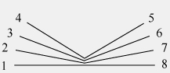
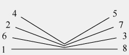
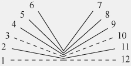

1. Entstehungsgeschichte und -kontexte
2. Kodikologische Besonderheiten
3. Inhalt: Wolframs ›Parzival‹
5. Schreibgewohnheiten und Schrift
7. Textgeschichtliche Konturen
Die in der Burgerbibliothek Bern unter der Signatur Cod. AA 91 aufbewahrte ›Parzival‹-Handschrift bietet ein charakteristisches Beispiel für den literarischen Geschmack eines städtischen Publikums in der zweiten Hälfte des 15. Jahrhunderts. Der zwischen 1200 und 1210 entstandene Gralroman Wolframs von Eschenbach ist in diesem Codex nach einer über 250 Jahre währenden Überlieferungsgeschichte mit zahlreichen einschneidenden Veränderungen dokumentiert. Gegenüber den frühen Textfassungen in Manuskripten des 13. Jahrhunderts wie der St. Galler Epenhandschrift (Stiftsbibliothek, Cod. 857) oder der Münchener Wolfram-Handschrift (Bayerische Staatsbibliothek, Cgm 19) beinhaltet die Berner Handschrift eine Version, in der die höfischen und religiösen Dimensionen der Dichtung nur noch gebrochen vermittelt sind.
Diese inhaltlichen Abweichungen gegenüber der älteren Überlieferung werden durch sprachliche und mediale Manipulationen der überkommenen Textgestalt befördert: Der Schreiber bedient sich einer alemannisch gefärbten frühneuhochdeutschen Sprachform, in der er den mittelhochdeutschen Text stilistisch, aber auch redaktionell, etwa durch Verszusätze, modernisiert. Zudem liefert er Anweisungen für Illustrationen, die ein Maler mit kolorierten Federzeichnungen in einem späteren Arbeitsgang ausgeführt hat.
Die auf diese Weise fassbar werdenden Eingriffe bekunden eine Arbeit an der Texttradition, die der Schreiber zumindest teilweise aus einer heute verlorenen Vorlage übernommen haben dürfte. Zugleich lassen sich eigene Anteile ermessen, dies gerade auch an Stellen, an denen die Bemühungen um eine verständliche Vermittlung der Dichtung missglückt erscheinen: in der wiederholten Missdeutung einzelner Verse, in der verzerrten Wiedergabe von Textzusammenhängen bei den Malanweisungen und nicht zuletzt in der Missachtung dieser Vorgaben durch den Zeichner. Die Berner ›Parzival‹-Handschrift stellt damit ein ebenso eigenwilliges wie einzigartiges Rezeptionszeugnis dar, in dem sich ein spätmittelalterliches Stadtpublikum einen der großen Versromane der Stauferzeit aneignet.
Im späteren 15. Jahrhundert, der Entstehungszeit der Handschrift, ist Bern die „Stadt mit dem größten Herrschaftsgebiet“ im deutschen Sprachraum und „zugleich auch die südlichste; im Ausbau ihrer Staatlichkeit erinnert sie an italienische Stadtstaaten“.(1) Aus der alten zähringisch-staufischen Ordnung haben die Herren von Bern die Landeshoheit mit Rechten im Bereich des Gerichts- und Verwaltungs-, des Steuer- und Militärwesens übernommen. Das auf diese Weise verwaltete Territorium erstreckt sich gen Süden bis an den Genfer See. Innerhalb der Stadtmauern kommt es zu einer dynamischen Verbindung zwischen der altadeligen Führungselite und dem aufstrebenden Bürgertum. Als kulturelles Vorbild dient das Hofleben der burgundischen Herzöge, was sich in einer bewussten Förderung der Malerei, Musik und Literatur durch die städtische Oberschicht niederschlägt.
Eine wichtige Rolle im Leben der Stadt spielt die Gruppe der Twingherrengeschlechter, ein exklusiver Kreis von Familien, die in der Stadt leben und zugleich Gerichtsherrschaften auf dem Lande besitzen.(2) Diese Familien entstammen entweder dem alten Adel oder sie sind, aus dem Bürgertum kommend, durch Erfolge in Handwerk, Handel und Gewerbe in die führenden Kreise der Stadt vorgedrungen. Letzteres gilt für den Kaufmann Jörg Friburger (gest. 1513), der im Berner ›Parzival‹-Codex als Erstbesitzer genannt ist und die Handschrift wohl auch in Auftrag gegeben hat.
Einträge am Beginn und am Ende des Manuskripts ermöglichen eine vergleichsweise genaue Eingrenzung des Entstehungskontexts: Neben dem Namen Jörg Friburgers findet sich derjenige des Schreibers Johann Stemhein von Konstanz, jeweils ergänzt durch die Jahreszahl 1467. Mit diesen exakten Angaben bietet die Berner Handschrift ein aussagekräftiges Zeugnis der literarischen und kulturellen Interessen, wie sie die von französisch-burgundischen Einflüssen geprägte Stadt an der Aare im späteren 15. Jahrhundert aufweist. Zugleich stellt sie einen der spätesten Ausläufer der umfangreichen Überlieferung von Wolframs ›Parzival‹ dar: Es handelt sich um den letzten datierten handschriftlichen Textzeugen, der überdies mit Illustrationen versehen ist.(3) Mit dem 1477 in der Straßburger Offizin von Johannes Mentelin hergestellten Druck(4) bricht die mittelalterliche Überlieferung ab. Erst die Bemühungen Johann Jakob Bodmers im Zürich des 18. Jahrhunderts erwecken ein neues, nunmehr philologisch orientiertes Interesse an dem Text.(5)
Ebenfalls philologisch geleitet ist die neuzeitliche Wiederentdeckung der Berner ›Parzival‹-Handschrift. In den Besitz der späteren Burgerbibliothek kann der Codex erst nach 1772 gelangt sein, da er in dem von Johann Rudolf Sinner von 1760 bis 1772 herausgegebenen Katalog zu den Beständen der Berner Bibliothek noch nicht erscheint.(6) Im frühen 19. Jahrhundert wird die Handschrift dann von Friedrich Heinrich von der Hagen erwähnt, der 1816 zu Handschriftenstudien in der Schweiz weilt und die Berner Bibliothek am 25. September besucht. In seinen ›Briefen in die Heimat‹ hält von der Hagen fest:
„Eine Handschrift von Eschenbachs Parcival ist noch nicht lange hier: sie ist auf Papier 1467 durch Johann Stemhein von Constanz geschrieben, mit guten Federzeichnungen, aber vorn mangelhaft“.(7)
Von der Hagen vermerkt hier also auch materielle Besonderheiten wie den Beschreibstoff Papier und die noch heute bestehenden Beeinträchtigungen des Textes am Beginn des Manuskripts. Weitere Erwähnungen findet das Manuskript in der nur handschriftlich vorliegenden ›Geschichte der Stadt-Bibliothek Bern‹ Karl Ludwig von Steigers(8) und in Hermann Hagens Katalog von 1875.(9) In der ›Parzival‹-Philologie ist die Handschrift durch den Berner Germanisten Samuel Singer bekannt geworden, nach dessen Angaben Ernst Martin Anmerkungen im 1903 erschienenen Kommentar zu seiner ›Parzival‹-Ausgabe eingefügt hat.(10) In den darauf folgenden Jahren sind die Untersuchungen von Karl J. Benziger zu den Illustrationen(11) sowie von Werner B. Kupferschmid und Henrik Becker zum Wortschatz und Stil erschienen.(12) Mit diesem Forschungsstand hat Eduard Hartl das Manuskript in das Handschriftenverzeichnis seiner 1952 erschienenen ›Parzival‹-Ausgabe aufgenommen.(13) Berücksichtigung findet der Berner ›Parzival‹ auch in den kodikologisch beschreibenden Verzeichnissen von Otto Homburger, Peter Jörg Becker und Bernd Schirok(14) sowie in der überlieferungsgeschichtlich ausgerichteten Untersuchung von Gesa Bonath.(15)
Ein neues Interesse hat das Manuskript im Kontext von Forschungen zur volkssprachigen Manuskriptkultur geweckt; so hat Michael Curschmann dem Codex im Jahr 1992 einen eigenen Beitrag gewidmet.(16) Curschmann wertet den Berner ›Parzival‹ mit seinen Malanweisungen und Illustrationen als typisches Produkt mittelalterlicher Laienliteratur, bei der es durch mündliche Vortrags- und Vermittlungsweisen sowie durch die gezielte Nutzung des Bildmediums zu Aneignungsprozessen und den damit verbundenen Neudeutungen traditioneller Epenstoffe kommt. Auf diesen Ansatz wird noch zurückzukommen sein (vgl. Kap. 9). Nach Curschmanns Untersuchung schlossen sich weitere, zum Teil unveröffentlichte und entlegen publizierte Studien von Ulrike Bürger, Daniel Slongo, Michael Stolz und Anne Stephan-Chlustin an, welche die Text-Bild-Bezüge einer zweiten, ebenfalls aus Jörg Friburgers Besitz stammenden Handschrift (Freiburg, Schweiz, Kantons- und Universitätsbibliothek, Ms. L 309) sowie das weitere literarische Umfeld Berns einbeziehen.(17)
Die nachfolgenden Ausführungen greifen diese Ansätze auf und zeichnen zunächst die Entstehungsgeschichte und -kontexte der Handschrift nach. Sie erläutern zudem den Inhalt des Manuskripts sowie dessen Einrichtung, Layout und Buchschmuck. Berücksichtigt werden ferner Bezugsgefüge, in denen die Handschrift mit ihrem literaturgeschichtlichen Standort einerseits und mit ihrer textgeschichtlichen Einordnung im Rahmen der ›Parzival‹-Überlieferung andererseits steht.
Im Anhang finden sich ein Glossar, das einschlägige Fachbegriffe erläutert, und ein Literaturverzeichnis. Das vorgelegte Digitalfaksimile soll einen von editorischen Voreinstellungen unverstellten Blick auf das Manuskript eröffnen. Es ermöglicht ein von Erläuterungen und Verweisen auf einschlägige Textausgaben unterstütztes, virtuelles Blättern in der Handschrift. Begleitend wird eine Transkription des Textes zur Verfügung gestellt. Auf diese Weise wird sichtbar, wie Wolframs ›Parzival‹ in einer Spätphase seiner Überlieferung gelesen und verstanden worden ist.
Nachweise für das entstehungsgeschichtliche Umfeld finden sich auf Blatt 176r sowie auf den Vorsatzblättern am vorderen und hinteren Deckelspiegel der Handschrift. Die Entstehungsgeschichte im engeren Sinne dokumentiert der Schreiberkolophon auf dem letzten Blatt des ›Parzival‹-Eintrags (Bl. 176rb):(18)
Explicit barczifal 3a an(te) purificac(i)o(n)is marie Anno etc lxvij° p(er) me Joh. Stemhein de Constancia
Die Notiz besagt, dass der Schreiber Johann Stemhein (oder Steinhein, vielleicht auch Stemheim, Steinheim) aus Konstanz die Abschrift am Dienstag vor dem Fest Mariä Reinigung (2. Februar) des Jahres 1467, d.h. am 27. Januar 1467, fertiggestellt hat.(19) Wenig später dürfte der Codex in den Besitz von Jörg Friburger übergegangen sein, denn auf diesen bezieht sich der unmittelbar unter dem Kolophon stehende Eintrag:
Dis buͦch ist Joͯrg Friburgers Von bern 1467
Von derselben Hand ausgeführt, findet sich dieser Vermerk auch auf dem vorgebundenen Blatt Iv am Beginn des Codex. Friburgers Name begegnet außerdem auf der Vorderseite dieses Blatts. Auf seine Familie verweist ferner ein großformatiges Blatt mit testamentarischen Verfügungen, das als Einbandmakulatur verwendet worden ist und jeweils neben dem vorderen und hinteren Einbanddeckel liegt, wobei sich die Schrift teilweise auf den Innenseiten der Deckel abgedruckt hat. Am Beginn der linken Hälfte des Blatts, das sich neben dem hinteren Einbanddeckel befindet, ist der Name des Erblassers Gilyan Friburger deutlich erkennbar. Es handelt sich hierbei um den 1438 verstorbenen Vater von Jörg Friburger. Gilian erwähnt im Testament seinerseits seinen Vater Simon, seine Mutter sowie deren Vater Hans Pfister, für die er jährliche Seelenmessen stiftet. Das Testament bezeugt die umfangreichen Besitzungen der Familie Friburger. Erwähnt wird – ganz am Ende des in der Handschrift erhaltenen Teils – auch eine (uneheliche?, unverheiratete?) Tochter, der Gilian ein Haus in der Nähe des Rathauses vermacht. Auf diese Weise wird in der Berner ›Parzival‹-Handschrift die Generationenfolge einer Familie fassbar, die auch in anderen Zeugnissen der Stadt Bern und ihres Umkreises in Erscheinung tritt.(20) Ihre Angehörigen walten als bernische Ratsmitglieder, als Landvögte, Gerichtsherren und Schultheißen der umliegenden Städte Burgdorf und Murten. Als solche sind sie in den Udelbüchern (Häuser- und Bürgerverzeichnissen) sowie in den Tellbüchern (Vermögenssteuerregistern) belegt.(21)
Jörg Friburger ist der erste Spross der Familie, der mit seinem Vermögen, seinen Ämtern und der Gerichtsherrschaft über Aetingen in den Rang eines Twingherrn aufgestiegen ist. Wie in dieser Gesellschaftsschicht üblich, leistete er sich ein Stadthaus in prestigeträchtiger Lage, an der heutigen Kramgasse.(22)
In Berner Urkunden ist Jörg Friburger zwischen 1457 und 1513, seinem Todesjahr, erwähnt.(23) In jüngeren Jahren hat er an einem Kriegszug gegen die Bürgerschaft der Stadt Mainz teilgenommen, von dem er 1464 in die Berner Kramgasse zurückgekehrt ist.(24) Er übte den Beruf eines wohlhabenden Kaufmanns aus und amtete ab 1468 erstmals, danach wiederholt als Mitglied des Kleinen Rates der Stadt Bern. 1469 bis 1472 war er Landvogt auf der Lenzburg, einer der vornehmsten und prestigeträchtigsten Landvogteien im Aargau.(25) Die Grund- und Gerichtsherrschaften trugen ihm den Junkerntitel ein. 1474 beteiligte er sich als Mitglied des Kleinen Rates an einer diplomatischen Reise, die den Altschultheißen Niklaus von Scharnachthal und weitere Berner Gesandte zu Karl dem Kühnen und dessen Stadthalter im elsässischen Ensisheim führte.(26) Weitere Ämter versah er als Landvogt auf der Grasburg (1474–1478)(27), dann erneut auf der Lenzburg (1479–1483) und als Schultheiß zu Murten (1490); mit einer letztmaligen Mitgliedschaft im Kleinen Rat 1494 beschloss er seine politische Laufbahn. Jörg Friburgers Karriere dürfte durch die Zugehörigkeit zu einflussreichen Zunftgesellschaften maßgeblich gefördert worden sein, so zu jener zu Obermetzgern und der Gesellschaft zum Distelzwang.(28)
Im Rahmen dieses gesellschaftlich-politischen Lebenslaufs zeichnet sich auch eine Teilhabe am zeitgenössischen Kulturleben ab. Die Berner Twingherren orientierten sich in ihrem Geltungsanspruch am Repräsentationsstil der benachbarten burgundischen Herzöge. Sie bedienten sich der Kunst, der Literatur und der Mode, um ihre politisch exklusive Stellung zu demonstrieren. Die Konkurrenz mit den bürgerlichen Handwerkern um die Macht im aufstrebenden Stadtstaat führte 1469 bis 1471, also nur wenige Jahre nach der Fertigstellung der ›Parzival‹-Handschrift, zum sogenannten Twingherrenstreit.(29) Dabei versuchte der vorübergehend von der Handwerkerschicht beherrschte Rat, das Tragen burgundischer Mode mit ihren luxuriösen Gewändern und spitzen Schuhen durch spezielle Kleiderordnungen einzuschränken. Die Darstellung der Figuren in den Illustrationen des ›Parzival‹-Codex dokumentiert ihrerseits den Einfluss des von den Twingherren bevorzugten burgundischen Stils (vgl. z.B. Ill. 10, Bl. 47r; Ill. 20, Bl. 63v; Ill. 24, Bl. 128r).
Einer der Twingherren, mit dem Jörg Friburger nachbarschaftliche und zünftische Beziehungen unterhielt, war der ebenfalls an der Kramgasse wohnhafte Thüring von Ringoltingen. Dieser Kontakt mit einem zu Friburgers Lebzeiten bereits etablierten Angehörigen der Twingherrenschicht ist insofern von Belang, als mit ihm weitere literarische Interessen des Berner Stadtadels sichtbar werden: Thüring ist der Autor einer 1456 abgeschlossenen deutschsprachigen Version des französischen ›Melusine‹-Romans.(30) Erwähnenswert ist ferner, dass aus dem Besitz der Familie Friburger und damit aus Jörgs Umkreis eine weitere Handschrift bekannt ist (Freiburg, Schweiz, Kantons- und Universitätsbibliothek, Ms. L 309). Sie lässt mit ihrem astronomisch-heilkundlichen Inhalt zumindest ansatzweise den Bestand einer Familienbibliothek erahnen.(31) Auf Einzelheiten dieses im Kontext des zeitgenössischen Kultur- und Literaturlebens angesiedelten Profils der Berner ›Parzival‹-Handschrift wird noch zurückzukommen sein (vgl. Kap. 10).
Die sowohl im Schreiberkolophon als auch in den Besitzeinträgen erscheinende Jahreszahl 1467 zeigt an, dass Jörg Friburger den ›Parzival‹-Codex unmittelbar nach der Fertigstellung in seine Bibliothek übernommen haben dürfte. Vermutlich hat er die Anfertigung der Handschrift sogar bei Johann Stemhein in Auftrag gegeben. Dass es zwischen dem Abschluss von Stemheins Arbeit und der Aneignung durch den Besitzer eine Zwischenphase gab, lässt sich allerdings aus einer Manipulation der Jahreszahl bei den Friburger betreffenden Einträgen ersehen. Sowohl auf der Rückseite des vorgebundenen Blatts Iv als auch auf Blatt 176r steht die Ziffer 7 auf einer Rasur; die ursprünglich eingetragene Ziffer 8 ist noch klar zu erkennen.
Diese Änderung könnte mit der Illustrierung des Manuskripts zusammenhängen. Anhand der Bildüberschriften lässt sich erschließen, dass der Schreiber Johann Stemhein Anweisungen für die Zeichnungen gegeben hat, die dann ein unbekannter Maler nach der Beschriftung des Manuskripts ausführte, ohne die Vorgaben immer genau zu befolgen. Der Maler könnte die Illustrationen im Laufe der Jahre 1467/68 angefertigt haben. Der Besitzeintrag vom Jahr 1468 wäre dann rückwirkend geändert worden, um eine Kohärenz mit dem Schreiberkolophon herzustellen und Friburgers sofortigen Erwerb zu suggerieren.
Die Papierhandschrift besteht aus 180 paginierten Blättern im Folioformat; hinzu kommen das vorgebundene Blatt I sowie die aus der erwähnten Testamentsurkunde bestehenden Vorsatzblätter am vorderen und hinteren Einbanddeckel.(32) Die Blattgröße beträgt 31 x 21,5 cm, der Schriftspiegel 23 x 16–17,5 cm.
Das Papier trägt verschiedene Ochsenkopfwasserzeichen, von denen ein Paar kleiner Ochsenköpfe mit Stange und Tau für die Jahre 1464 bis 1474 in den Papiermühlen von Basel, Breisach und Eppstein im Taunus in Gebrauch war (verwendet in den Lagen 3–11, 13–15).(33) Zwei weitere Wasserzeichen, ein Paar großer Ochsenköpfe sowie ein kleiner Ochsenkopf mit Ring auf Blatt I, konnten bislang nicht identifiziert werden. Auf Blatt 178r wurde ein im Papier vorhandenes Ochsenkopfwasserzeichen von einem Benutzer mit Tinte nachgezogen.
Bei den für die Handschrift verwendeten Lagen handelt es sich zumeist um Sexternionen (Einheiten von sechs Doppelblättern bzw. zwölf Blättern). Eigenheiten der Lagenstruktur werden weiter unten gesondert behandelt (vgl. Kap. 4). Bereits hier sei jedoch darauf verwiesen, dass in der ersten Lage einige Blätter, darunter auch jene mit dem Beginn des Textes, verloren sind.
Beschädigungen am Einband könnten diesen Blattverlust im Laufe der Geschichte des Codex begünstigt haben. Als sich Johann Lindt im Jahr 1939 an die Restaurierung der Handschrift machte, fand er den Einband in desolatem Zustand vor. Gemäß seinen Angaben auf der Innenseite des vorderen Einbanddeckels waren der „Rücken defekt“, die „Weisslederbünde [...] auf der Vorderseite alle gebrochen“; es fehlten die Kapitale (die Verbindungen zwischen den beiden Buchdeckeln am oberen und unteren Buchrücken) und Schließen. Wie Lindt angibt, konnte er diese Schäden beheben. Er beließ die Heftung, verlängerte aber deren Bünde auf der Vorderseite und fügte einen neuen Lederrücken ein. Zum Einband selbst gab er mit Verweis auf den Erstbesitzer Jörg Friburger an: „Vermutlich Berner-Einband, vor 1500“.
Ein weiteres, am Ende von Lindts Notizen aufgeklebtes Restaurierungsprotokoll von ML (Monika Lüthi) mit Datum vom 8. Juli 1993 besagt, dass verschiedene Spuren von Klebstreifen und -stoffen entfernt und Fehlstellen der Handschrift mit Fasern ergänzt worden sind.
Nach wie vor finden sich im Codex Verstärkungsfalze am innersten, gelegentlich auch am äußersten Bogen der Lagen (z.B. Bl. 168v/169r). Die Pergamentstreifen stammen aus älteren Handschriften und lassen lateinische Texte in hochgotischer Perlschrift des 13. und 14. Jahrhunderts erkennen. Eines der beiden Notate ist einspaltig, das andere zweispaltig.(34)
Der Einband im Format 32,2 x 22 cm dürfte aus der Entstehungszeit des Codex (1467/68) stammen.(35) Die Buchenholzdeckel weisen am äußeren Rand entlang der Kanten Abschrägungen auf; der stark abgeriebene Schnitt war ursprünglich wohl von ockerbrauner Farbe. Die heute vorhandenen Schließen stammen von der Restaurierung im Jahre 1939. Der Überzug ist aus dunkelbraun eingefärbtem Leder, wobei Rücken und Oberkante des Vorderdeckels bei der Restaurierung von 1939 neu bezogen wurden.
Als Verzierungen sind entlang den Kanten mit Vierlinien-Streicheisen zwei Rahmen aufgeprägt. In einem auf dieselbe Weise umrahmten Mittelfeld führen diagonale Streicheisenlinien auf den inneren Rahmen zu. Der äußere Rahmen enthält rechteckige Stempel mit floralem Motiv; in den Ecken findet sich ein quadratischer Stempel, dessen Motiv nicht mehr zu erkennen ist. Der innere Rahmen ist mit S-förmigen, geperlten Stempelchen gefüllt. Im Mittelfeld überlagern sich Schriftbänder mit dem Namen maria.
Der Stil des Dekors ähnelt Einbänden, die der Franziskaner Rolet Stoß ab 1467 in einer Buchbinderwerkstatt des Franziskaner-Klosters in Freiburg (Schweiz) hergestellt hat.(36) Übereinstimmungen bestehen im Herstellungsverfahren des Einbands sowie in einzelnen Stempelformen und der Marieninschrift.
Wolframs in Reimpaarversen abgefasster Roman ›Parzival‹ (entstanden um 1200/10) gehört zu den bedeutendsten Vertretern der Artusepik und verleiht dieser Gattung eine heilsgeschichtliche Dimension. In selbständiger Verarbeitung der französischen Erzählung ›Perceval ou le Conte du Graal‹ des Chrétien de Troyes (verfasst vor 1190) erzählt Wolfram von den Geschicken des Ritters Parzival, der einen beschwerlichen Aventiure-Weg vom jugendlichen Toren zum Herrscher über das Gralreich beschreitet. Das zentrale Motiv des Romans ist eine unterlassene Frage: Aus falsch verstandener Höflichkeit erkundigt sich Parzival bei seinem ersten Besuch auf der Gralburg Munsalvæsche nicht nach dem Grund des Leidens, das den König Anfortas, seinen Oheim, quält. Dadurch verwirkt er seinen eigenen Anspruch auf das Gralkönigtum und muss diesen in einer mühsamen Läuterung zurückgewinnen. Wichtige Stationen auf Parzivals Weg zur Erkenntnis seiner Bestimmung sind die Begegnungen mit der trauernden Sigune, die Auftritte der körperlich entstellten Gralbotin Kundrie und die Einkehr bei dem Einsiedler Trevrizent. Als Parallelfigur erscheint der Ritter Gawan, der sich ausschließlich in weltlichen Prüfungen (des ritterlichen Kampfes und der Minne) bewährt und anders als Parzival nicht zu einer religiösen Bestimmung gelangt. Eine Verbindung mit der Welt des Orients schafft Wolfram durch die Vorgeschichte, die von Parzivals Vater Gahmuret und der Zeugung des Halbbruders Feirefiz mit der schönen Heidin Belakane erzählt. Verwandtschaftliche Bindungen sind ein Thema, das die Erzählung (u.a. beim späteren Auftreten des Feirefiz) leitmotivisch durchzieht. Mit hintergründigem Humor wirkt der Erzähler an seinem Stoff und gewinnt der Handlung immer wieder neue, überraschende Aspekte und Wendungen ab.
Der erste Herausgeber der Textes, Karl Lachmann, hat den Roman in 16 Bücher sowie in Gruppen von Dreißigerversen unterteilt (letztere orientieren sich an der Initialsetzung in der frühen Überlieferung des 13. Jahrhunderts). In Buch VI erzählt Wolfram unter anderem davon, wie Parzival bei der Betrachtung dreier Blutstropfen auf weißem Schnee in Trance verfällt. Die Spuren stammen von einer Gans, die ein dem Artushof entflogener Falke verwundet hat. Parzival meint in diesem suggestiven Farbbild das Antlitz seiner Frau Condwiramurs zu sehen. Zwei Herausforderer des Artushofs, die ihn bei dieser Betrachtung stören, wirft er kurzerhand aus dem Sattel. Erst als sich Gawan waffenlos nähert und die Blutstropfen mit einem Mantel bedeckt, ist der Bann gebrochen. Die Szene ist eine wichtige Station auf Parzivals Weg zur Erkenntnis: Hat er kurz zuvor im engherzigen Befolgen von Verstandesregeln die Mitleidsfrage auf Munsalvæsche verfehlt, so ist es nunmehr gerade die mit der Liebe zu Condwiramurs verbundene Bewusstlosigkeit, die ihn erneut an seine Verantwortung gegenüber dem Gral gemahnt: ‚Sein beständiges Denken an den Gral und die der Königin gleichenden Spuren im Schnee – beide waren ihm eine schwere Bedrängnis‘ (Sin pansieren vmbe gral/ Vnd der kunginne glich mal/ Jettweders was ein strenge not, 296,5–7, vgl. die Berner Handschrift, Bl. 58va). In den Illustrationen des Codex wird die Szene durch mehrere aufeinander folgende Zeichnungen verbildlicht (Bl. 56r, 57v, 58r, 59v).
Editorische Angaben:
Sigle der Berner Handschrift in der Editionsphilologie des ›Parzival‹: R (in älteren Forschungsarbeiten Gχ). Der Textzeuge gehört zum Überlieferungszweig *G (benannt nach Handschrift G: München, Bayerische Staatsbibliothek, Cgm 19, Mitte des 13. Jhs.), dort zur Gruppe OQR (in älteren Forschungsarbeiten Gk Gτ Gχ, vgl. unten, Kap. 7).
Wichtige Ausgaben (orientiert an der Handschrift D: St. Gallen, Stiftsbibliothek, Cod. 857):
Wolfram von Eschenbach, hg. von Karl Lachmann, Berlin 1833, S. 13–388.
Wolfram von Eschenbach, Parzival, nach der Ausgabe Karl Lachmanns revidiert und kommentiert von Eberhard Nellmann, übertragen von Dieter Kühn, 2 Bde., Frankfurt am Main 1994 (Bibliothek des Mittelalters 8,1/2 [Bibliothek deutscher Klassiker 110]).
Wolfram von Eschenbach, Parzival. Studienausgabe. Mittelhochdeutscher Text nach der sechsten Ausgabe von Karl Lachmann, Übersetzung von Peter Knecht, mit Einführungen zum Text der Lachmannschen Ausgabe und in Probleme der ›Parzival‹-Interpretation von Bernd Schirok, 2. Aufl., Berlin/New York 2003.
Wolfram von Eschenbach, Parzival, auf der Grundlage der Handschrift D hg. von Joachim Bumke, Tübingen 2008 (Altdeutsche Textbibliothek 119).
Englische Übersetzung:
Wolfram von Eschenbach, Parzival, translated by Cyril Edwards with Titurel and the Love-Lyrics and with an essay on the Munich Parzival illustrations by Julia Walworth, Woodbridge/Rochester (NY) 2004 (Arthurian Studies 56).
Der Text des ›Parzival‹ ist im Berner Manuskript auf insgesamt 15 Lagen verteilt. Neben den bereits erwähnten Sexternionen begegnet auch ein Okternio (eine Einheit zu acht Doppelblättern, „VIII“). Die Lagenstruktur kann in folgender Formel dargestellt werden:(37)
- ?8 + 2VI32 + VIII48 + 11VI180
Die verstümmelte erste Lage reicht bis Blatt 8 und wird hier durch ein Fragezeichen markiert. Im Anschluss daran finden sich Gruppen von zwei und elf intakten Sexternionen, zwischen die der Okternio eingelagert ist. Die Blätter sind den Lagen folgendermaßen zugeordnet (speziell bezeichnet werden nur die verstümmelte erste Lage und der Okternio):
- Lage 1: Bl. 1–8 (verstümmelt)
- Lage 2: Bl. 9–20
- Lage 3: Bl. 21–32
- Lage 4: Bl. 33–48 (Okternio)
- Lage 5: Bl. 49–60
- Lage 6: Bl. 61–72
- Lage 7: Bl. 73–84
- Lage 8: Bl. 85–96
- Lage 9: Bl. 97–108
- Lage 10: Bl. 109–120
- Lage 11: Bl. 121–132
- Lage 12: Bl. 133–144
- Lage 13: Bl. 145–156
- Lage 14: Bl. 157–168
- Lage 15: Bl. 169–180
Mit Ausnahme der ersten, unvollständigen Lage finden sich am Ende einer jeden Lage unterhalb der rechten Spalte sogenannte Reklamanten (‚Rück-‘ oder ‚Zurufer‘): Es handelt sich um Versteile, die mit dem ersten Vers der folgenden Lage übereinstimmen und damit das korrekte Ordnen der Lagen beim Binden der Handschrift erleichtern. So verweist etwa auf Blatt 48v (am Ende der vierten Lage) das Syntagma Des aubencz do er kome(n) w(a)z auf den ersten Vers von Blatt 49r; auf Blatt 60v (am Ende der fünften Lage) zeigt das Syntagma Got all(er) erst darnach mir (in leicht verkürzter Form) den ersten Vers von Blatt 61r an. Innerhalb der Lagen sind die Blätter von der sechsten bis zur dreizehnten Lage mit arabischen Ziffern im gotischen Stil foliiert (jeweils in der rechten unteren Ecke der ersten Rectoseite eines Doppelblatts, vgl. z.B. die Ziffern 1 bis 6 auf Bl. 61r bis 66r). Eine moderne Blattzählung ist mit Bleistift in der rechten oberen Ecke der Rectoseiten eingetragen.
In der heute vorliegenden Gestalt des Codex ist der Beginn des Texteintrags auf den ersten acht Blättern verdorben. Es fehlen die Anfangsverse (1,1 – 11,18) sowie zwei weitere Versabschnitte (48,21 – 54,6; 58,9 – 63,24).(38) Doch auch die Versabfolge selbst ist gestört, wie sich aus der folgenden Übersicht ersehen lässt:
- Bl. 1: Verse 27,21 – 32,25 (dieses Blatt ist seitenverkehrt eingebunden)
- Bl. 2: Verse 16,30 – 22,11
- Bl. 3: Verse 22,12 – 27,17
- Bl. 4: Verse 27,18; 32,29 – 38,3
- Bl. 5: Verse 38,4 – 38,8; 11,19 – 16,23
- Bl. 6: Verse 16,24 – 16,28; 38,9 – 43,11
- Bl. 7: Verse 43,12 – 48,20
- Bl. 8: Verse 54,7 – 58,8
Die acht Blätter sind heute mit Japanpapier aneinandergebunden. Angesichts der Tatsache, dass ein Großteil des Codex aus Sexternionen besteht, erscheint es naheliegend, dass sie ihrerseits einst zu einer solchen aus sechs Doppelblättern bestehenden Einheit gehört haben. Diese Vermutung bestätigt sich, wenn man die an dem Codex vorgenommenen Restaurationsarbeiten berücksichtigt.(39)
Anlässlich seiner im Jahr 1939 durchgeführten Arbeiten vermerkte der Restaurator Johann Lindt auf dem Japanpapierfalz, mit dem die Blätter I und 1 verbunden sind: „Die Flicke im Falz sind nicht von mir.“ Die Verklebungen müssen also schon vor dieser Zeit angebracht worden sein.
Ohne Japanpapier hängen einzig die Blätter 4 und 5 zusammen, die das mittlere Doppelblatt der alten Lage bilden und durch einen aufgeklebten Pergamentfalz als Lagenmitte gekennzeichnet sind. Von hier ausgehend kann der ursprüngliche Sexternio rekonstruiert werden: Die jetzigen Blätter 4 und 5 standen dort als die inneren Blätter 6 und 7. Zusätzlich zu den erhaltenen acht Blättern muss die Lage vier weitere Folien aufgewiesen haben.
Aus den vorhandenen Blättern, wie z.B. Blatt 2 oder 3, lässt sich ersehen, dass ein Blatt jeweils fünf Dreißiger und einige weitere Verse umfasste (Bl. 2 etwa den Vers 16,30 und die fünf Dreißiger 17–21 sowie die Verse 22,1–11; Bl. 3 die fünf Dreißiger-Gruppen 22,12 bis 27,11 sowie die Verse 27,12–17). Dieser Befund legt es nahe, dass die fehlenden Anfangsverse 1,1 bis 11,18 auf zwei Blättern der ehemaligen Lage, die fehlenden Versgruppen 48,21–54,6 und 58,9–63,24 ebenfalls auf je zwei Blättern Platz gefunden haben dürften.
Die oben wiedergegebene Übersicht der heutigen Blattordnung lässt erkennen, dass es am Beginn des Texteintrags wiederholt zu Einschüben kommt, so auf Blatt 4/5 mit der Versfolge 32,29–38,8 und auf Bl. 5/6 mit der Versfolge 11,19–16,28. Beide Abschnitte umfassen genau 160 Verse, was darauf hindeutet, dass die Vorlage Blätter mit genau dieser Verszahl (je zwei Seiten mit zwei Spalten zu 40 Versen) enthielt.(40) Offensichtlich waren die Blätter in der Vorlage verbunden, so dass es bereits dort zu Unregelmäßigkeiten in der Versabfolge kam.
Ausgehend von den in der Berner Handschrift dokumentierten Verseinschaltungen lässt sich nun die Versanordnung am Beginn der Vorlage rekonstruieren. Die Versfolgen der Einschübe passen sich exakt in die unten aufgestellte Übersicht ein (vgl. Bl. 3 und 7), dies unter der Voraussetzung, dass man von einem ersten Blatt ausgeht, das – vermutlich bedingt durch eine Überschrift oder eine Auszeichnung (etwa eine Zierinitiale) – ein Verspaar weniger als die folgenden Blätter (also nur 158 Verse) enthält:
- Bl. 1: Verse 1,1 – 6,8
- Bl. 2: Verse 6,9 – 11,18
- Bl. 3: Verse 11,19 – 16,28
- Bl. 4: Verse 16,29 – 22,8
- Bl. 5: Verse 22,9 – 27,18
- Bl. 6: Verse 27,19 – 32,28
- Bl. 7: Verse 32,29 – 38,8
- Bl. 8: Verse 38,9 – 43,18
Die folgende Graphik zeigt die Anordnung der Blätter in der Vorlage, wobei von einem Quaternio, einer Lage mit vier Doppelblättern, ausgegangen wird:

Wie die Einschübe in der Berner ›Parzival‹-Handschrift belegen, waren die Blätter jedoch auf folgende Weise falsch eingebunden:

Das dritte Doppelblatt (Bl. 3/6) war zwischen das erste und das zweite Doppelblatt (Bl. 1/8, 2/7) geraten und dabei umgewendet worden (Bl. 6/3), so dass sich in der Vorlage folgende Ordnung ergab:
- Bl. 1: Verse 1,1 – 6,8
- Bl. 6: Verse 27,19 – 32,28
- Bl. 2: Verse 6,9 – 11,18
- Bl. 4: Verse 16,29 – 22,8
- Bl. 5: Verse 22,9 – 27,18
- Bl. 7: Verse 32,29 – 38,8
- Bl. 3: Verse 11,19 – 16,28
- Bl. 8: Verse 38,9 – 43,18
Geht man nun für den Beginn des Berner Codex, wie bereits erwähnt, von einem Sexternio aus, so spiegelt sich dort die in Unordnung geratene Blattfolge der Vorlage. Die Abschrift der ersten Lage hat zu den von dort übernommenen Versverschiebungen geführt. Erst mit Beginn des letzten Blatts der ersten Lage (Vorlage, Bl. 8 bei Vers 38,9) beginnt wieder eine geregelte Versabfolge.
Die folgende Graphik zeigt die Blattordnung der einstigen ersten Lage der Berner Handschrift unter Berücksichtigung der vier verlorenen Blätter. In der anschließenden Übersicht werden den Blättern die entsprechenden Verse zugeordnet (die heutige Bezifferung der Blätter steht in Klammern):

- Bl. 1 (verloren): Verse 1,1 – 6,8; 27,19–20
- Bl. 2 (heute Bl. 1): Verse 27,21 – 32,25
- Bl. 3 (verloren): Verse 32,26–28; 6,9 – 11,18; 16,29
- Bl. 4 (heute Bl. 2): Verse 16,30 – 22,11
- Bl. 5 (heute Bl. 3): Verse 22,12 – 27,17
- Bl. 6 (heute Bl. 4): Verse 27,18; 32,29 – 38,3
- Bl. 7 (heute Bl. 5): Verse 38,4–8; 11,19 – 16,23
- Bl. 8 (heute Bl. 6): Verse 16,24–28; 38,9 – 43,11
- Bl. 9 (heute Bl. 7): Verse 43,12 – 48,20
- Bl. 10 (verloren): Verse 48,21 – 54,6
- Bl. 11 (heute Bl. 8): Verse 54,7 – 58,8
- Bl. 12 (verloren): Verse 58,9 – 63,24
Von dem ehemaligen Sexternio fehlen also die Blätter 1, 3, 10 und 12.(41) Möglicherweise geht ihr Verlust darauf zurück, dass ein Besitzer die Blätter mit Ausnahme des mittleren Doppelblatts (6/7, heute 4/5) zerschnitten hat, um die in Unordnung geratene Versabfolge zu korrigieren, daran aber – aufgrund der bereits in der Vorlage erfolgten Blattvertauschung – zwangsläufig gescheitert ist. Die Blätter wären dann dem Codex lose beigelegen, was ihre Konservierung gefährdete. Für die heute vorliegende Abfolge kann das Jahr 1914 als Terminus ante quem gelten, in dem die Arbeit von Benziger erschienen ist.(42)
Wolframs ›Parzival‹ ist auf den Blättern 1r bis 176r mit schwarzer Tinte in je zwei Spalten von variierender Breite (7–8 cm) eingetragen. Die abgesetzten Verse erreichen pro Spalte einen Umfang von 34 bis 42 Zeilen. Bei der verwendeten Schrift handelt es sich um eine Bastarda, eine im 15. Jahrhundert verbreitete Schreibform, die sowohl Züge der Textualis (mit aus einzelnen Federzügen ‚gebauten‘ Buchstaben) als auch der Kursive (mit Wörtern, deren Buchstaben ohne Absetzen der Feder vom Papier zusammenhängend geschrieben werden) trägt.(43) Die Bastarda wurde besonders von Kanzleischreibern verwendet; es ist durchaus möglich, dass auch Stemhein dieser Zunft angehörte.
Typische Kennzeichen der von ihm verwendeten Schrift sind die sogenannten ‚Elefantenrüssel‘, d.h. verlängerte Zierstriche in anlautenden Buchstaben, die Schlussbögen am Ende der Wörter, die Schlingenbildung bei den Buchstaben b und w, die in bestimmten Abschnitten (besonders den Lagen 7–9, Bl. 73r–108v) zur Schräglage neigenden Schriftzüge sowie die Brechungen bei einzelnen Buchstaben wie w, h und r.(44) Als Abbreviaturen erscheinen gängige Abkürzungszeichen wie Nasalstriche für n, Kürzel für er und r sowie die Form vnd’ für unde.
Für den zweispaltigen Eintrag sind Kolonnen blind vorliniiert worden; in der achten Lage (Bl. 85r–96v) ist die Liniierung mit Tinte vorgezeichnet. Die Beschriftung ist erfolgt, ehe die Blätter illustriert und zu Lagen zusammengebunden worden sind. Dies belegt der fälschlich auf Blatt 61v angebrachte, mit roter Tinte durchgestrichene Vers 355,12. Der Schreiber hat ihn versehentlich auf der linken Innenseite des noch ungebundenen äußersten Doppelblatts der sechsten Lage eingetragen. Diese Seite war für die Illustration freigelassen worden. Als der Schreiber den Fehler bemerkte, strich er den Vers und setzte ihn an die korrekte Stelle zuoberst auf der nebenstehenden Seite (jetzt Bl. 72r).
Als Auszeichnungsmittel begegnen die ebenfalls in den Kanzleien verbreiteten Kadellen: Großbuchstaben am Spaltenanfang, deren Schäfte und Bögen mit teilweise parallel laufenden und sich durchkreuzenden Strichen verziert sind. In ähnlichem Stil sind die mitunter in der letzten Zeile der Kolonnen bei einzelnen Buchstaben (häufig bei g) angebrachten Zierschleifen gehalten. Neben diesen rein dekorativen Auszeichnungen finden sich Rubrizierungen durch Strichelung.
Auffällig sind ferner die rotfarbigen Lombarden mit und ohne Perlung, d.h. Großbuchstaben von zumeist dreizeiliger Höhe, welche den Text untergliedern. Daneben finden sich, ebenfalls im Stil der Lombarden, insgesamt 18 Großinitialen von vier- bis achtzeiliger Höhe, die in seltenen Fällen verziert sind (z.B. Bl. 34ra, 80vb). Sie markieren wiederholt den Einsatz von Abschnitten, die der Erstherausgeber Karl Lachmann gemäß Gliederungsmaßnahmen der frühen ›Parzival‹-Überlieferung (Handschrift D, St. Gallen, Stiftsbibliothek, Cod. 857, und einigen Vertretern des *G-Zweigs, zu dem auch die Berner Handschrift gehört), als ‚Bücher‘ bezeichnet hat(45), so bei:
- Buch IV, 179,13, Bl. 34ra,
- Buch V, 224,1, Bl. 43rb,
- Buch VI, 280,1, Bl. 55va,
- Buch VII, 338,1, Bl. 68rb,
- Buch VIII, 398,1, Bl. 80vb,
- Buch IX, 433,1, Bl. 88rb,
- Buch X, 503,1, Bl. 102va,
- Buch XII, 583,1, Bl. 121ra,
- Buch XV, 734,1, Bl. 154vb,
- Buch XVI, 787,1, Bl. 166ra.
Daneben finden sich Großinitialen am Beginn wichtiger Abschnitte wie des Kyot-Exkurses, in dem der Erzähler über eine (vermutlich fiktive) Quelle neben Chrétiens ›Perceval‹ berichtet (453,1, Bl. 92va). Die auf diese Weise eingesetzten Buchstaben sind jeweils in der linken oberen Ecke des Lombardenfelds vorgezeichnet. Textgliedernde Funktion haben auch die Alinea-Zeichen (in den Transkriptionen wiedergegeben durch ¢). Sie treten ergänzend zu den Lombarden auf. Einmal findet sich eine Kombination von Alinea-Zeichen und Lombarde (256,1, Bl. 50va, zweite Begegnung Parzivals mit der Herzogin Jeschute).
Hinzu treten rotfarbige Bildüberschriften, auf die weiter unten (Kap. 9) noch ausführlicher einzugehen ist.
Die von Stemhein verwendete Schreibsprache ist ein der frühneuhochdeutschen Sprachstufe nahestehendes Alemannisch.(46)
Die Diphthongierung von mhd. /ī/ und /ū/ unterbleibt, so z.B. in strit, schúr (‚Schauer‘, ‚Hagel‘, 56,3, Bl. 8va). Für mhd. langes /ǖ/ und kurzes /ü/ begegnet die Schreibung ú, z.B. in úwer (40,9, Bl. 6rb), kúngin (44,19, Bl. 7rb), úber (45,10). Anstelle der Schreibung ú begegnet auch eine ue-Ligatur, so beim mhd. Adverb oder der Präposition für (fu˒r z.B. 18,24, Bl. 2rb; 33,3, Bl. 4ra) und bei dem mhd. Substantiv viur (Jn dem fu˒re, 37,6, Bl. 4vb).
Der mhd. Diphthong /ie/ ist erhalten, z.B. in liechtte (29,3, Bl. 1vb). Ebenfalls finden sich die Diphthonge /uo/ und /üe/, doch ist bei letzterem oft nicht entscheidbar, ob graphisch die umgelautete Form /üe/ oder die nicht umgelautete Form /uo/ realisiert ist. Häufig steht über dem u ein nicht eindeutig identifizierbares, aus hochgestelltem o oder e hervorgegangenes Superskript. Diese Schreibung wird im Folgenden (und in den Transkriptionen) mit einem hochgestellten o wiedergegeben, wo dies graphisch und lautlich naheliegt (z.B. in getuͦn, 31,24, Bl. 1rb); in allen anderen Fällen erfolgt die Wiedergabe mit einem hochgestellten x (z.B. in gruͯner, 14,20, Bl. 5va).
Der germanische Diphthong /ai/ wird, wie im südwestalemannischen Sprachgebiet üblich, zumeist mit ei wiedergegeben, z.B. in gescheiden, heiden, breit (43,3–5, Bl. 6vb). Nur selten begegnen ostalemannische Formen, etwa im unbestimmten Artikel ain (so in 91,8, Bl. 14va; 435,8, Bl. 88vb) neben deutlich überwiegenden ein-Schreibungen (z.B. eines in 91,9, Bl. 14va).
Der germanische Diphthong /au/ (mhd. /ou/) erscheint in der alten mhd. Schreibweise (z.B. ougen, 29,1, Bl. 1vb; touff, 814,2, Bl. 172vb) oder monophthongiert zu o (ogen, 18,11, Bl. 2rb; toff, 13,27, Bl. 5rb; 28,14, Bl. 1va).
Mhd. /ā/ wird zu /au/ diphthongiert, z.B. in waug (28,16, Bl. 1va), waurent, 39,27 (Bl. 6rb, u.ö.), Raut (797,24, Bl. 169ra).
Die im Alemannischen begegnende Diphthongierung von mhd. /ā/ zu /ou/ deutet sich in einem nicht näher definierbaren Superskript über o an, das im Folgenden (und in den Transkriptionen) als oͯ wiedergegeben wird, so z.B. in der Präposition oͯne (751,11/13, Bl. 160ra, u.ö.).
Vereinzelt begegnet die Rundung von mhd. /ā/ zu /ō/, so z.B. bei mhd. nemen in der Präteritumsform der 3. Person Plural Sy noment/nome(n) (18,2, Bl. 2ra; 148,22, Bl. 27rb; 802,12, Bl. 170ra), wobei diese Erscheinung auch außerhalb des Alemannischen weit verbreitet ist.
Das nebentonige /i/ entfällt, z.B. in kúng (25,4, Bl. 3va), kúngin (35,22, Bl. 4va).
Für daz und waz begegnet die im 15. Jahrhundert allgemein übliche Schreibweise dz, wz, die in den Transkriptionen zu d(a)z, w(a)z aufgelöst wird (z.B. 35,25f., Bl. 4va).
Die Graphien weisen zahlreiche Konsonantengeminationen auf, die wohl eine Akzentuierung (Betonung mit Kürze) des vorausgehenden Vokals anzeigen, so z.B. in strittes (31,18, Bl. 1rb), búttet (31,22), geltten (31,25).
Gelegentlich erscheint inlautendes /j/ als g, etwa in zweiger (für mhd. zweier, 141,17, Bl. 25vb).
In vorvokalischer Stellung begegnet mitunter der Fortisgraph t für /d/, so z.B. in tach (317,27, Bl. 64va; 812,17, Bl. 172va; daneben auch dach, z.B. in 760,15, Bl. 162ra) oder in getagen (253,17, Bl. 50ra, für mhd. gedagen).
Die im Süden der oberdeutschen Mundarten verbreitete Verschiebung von /k/ zu /kch/ bleibt graphisch unberücksichtigt.
Der mhd. Dentalplural -nt ist in der 3. Person Plural Indikativ Präsens erhalten, z.B. in sprechent (29,13, Bl. 1vb), und erscheint wiederholt in der alemannischen Übertragung auf die 2. Person Plural Indikativ Präsens bzw. den Imperativ, z.B. in Jr sullent (46,2, Bl. 7va), bringent (47,25, Bl. 7vb). Ebenso begegnet er in anderen Pluralformen wie in der 1. Person Indikativ Präsens, z.B. Wir habent (31,20, Bl. 1rb), und der 3. Person Indikativ Präteritum Sy fuͦrttent (30,10, Bl. 1ra).
Der flektierte Infinitiv (Gerundium), aber auch der unflektierte Infinitiv tragen – in Angleichung an das Partizip Präsens – die Endung ende mit d-Einschub, z.B. vor weinende (98,14, Bl. 16ra), Der sy so siczende seche (249,19, Bl. 49rb).
Die alemannische Form kilche für ‚Kirche‘ kommt nicht vor (vgl. kirche/kirchen in 196,13, Bl. 37rb; 461,4, Bl. 94rb).
Auffällig ist ebenfalls, dass beim Verbum ‚kommen‘ nicht die alemannischen Präteritalformen kâm, kâmen, sondern vielmehr die im Bairischen gebräuchlichen o-Formen begegnen, dies auch innerhalb von Versen, also ohne Reimbindung (komen/koment, 42,9, Bl. 6vb; 45,10, Bl. 7rb).
Dasselbe gilt für eine Tendenz zur Bevorzugung der Formen gên und stên im Versinneren gegenüber den typisch alemannischen Formen gân und stân mitsamt deren Rundungen zu o (gen, 256,28, Bl. 50vb, und 450,13, Bl. 92ra, gegenüber gond in 422,16, Bl. 86ra; sten, 47,13, Bl. 7vb, 512,10, Bl. 104va, gegenüber stan in 178,14, Bl. 33vb, ston in 355,15, Bl. 72ra). Auch wenn gên und stên miteinander reimen, werden in aller Regel die nicht-alemannischen Formen beibehalten, so in 167,25f., Bl. 31vb, in 191,25f., Bl. 36rb (Ausnahmen: ston/gon, 331,1f., Bl. 67ra; 435,7f., Bl. 88vb). Dieses Verfahren deutet auf eine ostalemannische Schreibart, wo die genannten Formen ebenfalls Verbreitung finden.
Zusammen mit Merkmalen wie der Meidung ausgesprochener Alemannismen (kirche) und dem Fehlen der für den Süden charakteristischen /kch/-Verschiebung zeichnet sich damit eine Sprachlandschaft im Osten des alemannischen Sprachgebiets ab, wie sie gut zu der mit dem Schreibernamen verbundenen Ortsangabe Konstanz passen würde. Der Bodenseeraum könnte damit als Heimat des Schreibers infrage kommen.
Teilweise mit schreibsprachlichen Aspekten verwandt sind die textgeschichtlichen Konturen, die sich in der Berner ›Parzival‹-Handschrift abzeichnen. Einige der Veränderungen gegenüber der älteren Überlieferung sind nämlich ihrerseits durch dialektale Gewohnheiten motiviert. Die mundartliche Aneignung des überlieferten Wortlauts zeigt sich etwa in der Abänderung des Adjektivs werhaft zu werschafft (frühneuhochdeutsch ‚leistungsfähig‘, ‚rechtmäßig‘, 207,10, Bl. 39vb) oder in jener der Lokaladverbien anderhalp zu ennet (‚jenseits‘, 377,1, Bl. 76va), jensît zu enthalb (342,6, Bl. 69rb).
Bei dem Adverb wênic tendiert der Text der Handschrift zur im alemannischen Raum verbreiteten Entsprechung luczel (so u.a. in 17,21 und 18,10, Bl. 2ra; 20,26, Bl. 2va; 21,14, Bl. 2vb), behält mitunter aber auch ohne Reimzwang wenig bei (z.B. 24,28 und 25,1, Bl. 3rb/va). Auffällig bei dem Adverb wênic ist ferner, dass die im Überlieferungszweig *D (nach Handschrift D: St. Gallen, Stiftsbibliothek, Cod. 857) erscheinenden Belege für lützel in der Berner Handschrift, von einer einzigen Ausnahme abgesehen (491,17, Bl. 100va), allesamt zu wenig geändert sind (31,27, Bl. 1rb; 91,24, Bl. 14va; 144,29, Bl. 26va; 161,22, Bl. 30va; 310,25 und 311,12, Bl. 62vb; 537,19, Bl. 110rb). Der Text des Berner Codex zeigt hier seine Zugehörigkeit zum Überlieferungszweig *G, in dem anstelle der lützel-Belege von *D ebenfalls die wênic-Formen begegnen.
Textgeschichtliche Beobachtungen dieser Art lassen es geboten erscheinen, kurz einen Blick auf den Überlieferungszweig *G zu werfen, der weiter oben (Kap. 3) bereits kurz erwähnt worden ist. Dieser Strang *G wird im 13. Jahrhundert durch Textzeugen wie die in der Bayerischen Staatsbibliothek München aufbewahrten Handschriften Cgm 19 (Hs. G, Jahrhundertmitte) und Cgm 18 (Hs. O, letztes Jahrhundertviertel) vertreten.(47) In seinem Wortlaut steht das Berner Manuskript (Hs. R) näher an der durch den Cgm 18 repräsentierten Untergruppe des Zweigs *G, der auch die heute in Karlsruhe befindliche Handschrift Cod. Donaueschingen 70 (Hs. Q) aus dem letzten Viertel des 15. Jahrhunderts angehört. Diese aus den Handschriften OQR gebildete Teilgruppe(48) stimmt beispielsweise in den oben erwähnten Änderungen von wênic zu luczel (mhd. lützel) und in der Beibehaltung der wênic-Belege überein. Erwähnenswert sind ferner gemeinsame Lesarten der Handschriften Q und R, die anzeigen, dass beide vermutlich auf eine glossierte Vorlage zurückgehen. Dort dürften Varianten, die Hs. O gegen die sonstige Überlieferung dokumentiert, mit Glossen (über oder neben die Zeile geschriebenen Anmerkungen) versehen worden sein, welche den in O veränderten Wortlaut wiederherstellten. Ein Beispiel bietet das Syntagma mit schiffes her in Vers 16,17, welches in Handschriften O und einigen Fragmenten durch Mit grozem her ersetzt ist. Die Handschriften Q und R bieten an dieser Stelle beide Mit grosem schiffes her (Hs. Q: schiffe), was darauf hindeutet, dass hier das aus der glossierten Handschrift zur Lesart von O hinzugefügte Substantiv ‚Schiffe(s)‘ übernommen und in den Text integriert worden ist.(49)
Im Folgenden sollen nun einige charakteristische Eigenheiten vorgestellt werden, durch die sich der Berner Textzeuge R gleichermaßen von der erwähnten Untergruppe wie von der sonstigen Überlieferung unterscheidet.(50) Neben banalen Abweichungen wie Flüchtigkeitsfehlern zeichnen sich dabei Modernisierungstendenzen, Klärungsversuche (z.B. bei fremdsprachigen Ausdrücken) sowie Sinnverschiebungen und Missverständnisse ab. Es ist anzunehmen, dass diese Änderungen von Johann Stemhein verantwortet sind, auch wenn sich nicht immer ganz ausschließen lässt, dass sich Einzelnes bereits in seiner Vorlage gefunden hat.
Zunächst sind hier Wortersetzungen im Versinneren ohne Reimzwang zu nennen. Ausgetauscht werden dabei gewählte mittelhochdeutsche Verben und solche, die im 15. Jahrhundert aus dem Gebrauch gekommen sind bzw. eine Bedeutungsveränderung erfahren haben, z.B. ein mîn gast (‚Fremdling‘) durch ein man froͯind (oder froͯmd?, 143,24, Bl. 26rb, nach mîn vriunt in den *G-Hss.), die Präteritumsform vriesch (‚erfuhr‘, von v[e]reischen) durch vernam (249,9, Bl. 49rb; als frische beibehalten in 114,7, Bl. 19rb; fälschlich zu forschen verändert in 463,29, Bl. 94vb), lent durch lag (249,17, Bl. 49rb). Die Veränderungen betreffen auch phraseologische Wendungen wie in der Ersetzung von ‚einen Eid bieten‘ durch ‚einen Eid schwören‘ (31,3, Bl. 1ra) oder von ‚ihr Gebot leisten‘ durch das einfachere ‚ihr Gebot halten‘ (215,11, Bl. 41va).
Fremdsprachige, insbesondere französische Wörter werden eingedeutscht, so kovertiure (‚Samtdecke‘) in einem von vier Fällen durch sin dekin (14,16, Bl. 5va), pfellel in einem von acht Fällen durch deke (261,14, Bl. 51vb, so bereits Hs. O, Bl. 52v). Das in Handschrift D, St. Gallen, Stiftsbibliothek, Cod. 857, 32-mal vorkommende Wort poynder/poinder (‚Lanzenstoß zu Pferde‘) wird gelegentlich ausgetauscht: Es erscheint dreimal als ‚Bahn‘ (d.h. Strecke, die das Ross zurücklegt: die pan, 197,4, Bl. 37rb; die bane, 211,13, Bl. 40vb [Hs. O, Bl. 42r, pin]; Maskulinform der ban, 262,14, Bl. 52ra), einmal als paniere (‚Banner‘, auch ‚Heerschar, 325,24, Bl. 66ra), einmal als stich (536,22, Bl. 110ra), einmal als kum(er) (‚Kummer‘, 567,19, Bl. 116v), viermal als strit (380,4, 381,22, 384,23, Bl. 77ra/b, 78ra; 680,1, Bl. 143ra). Ebenso wird mitunter tjost durch strit (25,30, Bl. 3va, nicht aber 27,30, 31,30, Bl. 1rb/va) ersetzt, das einmal vorkommende amûrschaft durch buͦlschafft (439,15, Bl. 89va), das viermal vorkommende lign alôê einmal durch holcz aloie (484,17, Bl. 99ra). Als letztes Beispiel sei das Wort poulûn (‚Zelt‘) genannt, das gegenüber Handschrift D in sieben von 24 Fällen durch geczelt ersetzt wird (77,27, Bl. 11vb; 273,3, Bl. 54ra; 274,20, Bl. 54va; 278,13, Bl. 55rb; 298,3, Bl. 58vb; 305,13, Bl. 60vb; 332,20, Bl. 67rb; dies teilweise übereinstimmend mit Handschrift V, Karlsruhe, Badische Landesbibliothek, Donaueschingen 97, nicht mit dieser, aber mit Handschrift D, S. 190b, übereinstimmend in 670,29, Bl. 141ra).
Sinnverschiebungen liegen vor in der Ersetzung von lôsheit (‚Sichgehenlassen‘, ‚Mutwille‘) durch boszheit (386,17, Bl. 78rb; 473,3, Bl. 96vb), von brœden (‚schwachen‘) durch boͯsen (466,30, Bl. 95rb), von dræten (‚schnellen‘) durch starken (602,9, Bl. 125rb).
Wiederholt begegnen Missverständnisse gegenüber der älteren Texttradition, etwa in den Wortformen genuͯg statt gewuoc (‚sagte‘, ‚erwähnte‘, 19,4, Bl. 2rb), ellends (‚der Fremde‘) statt ellens (‚der Tapferkeit‘, 249,11, Bl. 49rb), Schinende statt snîdende (316,27, Bl. 64rb), ‚schwärzer als ein schmit‘ statt , ... als ein gênît‘ (wohl nach altfranzösisch genet, ‚leichtes Ross‘, 778,20, Bl. 163vb), warhafftt statt werhaft (‚gewährend‘, 798,5, Bl. 169rb), schlechtten statt snellen (804,11, Bl. 170va). Die Ersetzung von twâl (‚Verweilen‘) durch qual (31,8, Bl. 1ra) findet sich in der verwandten Handschrift Q (S. 13a), aber auch in den Handschriften der elsässischen Lauberwerkstatt m n o (Wien, Österreichische Nationalbibliothek, Cod. 2914; Heidelberg, Universitätsbibliothek, Cod. Pal. germ. 339; Dresden, Sächsische Landesbibliothek, Cod. M 66; angefertigt zwischen 1440 und 1450) und dem Straßburger Druck von 1477 (an dieser Stelle alle der ›Parzival‹-Fassung *m zuordenbar, die dem Zweig *D nahesteht);(50a) die Variante beruht wohl auf einer Verlesung von twâl zu cwal in einer Vorlage.
Ein Regionalismus zeigt sich in der Ersetzung von walt durch Schwarczwald (665,15, Bl. 140ra). Umgekehrt wird – im Kontext der Hungersnot von Pelrapeire – die Anspielung auf ein Trühendingær phanne (‚Pfanne von Trüdingen‘, einem Ort in Mittelfranken) nicht mehr erkannt und zu Ein kruͦg hangend(er) pfanne verändert (184,24, Bl. 35ra; Hs. Q, S. 76b: truhendin gare pfanne).
Das letzte Beispiel zeigt bereits, dass die Ersetzungen die Wortgrenzen überschreiten und ganze Syntagmen umfassen können. So kommt es auch auf Satzebene zu mitunter gravierenden Abänderungen des in der sonstigen Überlieferung bezeugten Wortlauts.
Aussagekräftige Beispiele bietet der Auftritt der Gralbotin Kundrie, die Parzival wegen seiner auf Munsalvæsche unterlassenen Mitleidsfrage vor der versammelten Artusgesellschaft verflucht. Kundries tierhafte Hässlichkeit (Schweineborsten, Hundenase, Eberzähne u.a.) erscheint im Text der Berner Handschrift noch gesteigert, denn die gezopften Augenbrauen (ietweder wintprâ, 313,24) geraten hier zu Wangen, die unter den geflochtenen Zöpfen bis zum Haarband emporragen: Jettweder wang sich trang/ Fúr zoͯpffen mit der har schnuͦr (313,24f., Bl. 63rb). Während die anderen Handschriften berichten, dass Kundrie ihre Anklage in französischer Sprache (en franzoys, 314,20) vortrage, begeht sie im Berner ›Parzival‹ den Fauxpas, ihren französischsprachigen Adressaten (Artus: zum francoẏs) auf Deutsch anzureden: Sy sprach hin zum francoẏs/ Ob ichs in tútsch sagen sol ... (314,20f., Bl. 63va). Kundries subtil vorgebrachter Tadel, dass Parzival das Glück schädige und Leid verursache (ir freuden letze, ir trûrens wer!, 316,28), wird verballhornt zur Rüge eines unverbesserlichen Lanzenstechers und Turnierreiters: Jr fuͦrent lancze in turners wer (Bl. 64rb). Entstellungen dieser Art haben die Handschrift bei neuzeitlichen Philologen in Misskredit gebracht. Mitunter werden die „Kulturlosigkeit“ und der „unkultivierte Charakter“ ihres Wortlauts beklagt.(51)
Eine weitere Eigenheit zeigt sich in Veränderungen des Versbestands. Gegenüber der älteren Überlieferung kommt es zu Versausfällen, zur Vertauschung einzelner Verspaare sowie zu Umstellungen von Versen und Versgruppen. Einzelheiten sind in der Digitaledition über das Informationssymbol („i“) abrufbar.
Auf eine spezifische Besonderheit, die Ergänzung einzelner Verse und Verspaare, soll dagegen im Folgenden näher eingegangen werden.(52) In der Regel werden dabei ähnlich lautende Textstellen unmittelbar hintereinander positioniert. Vermutlich gehen die Zusätze auf Ergänzungen und Korrekturen zurück, die in einer älteren Handschrift dem Haupttext beigefügt worden sind.(53) Stemhein selbst oder der Schreiber seiner Vorlage dürfte sie dann in den Haupttext integriert haben. Wie auch immer die Zusatzverse entstanden sein mögen, auffällig ist die Konsequenz, mit der sie im Text des Berner ›Parzival‹ begegnen. Dazu einige Beispiele:
Als der wenig später von Parzival ermordete Ither dem Knaben am Artushof begegnet, begrüßt er ihn wohlwollend mit den Worten:
146,7-a O wol der muͦtter die dich truͦg
146,7-1 Die hett froͯden gnuͦg
146,7-r Och d(er) muͦtt(er) die dich gebar
146,8 Jch gesach nẏ lib so wol gefar
In den vier Versen der Berner Handschrift (Bl. 26vb) werden auf diese Weise zwei fast identische Aussagen aneinandergekoppelt.(54) Die übrigen Handschriften beschränken sich dagegen auf ein einziges Verspaar: o wol der muoter diu dich gebar/ ine gesach nie lîp sô wol gevar (146,7f., vgl. die Angaben zu den Hss. D G im Apparat von Lachmanns Ausgabe und die Verssynopse des Parzival-Projekts). Die Besonderheit des ersten Verspaars in der Berner Handschrift (146,7/7-1) besteht darin, dass dort in Vers 146,7 das Reimwort von gebar zu truͦg geändert ist. Dies dürfte zur Einführung des Zusatzverses geführt haben, der seinerseits das Reimwort gnuͦg aufweist. Das folgende Verspaar stimmt dann mit den gängigen Reimwörtern überein. Der Anschluss wird mit der Konjunktion Och hergestellt, durch welche sich Vers 146,7-r von der übrigen Überlieferung unterscheidet, auch wenn er mit ihr im Reimwort übereinstimmt. Möglicherweise ist das Verspaar 146,7/7-1 in einer älteren Handschrift durch das Verspaar 146,7-r/8 ergänzt oder korrigiert worden. Ob bereits dort am Anfang von Vers 146,7-r die Konjunktion Och stand, lässt sich nicht mehr ermitteln. Sie könnte – als Ersatz für O wol – auch erst in dem Moment eingefügt worden sein, als beide Verspaare im Textfluss aneinandergereiht worden sind. Jedenfalls führt die Abfolge in der Berner Handschrift dazu, dass die Verse 146,7f. in einer Doppelfassung erscheinen.
Mitunter kommt es auch zu veränderten Anordnungen, so etwa in folgendem Beispiel, das eine Beschreibung von Parzivals Schönheit enthält (Bl. 62vb):
311,15 Wer zu Rechtte kunde spechen
311,16 So hat sich menig frow ersechen
311,17-a Jn truͯben spiegeln sechen
311,16-r So hat sich manig wib ersechen
311,17-r Jn truͯben spiegelnn denne werre sin mund
Die in den anderen Handschriften in Vers 311,16f. enthaltene Bemerkung, dass sich viele Damen (manec frouwe) schon in trüberem Spiegelglas (in trüeberm glase) als in Parzivals glänzendem Mund erblickt hätten, wird in den Versen 311,16/17-r mit einer Unterschlagung des Komparativs und der Ersetzung von ‚Glas‘ durch ‚Spiegel‘ wiedergegeben. Die der sonstigen Überlieferung ferner stehende Fassung ist hier mit den als 311,17-a/16-r bezeichneten Versen zwischen die Verse 311,16/17-r eingelagert. Dabei kommt es mit dem vorausgehenden Vers 311,15, in dem betont wird, dass diese Beobachtung nur macht, wer genau hinsieht, zu einem vierfachen Reim mit Verben des Sehens. Die auf diese Weise erreichte metrische Überfüllung dürfte ihrerseits das Resultat von Korrekturmaßnahmen in einer Vorlage sein.
Auch Einzelverse können in der beschriebenen Weise eingeschoben werden. Dies zeigt ein Textabschnitt, in dem Parzival seinen Halbbruder Feirefiz zum Lager des Königs Artus einlädt, wo sie Leuten aus ihrem Geschlecht begegnen werden, darunter vielen gekrönten Häuptern (Bl. 160vb):
754,19 Lútten von den wir sind geborn
754,20-a Ettlich die da tragent Cron
754,20-r Ettlich die ze der crone erkorn
Zwischen die Reimpaarverse 745,19 und 20-r ist hier der als 754,20-a bezeichnete Vers eingeschoben, der den nachfolgenden Vers 20-r redundant erscheinen lässt: Gleichwohl sind die Unterschiede beachtenswert. Vers 20-a unterschlägt im Gegensatz zu Vers 20-r nicht nur das syntaktische Spiel mit der Metathese von crone und er-korn (‚ausersehen‘). Er reduziert auch die in Vers 20-r thematisierte Erwähltheit zum Herrschen – das ze der crone erkorn-Sein – auf eine repräsentative Geste: das Tragen einer Krone. Die Vorbestimmtheit zur Herrschaft (20-r) und das bloße Ausgestattet-Sein mit deren Insignien (20-a) stehen auf diese Weise in einem syntaktischen Parallelismus nebeneinander.
Eine veränderte Fassung findet sich an einer Stelle, die in Artus’ Lager spielt. Dort verkündet nunmehr dieselbe Kundrie, die Parzival einst verflucht hat, dessen Berufung zum Gralkönig. Parzival reagiert darauf mit einer bewegten Rede, bei der er regelrecht ins Stammeln gerät. Er möchte Gott für dessen Güte danken, erinnert sich dann aber plötzlich an seine Frau, die er jahrelang entbehren musste, und an seine Söhne, die er noch nie gesehen hat. In einem Anakoluth (Satzbruch) schließt er deshalb seine Familie in den Dank ein. Gemäß der verbreiteten Überlieferung lautet der Abschnitt:
783,4 dô sprach er, ‚frouwe, solhiu dinc
783,5 als ir hie habt genennet,
783,6 bin ich vor gote erkennet
783,7 sô daz mîn sündehafter lîp,
783,8 und hân ich kint, dar zuo mîn wîp,
783,9 daz diu des pflihte sulen hân,
783,10 sô hât got wol zuo mir getan. [...]‘
(Da sprach er: ‚Herrin, das
was ihr hier genannt habt,
wenn ich auf diese Weise vor Gott anerkannt bin,
so dass ich als Sünder
– und dabei habe ich noch Kinder und eine Frau –
so dass die (Kinder und Frau) daran teilhaben,
dann hat mir Gott Gutes angetan.‘)
Dem entspricht in der Berner Handschrift bei Einfügung zweier Verse folgender Wortlaut (Bl. 164va/b):
783,4 Do sprach er frowe soͯlich dink
783,5 Als ir hie vor hand genemet
783,6 Bin ich vor got erkennet
783,7 So das min súndhafftter lip
783,8 Vnd han och kind vnd da zu ein wip
783,8-1 Das dú des teilhaffttig sulle(n) sin
783,8-2 Vnd mit mir wonen da by
783,9 Vnd dú des och pflichtig sulen han
783,10 So hat got wol an mir getan
Der mit den Versziffern 783,8-1/8-2 bezeichnete Einschub bietet hier keine eigentliche Doppelfassung von Vers 783,9 wie etwa bei den zuvor erwähnten Beispielen 146,7ff. und 311,16ff. Vielmehr akzentuiert er die in der älteren Überlieferung in Vers 783,9 erwähnte Teilhabe von Parzivals Familie an der Gralherrschaft anders. Dies dürfte damit zusammenhängen, dass das mhd. Substantiv pflichte, das eine ‚enge Bindung‘ und ‚Gemeinschaft‘ bezeichnet, zum Zeitpunkt der Einfügung der Verse nicht mehr verstanden wurde. Es ist in der Berner Handschrift durch das Syntagma pflichtig han (‚verpflichtet sein‘) ersetzt. Damit entfällt die gemeinsame Bestimmung der Familie zur Gralherrschaft, wie sie Parzival gemäß der älteren Überlieferung beschwört.(55) Deshalb muss Parzival nunmehr in den Zusatzversen betonen, dass seine Gattin und Söhne an der Gralherrschaft ‚teilhaben‘ und mit ihm (mit mir) auf Schloss Munsalvæsche ‚wohnen‘ sollen. Während sich Vers 783,9 in der älteren Überlieferung auf die gesamte Familie bezieht (also auch Parzival einschließt), beschränkt sich die Aussage der Zusatzverse sowie des in der Berner Handschrift folgenden Verses 783,9 auf seine nächsten Angehörigen. Aus der gemeinsamen Teilhabe der Familie an der Gralherrschaft wird in Vers 783.9 der Berner Handschrift eine ‚Verpflichtung‘ der Ehefrau und der Kinder.
In den Doppelfassungen einzelner Verspaare und in der Einfügung von einem oder mehreren Versen scheinen Ansätze zu einer Neuinterpretation des Romans auf. Weitere Komponenten dieser Neudeutung werden in den folgenden Kapiteln zur Sprache kommen, wenn es um die Bebilderung der Berner Handschrift sowie um deren literarisches Umfeld geht (Kap. 9 und 10).
Abschließend sei ein letzter Textzusatz erwähnt, welcher der Dichtung nach dem Schlussvers des ›Parzival‹ (827.30) am Ende der handschriftlichen Aufzeichnung angefügt ist. Es handelt sich um einen konventionellen Schreiberkolophon, in dem der Schreiber für sich und seine Leser die göttliche Gnade erfleht (Bl. 176ra/b):
Dis Auentúr hett ein end
Got vns sine gnade send
Vnd helff vns vser aller not
Der durch vns leid den tod
An dem heilgen Crucz fronen
Nun sprechent alle Amen
Explicit barczifal
(Diese Erzählung endet [hier].
Gott sende uns seine Gnade
und helfe uns aus aller Not,
der unseretwegen den Tod
am heiligen Kreuz des Herrn erlitt.
Nun sprecht alle Amen.
Der Parzival schließt.)
Unterhalb des Kolophons von Blatt 176r finden sich weitere Eintragungen, so der bereits erwähnte Besitzeintrag Jörg Friburgers mit der von 1468 zu 1467 korrigierten Jahreszahl.(56) Mit etwas Abstand schließen sich am rechten Seitenrand ferner einige nur noch schwer lesbare Notate in anderer Schriftart an. Vermutlich handelt es sich bei den untereinander geschriebenen Buchstabenfolgen um Federproben. In der abschließenden Partie scheinen mit der Wortfolge dis buͦch Jst Teile von Friburgers Besitzvermerk aufgenommen.
Die Einträge sind typisch für die in der Berner Handschrift nachgetragenen Notate. Friburgers Exlibris findet sich in identischer Form einschließlich der Korrektur der Jahreszahl nochmals auf Blatt Iv. Auf der Vorderseite, Bl. Ir, stehen ferner der Vor- und Zuname in anderer Schrift (einer Textura). Dieselbe Seite enthält einige Federproben mit einzelnen Buchstaben, einem Alphabet und kleinen Zeichnungen. Oberhalb des Namens von Jörg Friburger steht der in einer Bastardaschrift des 15. Jahrhunderts vorgenommene Eintrag Item ich han vsgen XV gul[den] bi ein(em) bůch, der möglicherweise einen Kaufpreis (für dieses oder ein anderes Manuskript) nennt. Aus dem 15. oder 16. Jahrhundert stammt der Schriftzug petter louer, in dem vermutlich ein Peter Lauer genannt wird.
Weitere spätmittelalterliche und frühneuzeitliche Einträge finden sich am Ende des Codex: Zuoberst auf Blatt 179v stehen die mitunter schwer entzifferbaren Worte Dorri Hübi dise ist si diser bůch, Das bůch ist Kůrrich Hüb..., Hübsce... fandes (?). Vielleicht weisen diese Notizen auf Besitzer mit dem Nachnamen Hübi oder Hübschi. Auf Blatt 180v finden sich der Eintrag das bůch schůl (?) und eine Zeichnung. Die Rectoseite des hinteren Vorsatzblatts enthält unterhalb einer gezeichneten Krone, jeweils in neuer Zeile beginnend, die Buchstaben M, HGVSM, SAH – vielleicht Initialen, die einen oder mehrere spätere Besitzer der Handschrift anzeigen. Etwas oberhalb davon stehen einige Schriftproben, so neben einzelnen Buchstaben der Spruch Ich lid mid nid vnd schwig sowie das Syntagma Ich han. Weitere kurze Notate auf derselben Seite lassen sich aufgrund von Manipulationen wie Rasuren nicht mehr näher bestimmen.
Erwähnenswert ist in diesem Zusammenhang auch eine Serie skrupulös vorgenommener Textkorrekturen, mit denen ein wohl noch zeitgenössischer Benutzer einige der nicht eben seltenen Entstellungen der Berner Handschrift zu verbessern versucht hat. Es handelt sich um dünne Federstriche, mit denen Tilgungen und Nachträge in sorgfältiger Schrift vorgenommen werden; mitunter sind nur Worttrennungen durchgeführt, einzelne Buchstaben korrigiert bzw. nachgezogen, oder es werden Zusätze wie Nasalstriche angebracht. Wiederholt begegnen auch ganze Wortersetzungen in einer Bastarda-Schrift. Die Eingriffe zeigen sich erstmals punktuell auf den Blättern 117va (beim Wort Als, 570,24), 119rb (Nasalstriche bei den Wörtern venster und forchten, 574,11/15), 120ra (Korrektur von hand zu hangk, 577,26; vnz zu vnd, 578,11) und 123va (Nachziehen des ersten e in enge, 593,16). Ein längerer auf diese Weise überarbeiteter Abschnitt beginnt auf Blatt 129ra und endet auf Blatt 134ra.
Versuche, die unkorrigierte und die korrigierte Textfassung mit einzelnen Überlieferungszeugen oder gar -zweigen in Zusammenhang zu bringen, ergeben vorerst kein kohärentes Bild, das es erlauben würde, Profile der Vorlage oder des Korrekturexemplars näher zu fassen. Es zeichnen sich allenfalls Tendenzen ab.
In einigen Fällen stellen sich die unkorrigierten Formen zu den oben (in Kap. 7) erwähnten, der Fassung *m zugehörigen Handschriften der elsässischen Lauberwerkstatt m n o: Reche, korrigiert zu zech (627,10, zeche ist der gängige Wortlaut der Überlieferung); helden muͦt, korrigiert zu helen muͦt (634,6, sonst zumeist Partizipialformen des Typs helende). In anderen Fällen stehen die unkorrigierten Formen näher bei der kontaminierten Handschrift Z (zum Zweig *G gehörig, aber mit *D-Lesarten, Heidelberg, Universitätsbibliothek, Cod. Pal. germ. 364, erstes Viertel des 14. Jhs.): oͮch krenket (616,30, gegenüber krenket ouch in der sonstigen Überlieferung); der Korrektor fügt hier und an weiteren Stellen der folgenden Dreißiger ein Superskript v über o ein, und er streicht in 616.30 die auf das Syntagma folgende Konjunktion oder, welche im selben Vers nur in Hs. Q begegnet; gesant, korrigiert zu genant (629,18, dem gängigen Wortlaut der Überlieferung).(57)
Die Korrekturen selbst lassen sich keiner bestimmten Handschrift oder Handschriftengruppe zuordnen. Eine präzisere Analyse der Eingriffe in diesem Bereich bleibt, so sie denn möglich ist, künftiger Forschung vorbehalten.
Wie bereits erwähnt, wird der Text des ›Parzival‹ in der Berner Handschrift von Miniaturen begleitet. Ein reichhaltiger Illustrationszyklus setzt gegenüber der Erzählung mit seiner Auswahl von Bildsujets und seinen Darstellungsverfahren eigene Akzente.(58) Dabei ergeben sich interessante Beziehungen zwischen Text und Bild, an denen auch die in roter Farbe angebrachten Bildanweisungen, sogenannte Rubrikaturen, teilhaben. In diesen Bildüberschriften gibt Johann Stemhein dem Illustrator an, wie das zu malende Bild aussehen soll. Die Schrift stimmt mit jener des Haupttextes überein; nur an zwei Stellen (Bl. 118r/v) sind die Rubrikaturen von anderer Hand eingetragen. In ihrer Funktion unterscheiden sich die Anweisungen von den Bildtituli in den drei Handschriften des ›Parzival‹ aus der elsässischen Lauberwerkstatt (vgl. oben). Dort wird der Text des ›Parzival‹ durch Kapitelüberschriften untergliedert, die jeweils von Bildern ergänzt werden.
Bereits mit der Wahl der insgesamt 28 Bildszenen bringt die Berner Handschrift eigene Deutungstendenzen zum Ausdruck. Die Illustrationen konzentrieren sich schwerpunktmäßig auf die Jugendgeschichte Parzivals, auf die Blutstropfenszene, auf einzelne Abenteuer des Parallelhelden Gawan und auf Parzivals Berufung zum Gralkönig in Gegenwart seines Halbbruders Feirefiz. Dazu sei folgende Übersicht vorangestellt, in der die einzelnen Illustrationen aufgeführt werden. Zur Orientierung sind jeweils der Vers, vor dem die Rubrikatur steht, und das entsprechende Buch nach Lachmanns Zählung angegeben.(59)
- Illustration 1, Bl. 8r: Die Übergabe von Isenharts Rüstung (54,27; Buch I)
- Illustration 2, Bl. 18v: Parzivals Geburt (111,13; Buch II)
- Illustration 3, Bl. 20r: Parzival auf Hirschjagd (117,7; Buch III)
- Illustration 4, Bl. 21r: Parzivals Begegnung mit den drei Rittern (120,25; Buch III)
- Illustration 5, Bl. 23r: Parzival überfällt Jeschute (129,5; Buch III)
- Illustration 6, Bl. 28v: Parzival tötet Ither (154,27; Buch III)
- Illustration 7, Bl. 29v: Parzival legt Ithers Rüstung an (158,1; Buch III)
- Illustration 8, Bl. 38r: Parzival besiegt Kingrun (199,29; Buch IV)
- Illustration 9, Bl. 40v: Parzival besiegt Clamide (211,10; Buch IV)
- Illustration 10, Bl. 47r: Parzival vor der Gralburg (242,9; Buch V)
- Illustration 11, Bl. 47v: Tischszene in der Gralburg (242,9; Buch V)
- Illustration 12, Bl. 52v: Parzival besiegt Orilus (265,27; Buch V)
- Illustration 13, Bl. 56r: Blutstropfenszene (282,9; Buch VI)
- Illustration 14, Bl. 57v: Keie schlägt Parzival an den Helm (293,19; Buch VI)
- Illustration 15, Bl. 58r: Parzival besiegt Keie (295,9; Buch VI)
- Illustration 16, Bl. 59v: Gawan verdeckt die Blutstropfen (300,27; Buch VI)
- Illustration 17, Bl. 60v: Parzival und Gawan reiten zum Artushof (305,3; Buch VI)
- Illustration 18, Bl. 61v: Artus und Ginover mit Gefolge (308,11; Buch VI)
- Illustration 19, Bl. 62r: Artus und Ginover empfangen Parzival (308,11; Buch VI)
- Illustration 20, Bl. 63v: Artus im Gespräch mit Parzival (314,19; Buch VI)
- Illustration 21, Bl. 118r: Gawan auf dem Wunderbett (573,1; Buch XI)
- Illustration 22, Bl. 118v: Gawan liegt auf dem getöteten Löwen (573,1; Buch XI)
- Illustration 23, Bl. 126r: Gawan bricht den Zweig im Garten des Königs Gramoflanz (604,22; Buch XII)
- Illustration 24, Bl. 128r: Orgeluse und Gawan versöhnen sich (611,19; Buch XII)
- Illustration 25, Bl. 156v: Parzival kämpft mit Feirefiz (740,3; Buch XV)
- Illustration 26, Bl. 158v: Parzival und Feirefiz erkennen sich (746,12; Buch XV)
- Illustration 27, Bl. 165v: Parzival und Kundrie (786,1; Buch XV)
- Illustration 28, Bl. 166v: Parzival und Begleiter auf dem Weg zur Gralburg (788,1; Buch XVI)
Wie die Übersicht zeigt, sind die Illustrationen in sehr unterschiedlichem Maße auf die Dichtung verteilt: Auf Buch I und II entfällt je eine Abbildung, Buch III weist fünf, Buch IV zwei, Buch V drei und Buch VI gar acht Illustrationen auf. Die Gawan-Bücher XI und XII haben je zwei Illustrationen. In Buch XV finden sich drei, in Buch XVI eine Abbildung, wobei letztere mit der Darstellung des Ritts zur Gralburg de facto zu Buch XV gehört (verbildlicht wird dessen letzter Vers 786,30). In den Büchern VII bis X sowie XIII und XIV fehlen Illustrationen.
Insgesamt lassen sich Vierer- bzw. Achtergruppierungen erkennen: Die ersten vier Illustrationen behandeln Ereignisse aus der Vorgeschichte (Ill. 1, Gahmurets Meerfahrt) und aus Parzivals früher, in der Obhut der Mutter verbrachter Jugend (Ill. 2–4). Danach folgt eine Achtergruppe, die Parzivals ersten unbeholfenen Weg in die Aventiure-Welt zum Thema hat (Ill. 5–12); die Klammer bilden das Vergehen an Jeschute und der Sieg über deren Gatten Orilus, der die Versöhnung zwischen den Eheleuten einleitet. Je vier weitere Illustrationen sind der Blutstropfenszene (Ill. 13–16) und dem Empfang am Artushof (Ill. 17–20) gewidmet. Nach einer größeren Pause folgen die Vierergruppen zur Gawan-Handlung (Ill. 21–24) sowie zur Begegnung mit Feirefiz und zur Gralberufung (Ill. 25–28).
Häufig unterbrechen die Illustrationen den Text vor einem durch eine Initiale eingeleiteten Abschnitt (z.B. Ill. 6, 7, 13) oder sie stehen unterhalb eines Textblocks, dessen rechte Spalte mit einer Initiale beginnt (z.B. Ill. 1, 5, 12).
Die Formate der Bildszenen sind ganz verschieden angelegt, doch dominiert quantitativ ein Illustrationstypus im Querformat, der unter- oder oberhalb des zweispaltigen Textes am unteren oder oberen Seitenrand eingepasst ist. Dieses Verfahren entspricht einem in älteren Bilderhandschriften begegnenden französischen Typus. So waren etwa in der ›Parzival‹-Handschrift München, Bayerische Staatsbibliothek, Cgm 18 (Hs. O, letztes Viertel des 13. Jhs.), der das Berner Manuskript auch textgeschichtlich nahesteht (vgl. oben), Illustrationen vorgesehen. Diese sollten sich quer über zwei Spalten erstrecken und im unteren oder oberen Seitenviertel eingefügt werden.(60) Nur die erste dieser Miniaturen auf Bl. 1v ist in der Münchener Handschrift auch tatsächlich ausgeführt worden. Sie ist gerahmt und zeigt in zwei Bildhälften die Aufbahrung von Gahmurets Vater Gandin sowie die Übernahme der Herrschaft durch Gahmurets Bruder Galoes.
Möglicherweise ist Stemhein von einem vergleichbaren Bildkonzept ausgegangen, hat dieses aber mit der Integration anderer Bildformate abgewandelt. So gibt es neben dem Illustrationstypus im Querformat (z.B. Ill. 1/2, Bl. 8r/18v) auch ein quadratisches Bild, für das nahezu eine ganze Textseite ausgespart ist (Ill. 3, Bl. 20r), ferner ein ebenfalls quadratisches Bild, das innerhalb einer Spalte als sogenanntes ‚Kolumnenbild‘ steht (Ill. 4, Bl. 21r), und schließlich mehrere ganzseitige Illustrationen, die zumeist die Vorder- und Rückseite eines Blatts füllen (z.B. Bl. 47r/v, 118r/v). Diese Unterbringung der Abbildungen auf Einzelseiten entspricht dem moderneren Gebrauch, der beispielsweise auch in den erwähnten Handschriften der Lauberwerkstatt Verwendung findet. Motivisch bestehen gewisse Ähnlichkeiten zwischen der ganzseitigen Illustration, die den Ritt von Parzival und Begleitern (Feirefiz und wohl Kundrie) zur Gralburg zeigt (Bl. 166v), und einer entsprechenden Darstellung im dritten Register von Blatt 50r des Cgm 19 (Mitte des 13. Jhs.).
Sehr stark verallgemeinernd und vereinfachend lässt sich sagen, dass im ersten Drittel des Codex (bis Bl. 63v) zumeist in den Schriftraum integrierte Abbildungen begegnen, welche die Jugendgeschichte Parzivals illustrieren. Das zweite Drittel des Codex ist unbebildert geblieben, was jedoch nicht zwingend auf eine Wertung des Textes hindeuten muss. Erst im letzten Drittel (ab Bl. 118r) finden sich wieder Bilder, die nunmehr ganzseitig ausgeführt sind und der moderneren Seitengestaltung entsprechen.
Vermutlich hat Stemhein seinen Text aus einer bebilderten Vorlage abgeschrieben und dabei Platz für die einzufügenden Illustrationen gelassen. Es ist nicht auszuschließen, dass er zunächst den Bildformaten seiner Vorlage – etwa mit den Illustrationen im Querformat oder dem Kolumnenbild – gefolgt ist, dann aber zunehmend andere Formate – wie die ganzseitigen Bilder – vorgesehen hat. In den Bildanweisungen dürfte er – zumindest teilweise – beschrieben haben, was er in den Bildern der Vorlage sah und sich dabei dachte. Auf diese Weise ähneln die Rubrikaturen mitunter „skribalen Selbstgesprächen“.(61) Ihre Funktion schwankt zwischen Texterläuterung, Bilderklärung und Malanweisung. In den Angaben scheint immer wieder die Bildgestalt einer älteren Vorlage durch, zugleich bemüht sich der Rubrikator um eine Neukonzeption, die ihm doch nicht recht gelingt. Umso schwieriger ist es für den Maler, die Vorgaben konsequent umzusetzen.(62) Die Unzulänglichkeit der auf diese Weise zustande kommenden Text-Bild-Beziehung hat freilich einen Vorteil: An ihr lässt sich bei allen erkennbaren Missverständnissen ein „Prozess [...] mittelalterlichen Lesens“ nachverfolgen.(63)
Es lassen sich drei Typen von Bildüberschriften unterscheiden:(64)
1. Eine knappe Anweisung, die punktuell eine Szene oder einen kurzen Handlungsablauf aus dem Erzählgeschehen angibt. Beispiel, Illustration 2: Hie gebirt die frow den barczifal Gahmuretes sun von dem dis buͦch seit vnd sinen tetten (Bl. 18v).
2. Eine Vorschrift, die sich auf einen größeren Handlungszusammenhang bezieht und dem Illustrator daraus eine Auswahlmöglichkeit anbietet. Beispiel, Illustration 7: Hie wappnet Jwan den parczifal mit des Rotten Ritt(er)es geczug vnd zoch im das pfaͯrt dar daruff er prang one stegreiff vnd reit en weg (Bl. 29v).
3. Eine Instruktion, die sich an einer mehrteiligen Bildsequenz orientiert und deren Szenen ausdrücklich benennt. Beispiel, Illustration 1: Hie zucht Gahmuret úber mer / Von sin(er) frowen die was schwang(er) worden / vnd wie im ward der adamas en schwert zwo hossen (Bl. 8r). Die zwei Abschnitte der Anweisung (Gahmurets Meerfahrt – Übergabe der Rüstung des Ritters Isenhart) könnten an einem zweiteiligen Bildtypus, wie er in der Münchener Handschrift Cgm 18 vorliegt, orientiert sein. Doch gibt es daneben sehr viel umfangreichere Anweisungen, die bis zu vier Szenen umfassen (etwa Ill. 3, Bl. 20r, mit dem Verweis auf vier figuren nach ein ander).
Wie die Beispiele zeigen, werden die Bildüberschriften zumeist durch den lokalen Verweis Hie eingeleitet. Mitunter begegnen Abwandlungen wie Da (etwa bei Ill. 15, Bl. 58r) oder das modale wie (etwa bei Ill. 4, Bl. 21r, vgl. auch den zweiten Teil von Ill. 1, Bl. 8r). In der letzten Anweisung begegnet das temporale Nun (Ill. 28, Rubrikatur auf Bl. 166r). Die Angaben erfolgen häufig im Präsens, doch finden sich auch solche im Präteritum (z.B. zu Ill. 19, Bl. 62r). Gelegentlich ergibt sich – wie bei Illustration 1 (Bl. 8r) – ein temporaler Wechsel vom Präsens ins Präteritum (zucht – ward). Einmal erfolgt auch die Anleitung: Hie sol man kundrien machen … (zu Ill. 27, Bl. 165r). Wiederholt erscheinen Rück- oder Vorausverweise des Typs als hernach stat (Ill. 3, Bl. 20r) oder als vor stat (bei Ill. 28, Bl. 166r), die sich jeweils auf Textstellen beziehen dürften. Die der Gralbotin Kundrie durch ein Personalpronomen zugeordnete Angabe als da vornen sy stat (zu Ill. 27, Bl. 165r) könnte neben einem Textbezug auch den Verweis auf ein Bild darstellen.(65) Da ein solches in der Berner Handschrift fehlt, wird hier in der Rubrikatur möglicherweise eine Darstellung aus der Vorlage greifbar.
Trotz dieser detaillierten Angaben hat der Illustrator die Vorgaben nicht konsequent befolgt. Vermutlich arbeiteten der Schreiber und Rubrikator Stemhein einerseits und der unbekannte Maler andererseits nicht Hand in Hand. Vielmehr dürfte es sich bei der Illustrierung um eine zeitlich, vielleicht auch örtlich verschobene Arbeitsphase handeln. Wie die von Jörg Friburger von 1467 zu 1468 geänderte Jahreszahl andeutet, könnte dieser zunächst die fertige Abschrift des ›Parzival‹ entgegengenommen und dann einen Maler mit der Bebilderung des Codex beauftragt haben.(66)
„Der Maler ... konnte oder wollte nicht lesen“(67) – diesen Schluss lässt die in den Illustrationen sichtbar werdende Umsetzung der Bildanweisungen zu. In den Illustrationen gestaltete er, was er von der ›Parzival‹-Erzählung zu wissen glaubte, ohne stets konsequent den Beischriften oder dem in der Handschrift überlieferten Wortlaut des Versromans zu folgen. Dies zeigt sich etwa an Illustration 1 (Bl. 8r), wo die zweiteilige Bildanweisung in einem einzigen Sujet zusammengefasst ist. In Illustration 3 (Bl. 20r) ist aus den angebotenen vier Sujets (figuren) nur Parzivals Hirschjagd ausgewählt, die sich – anders als im Text angegeben (120,3: mengen hircz, ‚viele Hirsche‘) – auf ein einziges Beutetier beschränkt. In Illustration 7 (Bl. 29v) bleibt die Angabe unberücksichtigt, dass Parzival wegreitet, nachdem er sich Ithers Rüstung bemächtigt hat.
Die in den Bildern sichtbar werdende Entfernung von den Anweisungen der Rubrikaturen lässt verschiedene Grade erkennen.(68) Die Differenzen können sich auf einfache Unterschiede wie in den oben angeführten Beispielen beschränken. Daneben gibt es größere Unstimmigkeiten, die auch das Verhältnis zum Text der Dichtung betreffen, so etwa in Illustration 6 (Bl. 28v), wo die Anweisung den für Ither tödlich ausgehenden Kampf bis hin zu Parzivals Raub der Rüstung ausführlich beschreibt. In der Abbildung wird davon lediglich der Zweikampf dargestellt. Während Parzival im Text ‚zu Fuß‘ kämpft, sitzt er im Bild auf einem Pferd. Im Text tötet er seinen Gegner durch einen Stich ins Auge, im Bild durch einen Stich in die Brust. Eine weitere Stufe ist dort erreicht, wo die bildliche Umsetzung die Vorgabe der Rubrikatur zugunsten etablierter Bildformeln missachtet. Dies ist etwa in Illustration 11 (Bl. 47v) der Fall, die dem konventionellen Bildmodell des Festmahls folgt und dabei die auf Blatt 46v und 47r befindlichen Anweisungen unterschlägt, denen zufolge die Gralkönigin Repanse de Schoye mit den Junkfrowen vnd mit dem gesind dargestellt werden soll, dies in einem Saal mit hund(er)t tischen. Beide Details bleiben in der Illustration unberücksichtigt. Auf die Verwendung von Bildformeln wird weiter unten noch zurückzukommen sein.
Zunächst soll die Technik der Illustrationen, die zeitgenössischen Verfahren folgt,(69) vorgestellt werden:(70) Die lavierten Federzeichnungen sind mit schwarzer Tinte umrahmt; des Öfteren, z.B. in den Illustrationen 7 und 8 (Bl. 29v, 38r), ist der Rahmen nach oben hin offen; einmal, in Illustration 21 (Bl. 118r), fehlt er ganz. Die Rahmung erfolgte aufgrund einer Vorzeichnung mit Metallstift, bei der auch die groben Umrisse der Zeichnung festgelegt wurden. Spuren davon finden sich beispielsweise in Illustration 7, wo sich Striche in der oberen, nicht mit Tinte ausgeführten Rahmung und in Parzivals Gesicht erkennen lassen (Bl. 29v). An diesen ersten Arbeitsschritt schloss sich die Festlegung des Rahmens und der Umrisse mit Tinte an, wovon vereinzelte Aussparungen des Rahmens (z.B. für den Wurfspeer in Ill. 3, Bl. 20r) und Korrekturen (z.B. des Fußes des knienden Dieners in Ill. 11, Bl. 47v) zeugen. Danach führte der Zeichner einen ersten Kolorierungsgang durch und malte dabei mitunter über den Rand hinaus (so etwa in Ill. 10, Bl. 47r). Der anschließende Eintrag mit dicker Feder galt den Umrissen, den Gesichtern und weiteren Einzelheiten wie Haaren, Kleiderfalten sowie Binnenzeichnungen, etwa den Musterungen in Parzivals Narrenkleid und dem Fell der Pferde (vgl. z.B. Ill. 6, Bl. 28v). Hierauf folgte die Ausfärbung der Personen, Tiere und Gegenstände mit unterschiedlichen Techniken: der Lavur, d.h. Tönung mit verdünnten Farben (etwa bei der wässrigen Umbra im Meer, Ill. 1, Bl. 8r), sowie der Lasur, d.h. dem Auftragen mehrerer Farbschichten in feiner Abstufung (etwa bei den Koggen, Ill. 1, Bl. 8r). Im Anschluss daran wurden – ebenfalls lavierend – die Hintergründe ausgemalt (z.B. die Wände in Ill. 11, Bl. 47v). Ein nächster Arbeitsschritt war dem Nachziehen der Umrisslinien etwa bei Kleidern vorbehalten, ehe mit einer roten, den Rubrizierungen ähnelnden Farbe Details wie die Lippen und das aus Wunden tropfende Blut aufgetragen wurden (vgl. zu beidem Ill. 7, Bl. 29v).
Die hier geschilderten Arbeiten sind mit hoher Wahrscheinlichkeit von einer einzigen Person ausgeführt worden. Gegen die Annahme, dass ein Zeichner und ein Maler gesondert ans Werk gegangen sind, spricht die harmonische Abstimmung der Strich- und Kolorierungstechniken.(71) In den Zeichnungen sind Andeutungen von Plastizität etwa durch Schraffuren nur sparsam eingesetzt, während sie in den Farbschattierungen umso mehr zur Geltung kommen (vgl. z.B. die Wölbungen der Koggen in Ill. 1, Bl. 8r, die nicht durch die Linien der Schiffsplanken, sondern durch die abgestuften Farbtönungen geschaffen werden). Das Ergebnis dieser Verfahrensstufen ist ein noch heute farblich lebendig und vielfach nuanciert wirkender Bildeindruck.(72)
Die Personendarstellungen zielen in Körperhaltung, Gestik und Mimik vielfach auf Bewegung ab (vgl. z.B. Ill. 10/11, Bl. 47r/v). Mitunter findet sich bei den modisch schlank gezeichneten Figuren ein beinahe tänzerischer Gang. Die Kleidertracht folgt mit den eng anliegenden Gewändern, den eleganten Überwürfen und langen Schnabelschuhen der zeitgenössischen burgundischen Mode. Die Frauen tragen um den Kopf gelegte Zopffrisuren, die Männer eine freie oder unter Kopfbedeckungen wie Helmen hervorragende Lockenpracht. Die häufig etwas überproportionierten Köpfe überragen zierliche Körper mit wespenhaft schmalen Taillen. Auffällig sind auch die schlanken Hände mit überlangen Zeigefingern, die ein lebendiges Gestenspiel ermöglichen. In der Mimik fallen die ausdrucksstarken, mitunter geöffneten Münder und die ernsten Situationen angepassten Gesichtsfalten auf (vgl. z.B. Parzival in der Blutstropfenszene, Ill. 13, Bl. 56r). Mitunter wirken die Gesichtszüge auch karikaturhaft (vgl. den Steuermann in der rechten Kogge, Ill. 1, Bl. 8r). Angesichts wiederkehrender Stile in der Darstellung der Körperhaltung und der gestisch-mimischen Ausdrucksweise wirken mehrfach dargestellte Figuren mitunter etwas stereotyp, so etwa der gerüstete Parzival mit seinem Helm, einer Schaller, um die ein Minneband geflochten ist (ab Ill. 8, Bl. 38r).
In den Tier- und Landschaftsdarstellungen zeigen sich Ansätze zu einer realistischen Detailfreude. Parzivals erstes Pferd ist ein plumpes, ungezäumtes Reittier mit Eselsohren; das später Ither entwendete Streitross zeigt als Apfelschimmel eine rötliche Musterung (Ill. 5/6, Bl. 23r/28v). Der Falke und die Gans in der Blutstropfenszene tragen naturalistische Züge (Ill. 13, Bl. 56r). Die Landschaften sind perspektivisch angelegt und enthalten jeweils ein Minimum an Vegetation. Dazu werden unter anderem Bäume und Baumgruppen (vgl. z.B. Ill. 4/5, Bl. 21r/23r), aber auch architektonische Komponenten (vgl. z.B. Ill. 18/23, Bl. 61v/126r) eingesetzt. Mitunter begegnen Blumen und kleinere Blattpflanzen, die an Maiglöckchen und Primeln erinnern (z.B. Ill. 24/26, Bl. 128r/158v).
Architekturdarstellungen werden nicht nur zur Erzielung eines perspektivischen Hintergrunds verwendet, sondern finden auch als Zentralmotive mit Außen- und Innenansichten Verwendung. Dabei begegnen kleine Ensembles mit Burg- und Stadtcharakter (Ill. 10/21, Bl. 47r/118r), hinter deren Außenmauern mit wechselnden Dachziegelformen unterschiedliche Innengebäude sichtbar werden. Die erstrebte Zentralperspektive ist dabei nur leidlich gelungen, wie sich etwa an der auf der falschen Seite angelegten Laibung des Tors der Gralburg Munsalvæsche (Ill. 10, Bl. 47r) oder am Richtungswechsel bei den Linien des Mauerwerks an Wehrtürmen und Stützmauern der Burg Schastel Marveile (Ill. 21, Bl. 118r) zeigt.
Ähnliche Fehler bestimmen auch die Interieurs, bei denen tiefenräumliche Komponenten unsystematisch zur Darstellung kommen. Gleichwohl sind die Gewölbeformen sorgfältig und auf Symmetrie bedacht angelegt (vgl. Ill. 2/11, Bl. 18v/47v). Die zentralperspektivisch ausgerichteten Bodenmuster öffnen sich zum Betrachter hin; die Körper- und Bekleidungspartien der Figuren im Vordergrund werden durch den unteren Rahmen abgeschnitten.
Eine weitere architektonische Form, die des Zelts (Ill. 5, Bl. 23r), gewährt einen Einblick in einen mobilen Innenraum und auf ein Bett, das als Requisit auch in anderen Darstellungen vertreten ist (Ill. 2/21, Bl. 18v/118r). Zudem erscheinen Zelte im Hintergrund von Bildszenen (Ill. 27/28, Bl. 165v/166v).
Die Kompositionsprinzipien folgen häufig symmetrischen Ordnungen, etwa bei der Begegnung von Rittern (Ill. 14/15, Bl. 57v/58r) und bei Umarmungsszenen (Ill. 24/26, Bl. 128r/158v). Wiederholt finden sich diagonale (z.B. Ill. 2/3, Bl. 18v/20r) und andeutungsweise pyramidale Strukturen (z.B. Ill. 22, Bl. 118v). Mitunter werden die verschiedenen Kompositionstypen auflockernd gemischt, so etwa in der Tischszene auf der Gralburg (Ill. 11, Bl. 47v), wo die Symmetrie der gekrönten Gesprächspartner Repanse de Schoye und Anfortas durch die aus deren Armen gebildeten (in den Armen zweier Diener verlängerten) Diagonalen regelrecht durchkreuzt wird.
Bei mehreren Abbildungen ist eine Orientierung an konventionellen Bildformeln wahrscheinlich.(73) So lässt sich etwa die Geburtsszene (Ill. 2, Bl. 18v) mit entsprechenden Darstellungen in Historienbibeln vergleichen, etwa mit der Geburt Seths in der Handschrift Wolfenbüttel, Herzog August Bibliothek, Cod. 1.15 Aug. 2° (niederalemannisch-elsässisch, um 1460), Blatt 23v.(74) Das Beispiel verdeutlicht aber auch die Variationsspielräume, die sich dabei (etwa in der Ausrichtung des Betts, in der Ausgestaltung von Wöchnerin, Säugling und Begleitfiguren) ergeben. Weitere etablierte Bildformeln, auf die der Illustrator der Berner Handschrift zurückgegriffen haben dürfte, sind jene des Festmahls (Ill. 11, Bl. 47v), ferner jene des Zweikampfs (z.B. trotz Parzivals unpassender Kleidung Ill. 6, Bl. 28v, aber auch Ill. 14/15, Bl. 57v/58r), der Begrüßung und des Empfangs (Ill. 10/19, Bl. 47r/62r) sowie der Gabe (Ill. 1, Bl. 8r).
Auch wenn die Orientierung an solchen Bildmodellen offenkundig ist, konnte es bislang nicht gelingen, eine konkrete Vorlage für die Bilder des Berner ›Parzival‹ auszumachen oder gar den Maler im Vergleich mit jenen anderer Handschriften zu identifizieren. Der Illustrator des Berner ›Parzival‹ ist nach wie vor unbekannt. Eine gewisse stilistische Nähe lässt sich jedoch in zeitnahen Bilderhandschriften aus dem Bodenseeraum bzw. dem schwäbisch-bairischen Sprachgebiet erkennen.(75)
Dies gilt etwa für die Abbildung aus dem ›Trojanischen Krieg‹ des Hans Mair von Nördlingen in der Handschrift Berlin, Staatliche Museen Preußischer Kulturbesitz – Kupferstichkabinett, 78 A 13, vom Jahr 1464, Blatt 19v.(76) Sie kann mit der Begrüßungsszene vor der Gralburg (Ill. 10, Bl. 47r) und der Szene auf hoher See (Ill. 1, Bl. 8r) verglichen werden. Doch kombiniert die in der Berliner Handschrift dargestellte Abfahrt des Antenor wohl ihrerseits konventionelle Bildformeln. Ein Vergleich mit weiteren Abbildungen der Handschrift, etwa Blatt 30v (Paris landet an der griechischen Küste), zeigt, dass sich neben stilistischen Verfahren wie der Darstellung architektonischer und pflanzlicher Komponenten (schraffiertes Baumlaub) keine profunden Übereinstimmungen – etwa in der Figurengestaltung – ausmachen lassen.
Zu nennen ist ferner ein zwischen 1465 und 1475 fertiggestelltes Manuskript des ›Tristrant‹ Eilharts von Oberg, Heidelberg, Universitätsbibliothek, Cod. Pal. germ. 346.(77) Bei den gerahmten Abbildungen in quadratischem Format, die in ihrer Eigenart an Holzschnitte erinnern, finden sich, etwa auf Blatt 25v (Marke empfängt Tristrant), Übereinstimmungen mit den Berner Illustrationen in den Frisuren und modischen Gewändern der Figuren, in dem hinter einem Herrscher gescharten Gefolge und in der Burganlage. Auch die Darstellung von Zelten und Rüstungen, wie in den Zeichnungen von Blatt 15r (Marke rüstet Tristrant zum Kampf gegen Morolt) und 95r (Tristrants Zweikampf mit Delekors), ist bedingt vergleichbar. Blatt 63r (oben: Brangene bei Isalde, unten: Tristrant und Isalde) bietet mit der Anlage eines Innenraums und dem diagonal eingepassten Bett sowie mit einer Umarmungsszene weitere Strukturparallelen. Auch gemahnt die Spielszene von Blatt 118r (Marke, Isalde, Tinas) mit den Gewölbeformen und den um einen Tisch versammelten gekrönten Figuren an die Tafelszene auf der Gralburg (Ill. 11, Bl. 47v).
Erwähnung verdienen in diesem Zusammenhang ferner die alemannische ›Vitaspatrum‹-Übersetzung (›Buch der Väter‹), Heidelberg, Universitätsbibliothek, Cod. Pal. germ. 90, von 1477, und das ›Buch der Beispiele der alten Weisen‹ des Anton von Pforr (auch: ›Bidpai‹, nach dem ›Directorium humanae vitae‹ des Johannes von Capua), Heidelberg, Universitätsbibliothek, Cod. Pal. germ. 466, von etwa 1475.(78) Ähnlichkeiten zeigen sich zum Beispiel in der zweiteiligen Abschiedsszene von Cod. Pal. germ. 90, Blatt 36r, so besonders in dem Innenraum mit Tafel auf der linken Seite. Übereinstimmungen mit der Berner Handschrift finden sich in der diagonalen Komposition, den Gesten und langgestreckten Fingern der Speisenden, der Zopffrisur der Frau in der Mitte sowie der perspektivischen Verräumlichung der Laibung und des Fußbodens. Vergleichbar sind auch einzelne Illustrationen in Cod. Pal. germ. 466. So erinnert die Darstellung der Vögel in Bäumen von Blatt 141v an jene der Blutstropfenszene (Ill. 13, Bl. 56r). Der berittene, die Hand himmelwärts zu einem Greifvogel erhebende König von Blatt 201v gleicht Gramoflanz, der in seinem Garten Gawan überrascht (Ill. 23, Bl. 126r); auch in der Komposition der gestuften Landschaftsformationen zeichnen sich Übereinstimmungen ab. Dem Auftritt der Königin mit Gefolge vor dem König auf Blatt 233v ähneln die Darstellungen der Artusgesellschaft mit den hinter dem Königspaar gescharten Höflingen (Ill. 19/20, Bl. 62r/63v); auffällig ist auch hier wie in Cod. Pal. germ. 346 die an der burgundischen Mode orientierte Kleidung.
Mit den genannten Handschriften aus Wolfenbüttel, Berlin und Heidelberg, die allesamt aus dem alemannischen Raum stammen und in den Sechziger- bzw. Siebzigerjahren des 15. Jahrhunderts angefertigt worden sind, lassen sich jene Umfelder erkennen, in welche die Berner Illustrationen einzuordnen sind. Sie passen sowohl gut zu Konstanz, dem Herkunftsort des Schreibers Johann Stemhein, als auch zu Bern, dem Wohn- und Wirkungsort des Käufers Jörg Friburger. Mehr als grobe Koordinaten zum allgemeinen Zeit- und Lokalstil sind freilich mit den genannten Bilderhandschriften nicht gegeben. Ihren Illustrationen stehen jene der ›Parzival‹-Handschrift gleichwohl näher als etwa den Bildern in den Chroniken des Berners Diebold Schilling, die insgesamt einen lebendigeren, weniger formelhaften Stil aufweisen (etwa mit den Landschafts- und Massenszenen sowie den ausdrucksstarken Gesichtszügen des ›Spiezer Schilling‹ von 1484).(79)
Zusammenfassend lässt sich sagen, dass die Illustrationen des Berner ›Parzival‹-Codex Wolframs Text anders akzentuieren als die ältere Überlieferung. Dies geschieht vor dem Hintergrund der veränderten Textgestalt der Berner Handschrift, aber auch im Gefolge von Bildformeln, deren sich der Illustrator bedient. Letzterer löst sich dabei von Wolframs Text ebenso wie von den Bildanweisungen des Schreibers Stemhein. In die Zeichnungen fließen konventionelle Bildmuster und ein überkommenes, rudimentäres Wissen über den ›Parzival‹ ein, das sich neben dem Text und außerhalb seiner schriftlich fassbaren Tradition abspielt. Auf diese Weise erzählen die Bilder „den Text ‚anders‘, sprechen eher ‚über‘ ihn, und zwar in der ihrem eigenen Medium immanenten Sprache“.(80)
Der Zeichner setzt dabei eigene Schwerpunkte.(81) Grundlegende Komponenten von Wolframs Roman wie die Geheimnisse des Grals und seiner Hüter auf Munsalvæsche, Parzivals wiederholte Begegnungen mit der ihren toten Geliebten betrauernden Sigune und insbesondere die läuternde Einkehr bei dem Einsiedler Trevrizent bleiben ausgeblendet. Die Illustrationen pointieren stattdessen die Ritter- und Minnetaten der Protagonisten Parzival und Gawan.(82) Als arturischer Musterritter ist letzterer der Prototyp einer von Kämpfen und Minne geprägten Bewährung. Parzivals Rolle als derjenige, der Schuld auf sich lädt, dafür büßt und schließlich, indem er andere erlöst, selbst erlöst wird, erscheint in den Illustrationen unterbelichtet. Diese in Wolframs Roman selbst nur schwer fassbare, immer wieder verrätselte Funktion bleibt hinter dem Gewebe jahrhundertealter Textschichten und der Oberfläche eines genrehaften Bilderrepertoires verborgen.
Abschließend gilt es aufzuzeigen, wie sich der von Jörg Friburger 1467 erworbene ›Parzival‹-Codex dem Kontext der Berner Literaturszene des späteren 15. Jahrhunderts zuordnet. Das rege literarische Leben der Stadt Bern(83) lässt zu dieser Zeit ein ausgeprägtes Interesse an ‚wunderlich fremden Historien‘ erkennen. Die Eigenart des ›Parzival‹-Stoffs, wie sie, vermittelt durch Schrift und Bild, in Friburgers Handschrift begegnet, ist nur ein Beispiel für die Rezeption einer die Zeitgenossen ebenso faszinierenden wie befremdenden Erzählwelt.
Zu nennen ist in diesem Zusammenhang vorab der ›Melusine‹-Roman, den Jörgs Standesgenosse und Nachbar Thüring von Ringoltingen 1456 nach der französischen Versvorlage des poitevinischen Dichters Cou(l)drette verfasst hat.(84) Mit dieser bald auch im Druckmedium verbreiteten Erzählung gestaltet Thüring die Gründungssage des französischen Hauses von Lusignan. Der Text handelt vom Einbruch dämonischer Mächte in die Welt des Adels, von Tabuverletzungen und genealogischen Erblasten: Melusine, durch einen familiären Fluch halb Mensch, halb Drachenwesen, verpflichtet ihren Gatten Raymond, nicht nach ihrem Geheimnis zu forschen. Als dieser nach Jahren glücklicher Ehe das Gebot bricht, kommt das drohende Unglück über die Eheleute und deren Söhne: Melusine fliegt als Drache davon und muss bis zum jüngsten Tag ein unerlöstes Geistwesen bleiben; die Angehörigen von Raymonds Sippe morden sich gegenseitig. Gleichwohl begründen die überlebenden Nachkommen ein mächtiges Geschlecht, dessen Angehörige über ganz Europa bis an die Grenzen der christlichen Welt verstreut sind.
Ganz im Sinne des Selbstverständnisses der Berner Twingherren scheint Thüring an diesem Stoff der Entwurf einer adeligen Ursprungsgeschichte gereizt zu haben, doch gestaltet er auch die in der Erzählung angelegten Unwägbarkeiten und Widersprüche bewusst aus: Er betont die Wechselhaftigkeit des Glücks, die scheiternde Bewältigung der beunruhigenden Fremdartigkeit von Melusine, die nicht auflösbare Gegensätzlichkeit mythischer und rationaler Kräfte.
Vergleichbare Themen sind in der Text- und Bildgestalt anzutreffen, die Wolframs ›Parzival‹ in der Berner Handschrift angenommen hat: Die Fremdartigkeit dämonischer Figuren wie der Gralbotin Kundrie wird durch Textänderungen noch gesteigert (vgl. oben, Kap. 7), Verszusätze führen zu Verrätselungen und Mehrdeutigkeiten (vgl. oben), die Abenteuer von Parzival und Gawan geraten gerade durch die textlichen Verzerrungen und die auf Klischeehaftes reduzierten Illustrationen zu Sinnbildern eines wechselvollen, ja beinahe planlos verlaufenden Geschicks.
Insbesondere an der Gestalt der Kundrie zeigen sich Parallelen zur Figur der Melusine. Auch die Gralbotin trägt in ihrer körperlichen Erscheinung animalische Züge, die im Kontrast zu ihrer moralischen Autorität und ihrer hohen Bildung stehen. In der Bildbeischrift von Blatt 165r deutet der Hinweis, dass Kundrie mit den zen vnd mit dem mund zu malen sei, auf diese Eigenart, jedoch verzichtet der Illustrator darauf, sie bildlich umzusetzen. Hier wird deutlich, dass die ambivalente Nähe des Menschlichen zum Tierisch-Dämonischen ein Faszinosum darstellt (das, wie der Berner Illustrator belegt, mit künstlerischen Mitteln nicht immer leicht zu bewältigen ist).
In Thürings Roman wäre dieses Phänomen an vielen Einzelheiten beobachtbar. So tritt Melusine noch angesichts des von Raymond begangenen Tabubruchs als diejenige in Erscheinung, die ihren Gatten moralisch rehabilitiert. Die Unterredung findet vor der versammelten Hofgesellschaft statt. Erst als Raymond das Geheimnis seiner Frau in diesem Kreis öffentlich macht, sie zornig als du böse schlang, du schamlicher wurm (S. 92, Z. 6) beschimpft, wird Melusine endgültig zum dämonischen Wesen und fliegt in Drachengestalt davon: und was zů stund eins ougenblickes wider vom gürtel nider ein vyentlicher ungehürer grosser und langer wurm worden (S. 96, Z. 32f.). In den Handschriften und Drucken wird gerade diese Szene zum Thema von Illustrationen gemacht, so etwa in einem 1471 in Basel angefertigten Manuskript (Basel, Universitätsibliothek, Cod. O. I. 18, Bl. 50v) und dem ebenfalls in Basel um 1473/74 in der Offizin von Bernhard Richel erschienenen Erstdruck (Bl. 65v).(85) Das abnorme Äußere zeigt sich daneben auch an Melusines Söhnen, von denen die meisten entstellende Zeichen wie missgebildete Augen, ein Muttermal in Form von Löwentatzen oder einen Eberzahn tragen.(86)
Die Ambivalenzen, die sich in diesen Mischwesen konkretisieren, stehen für unbewältigte Erfahrungen von Fremdheit, die in der mittelalterlichen Kultur mit der Chiffre des ‚Wunderbaren‘ versehen werden. In Wolframs ›Parzival‹ und Thürings ›Melusine‹ erscheint das Wunderbare mit Phasen des herrscherlichen Aufstiegs verknüpft. Diese Koppelung dürfte nicht zuletzt für das Publikum innerhalb der Berner Twingherrengeschlechter attraktiv gewesen sein, deren sozialer Aufstieg oft nur wenige Generationen zurücklag und in seiner Stabilität aufgrund ökonomischer Gegebenheiten nicht ungefährdet war. Unter der vereinfachenden Perspektive einer Bindung sozialer Mobilität an Fremdheitserfahrungen konnten die Angehörigen der Twingherrenschicht ihre eigene soziale Rolle gespiegelt sehen. Im Zentrum ihres Selbstverständnisses standen gesellschaftliche Werte der (oftmals künstlich stilisierten) Herkunft, der Ehre und der Auszeichnung, durch die sie sich vom Bürgertum abzugrenzen versuchten.(87) Die in der ›Parzival‹-Handschrift auf Bl. 160vb begegnende Verserweiterung (Ettlich die da tragent Cron / Ettlich die ze der crone erkorn, 754,20-a/r), in der das Tragen herrschaftlicher Insignien gleichrangig neben die (in der älteren Überlieferung belegte) Erwähltheit zur Herrschaft tritt, lässt sich ebenfalls in diesem Kontext verstehen (vgl. oben).
Ein deutliches Interesse an den mittelalterlichen Artusromanen bekundet sich im Schlusswort der ›Melusine‹. Thüring betont darin, dass ein weit gereistes Mitglied der Berner Adelsfamilie von Erlach all die Schlösser und Kirchen, die Melusine einst gegründet hatte, mit eigenen Augen gesehen habe. Er selbst aber, so Thüring weiter, habe auch gesehen und gelesen,(88) und zwar vil schöner hystorien und bücher von König Artus und den Rittern der Tafelrunde – von Iwein und Gawan, Lanzelot und Tristan, Parzival – und andere Romane wie ›Pontus und Sidonia‹,(89) doch, so Thüring lakonisch, die Erzählung von Melusine sei noch frömder und aventürlicher als jene (S. 128, Z. 33 – 129, Z. 1).
Wenn es im Epilog heißt, der Dichter habe gesehen und gelesen, dürfte sich dies auf Handschriften der großen mittelalterlichen Epen beziehen, von denen einige vermutlich bebildert waren. Dass Thüring von Ringoltingen den ›Parzival‹-Codex des Jörg Friburger kannte, ist nicht auszuschließen. Doch kann eine Lektüre erst nach der Abfassung der ›Melusine‹ im Jahr 1456 erfolgt sein, da Stemheins Manuskript erst gut zehn Jahre nach deren Abschluss vorgelegen hat. Möglicherweise hatte Thüring auch gar nicht eine konkrete Handschrift oder eine konkrete Bibliothek vor Augen, sondern erinnerte an die Gestalten der Artusepik, um seiner eigenen Übersetzung in dieser Kontextualisierung einen umso bedeutenderen literarischen Rang zukommen zu lassen.(90)
Ein weiteres Vergleichsmoment zwischen Wolframs ›Parzival‹ und Thürings ›Melusine‹ zeichnet sich in der handlungsbegleitenden Rolle der Gestirne ab: Nach Ausführungen zu den mit sternkundlichen Phänomenen verbundenen Gralgeheimnissen im neunten Buch des ›Parzival‹ ist es gegen Ende der Dichtung wiederum Kundrie, die Parzivals Berufung zum Gralkönig mit den Planeten in Zusammenhang bringt. Sie tut dies mit arabischen Bezeichnungen, die nur Parzivals Halbbruder Feirefiz verständlich sind (vgl. 782,1–12, Bl. 164rb–164va). In Thürings Roman kündigt sich ein handlungsauslösender Jagdunfall, der erst Raymonds Begegnung mit Melusine und seinen späteren Herrschaftsantritt herbeiführt, in einer Himmelskonstellation an. Der von Raymond unbeabsichtigt getötete Graf Ammrich, von dem es heißt, dass er ein guter astronimus was und etzwas künftiger ding sich wuste zů berichten, sieht das Kommende – große wunder und frömde aventür – in den Sternen voraus (S. 40, Z. 7f. und 16).
Astronomische Themen sind nun ihrerseits in einer weiteren aus dem Besitz der Familie Friburger stammenden Handschrift anzutreffen. Es handelt sich um den stern- und heilkundlichen Sammelcodex Freiburg (Schweiz), Kantons- und Universitätsbibliothek, L 309.(91) Die Papierhandschrift umfasst 139 Blätter im Format 28,5 x 21 cm, von denen 137 paginiert sind. Die Wasserzeichen, die einen Ochsen, verschiedene Formen eines Ochsenkopfs mit Stange und Kreuz bzw. Stern und eine Krone ohne Bügel und Beizeichen zeigen, waren in den Jahren zwischen 1439 und 1451 im rheinischen, besonders oberrheinischen, Gebiet in Gebrauch.(92) Der Schriftraum nimmt bei der ersten Hand (Bl. I–29) 18 x 14,5 cm, bei der zweiten Hand (Bl. 30–137) 17,5–19 x 13–13,5 cm ein. Der Text ist in einer Bastarda des mittleren 15. Jahrhunderts zwei- und einspaltig eingetragen. Die Schreibsprache ist südwestalemannisch mit schwäbischen Eigenheiten im Hauptteil. Der leicht verstümmelte Einband aus rotem Leder entstammt dem 15. Jahrhundert; die äußeren Kanten sind abgeschrägt, Stempel oder sonstige Verzierungen lassen sich nicht erkennen.
Am Beginn des Codex befinden sich Tabellen zu den Mondwinkelberechnungen und ein Kalender (Bl. 1r–7v). Verschiedene Diagramme stellen die Macht der Planeten über die Stunden der einzelnen Wochentage (Bl. 8v und 20v) sowie die Umlaufzeiten der Planeten (Bl. 9v) dar. Es folgt ein sogenannter ‚Volkskalender‘ (ein Handbuch mit Zeitberechnungen, kosmologischen und medizinischen Texten), ergänzt durch Ausführungen zu den Tierkreiszeichen und den Planetenkindern (Bl. 10r–28v).(93) Der größte Teil der Handschrift bietet Ratschläge zur Gesundheit und heilkundliche Rezepte (Bl. 30r–127v, die verbleibenden Blätter 128r–137v sind – mit Ausnahme von Federproben auf Bl. 137v – leer). Zu den heilkundlichen Texten gehören auch Auszüge aus dem ›Buch von den natürlichen Dingen‹ von Konrad von Megenberg, das in zwei Fassungen um 1350 entstanden ist (Bl. 54vb–97vb): Sie beinhalten ein Kräuterbuch, Angaben zur heilkräftigen und magischen Wirkung der Edelsteine und eine Abhandlung über wunderliche lute (‚Wundermenschen‘) in fernen Ländern, wie die Hundsköpfe, Einfüßler und Zyklopen (Bl. 95vb–97vb).
Hier sind also katalogartig fremde Wesen versammelt, die ihrerseits einer Sphäre des Wunderbaren angehören. Das Interesse für Sternkunde und die Erfahrung von Fremdheit verbindet sich in der Freiburger Handschrift mit konkreten Bedürfnissen des täglichen Lebens wie Zeitmessung, Prognostik und praktischer Gesundheitslehre. Damit dürfte jenes kulturelle Feld fassbar werden, in dem auch die ‚wunderlich fremden Historien‘ einer Melusine und eines Parzival ihren Platz haben.
Der ‚Sitz im Leben‘ dokumentiert sich nun in der Freiburger Handschrift entsprechend zum Berner Codex in einer Testamentsurkunde, die ebenfalls einem Mitglied der Familie Friburger zugeordnet werden kann. Hier stammt das Vorsatzblatt von Symon Friburger, dem Vater des Gilian und damit Großvater von Jörg Friburger. Der mit weiteren Lebenszeugnissen zwischen 1390 und 1428 nachweisbare Simon Friburger erwähnt ausdrücklich seine beiden Söhne Hans und Gilian als Erben.(94)
Die beiden Handschriften aus Bern und Freiburg lassen mithin eine Familienkonstellation erkennen, die sich über drei Generationen erstreckt und mit dem jüngsten Spross Jörg in die Twingherrenwürde mündet, ehe das Geschlecht 1514, nur ein Jahr nach Jörgs Tod, mit dessen Enkel ausstirbt.(95) Der Berner ›Parzival‹-Codex dokumentiert in seiner wertvollen Ausstattung noch heute den Repräsentationsanspruch, der mit diesem, wenn auch nur kurzlebigen, Aufstieg verbunden gewesen ist. Er ist sichtbares Zeichen eines an adeligen Wertvorstellungen orientierten Selbstverständnisses, das sich der Patrizier Jörg Friburger angeeignet hat. Vorerst bleibt offen, ob die beiden Codices aus Bern und Freiburg Einzelstücke waren oder ob sie vielleicht zu einer Bibliothek gehörten, die sich der Berner Junker im Laufe seines Lebens zusammengestellt hat. Bislang fehlen für diese zweite Annahme konkrete Nachweise. Sollte Jörg Friburger ein Büchersammler gewesen sein, hätte er dafür einen nicht unbeträchtlichen Teil seines Vermögens aufwenden müssen. So belegen etwa Quellen des 14. Jahrhunderts, dass für Handschriften wie den Codex Donaueschingen 97 (›Rappoltsteiner Parzifal‹) Kosten aufzubringen waren, die wohl in etwa jenen eines Turnierpferds entsprachen.(96)
Welche Bücher in einer solchen Bibliothek gestanden haben könnten, zeigt sich im Blick auf Texte, die im 15. Jahrhundert in Bern abgefasst worden sind. Sie lassen Umrisse einer literarischen Tätigkeit erkennen, die ganz offensichtlich von chronikalischen Schriften dominiert wird. Stadtchroniken stammen von Konrad Justinger, Thüring Fricker, Bendicht Tschachtlan und Diebold Schilling.(97) Hinzu kommen autobiographische Aufzeichnungen wie jene des Ludwig von Diesbach.(98) Namentlich nicht bekannte Bearbeiter haben sodann weitere Übersetzungen aus dem Französischen hinterlassen, so das ›Buoch von dem vechten und von der ritterschafft‹ nach dem ›Livre des fais d’armes et de chevalerie‹ der Christine de Pizan,(99) ferner die Übertragungen der französischen Prosaromane ›Ponthus et Sidoine‹(100) und ›Cleomadés ou le cheval de fust‹,(101) die von ritterlichen Abenteuern erzählen.
An diesen Beispielen zeigt sich das über den engeren Rahmen eines Familienverbands hinausgehende Literaturinteresse der vornehmen Stadtbevölkerung Berns. Während es in den Chroniken vor allem um die Sicherung und Bewahrung eines stadtstaatlichen Selbstverständnisses geht, bekunden die aus dem französischen Kulturkreis stammenden Übersetzungen nicht nur die Orientierung am vorbildlichen Lebensstil der burgundischen Nachbarn, sondern auch die Bedeutung des in diesen Texten geradezu zum Selbstzweck werdenden Adelszeremoniells. Dafür stehen das ›Buoch von dem vechten‹ ebenso wie die Übersetzung des ›Ponthus‹. Die Erzählung von Cleomades hingegen beruht auf orientalischen Motiven, etwa dem Zauberpferd der 391. Erzählung aus ›Tausendundeine Nacht‹, und verbindet in den europäischen Fassungen die Welten des Morgen- und des Abendlands.
Hier wird deutlich, in welchen Kontexten die letzte bekannte Handschrift von Wolframs ›Parzival‹ steht: Der zwischen Artus- und Gralswelt, Orient und Okzident, menschlichem Scheitern und Erlösungshoffnung angesiedelte Roman hat seine tieferen Sinndimensionen, die in Wolframs Text nicht zuletzt vom Humor eines souveränen Erzählers getragen werden, eingebüßt. Zugleich aber enthält die Dichtung Potenziale, die sie auch noch in einer beinahe dreihundertjährigen Distanz zu ihrer Entstehungszeit attraktiv erscheinen lassen.
Die Suche nach historischer Selbstvergewisserung, nach Bewährung in Zweikämpfen und in wegen ihrer inneren Widersprüchlichkeit rätselhaft, ja bedrohlich erscheinenden Gesellschaftsverbänden bestimmt auch Wolframs ›Parzival‹. In der Rezeption kann diese Suche auf das bloß Ritual- und Zeremonienhafte reduziert werden. Doch bricht sich dazwischen immer wieder die Dringlichkeit existenzieller Grundfragen Bahn. Auch wenn die handschriftliche Überlieferung von Wolframs ›Parzival‹ mit dem Berner Textzeugen an ein Ende kommt, bleiben die Ambivalenzen und Inkonsistenzen seiner Thematik bestehen. Dies zeigt sich nicht zuletzt an den Übereinstimmungen mit dem ›Melusine‹-Roman, der in dem neuen Druckmedium ein eigentlicher Bestseller wird. Gerade die Zufälligkeit, das nicht mehr planbare Geschick menschlicher Existenz, wird dort als literarisches Thema entdeckt. Mit dieser Ausrichtung aber geht eine narrative Bestimmung einher, die an Wolframs ›Parzival‹ erst Jahrhunderte später wiederentdeckt werden wird – das in großer Dichtung stets mitreflektierte Geschick ihrer Selbst: das Abenteuer des Erzählens.
Abbreviatur:
Abkürzung eines Wortes unter Verwendung verschiedener Kürzungszeichen.
Aventiure:
1. Im höfischen Roman Ausfahrt des Ritters, auf der Bewährungsproben zu bestehen sind. 2. Erzählabschnitt ('Kapitel’) in der Heldenepik. 3. In einigen Fällen (z.B. im 'Parzival’) bezeichnet A. auch den ganzen Roman.
Alinea:
Zeichen zur Absatzmarkierung von unterschiedlicher Form.
Bastarda:
Ende des 14. Jahrhunderts entstandene Buchschrift, die kursive und kalligraphische Elemente verbindet.
Blindliniierung:
Die Seiten werden mittels eingedrückter (blindgeritzter) Linien strukturiert. Das Verfahren der B. ermöglichte es, auch mehrere Seiten auf einmal zu liniieren.
Blindprägung:
Das Einprägen von farblosen Mustern und Ornamenten auf dem Leder- oder Pergamenteinband mithilfe von Stempeln oder Streicheisen (siehe dort).
Deckelspiegel:
Die Innendeckel des Einbandes eines Codex wurden meist mit Spiegelblättern aus Papier oder Pergament überklebt, um die Kanten des Lederbezugs zu überdecken.
Diphthongierung:
Veränderung eines Langvokals zum Zwielaut, z.B. in Wörtern wie mein neues Haus gegenüber mîn niuwez hûs im Mittelhochdeutschen.
Federproben:
Handschriftliche Spuren, die ein Schreiber beim Üben mit Feder und Tinte hinterlassen hat.
Foliierung:
Blattzählung in einer Handschrift mit Berücksichtigung der Recto- und Versoseiten (siehe dort; z.B. 1r/1v).
Folioformat:
Halbbogengröße.
Initiale:
Durch Farbgebung, Größe, Verzierung etc. hervorgehobener Anfangsbuchstabe.
Kadelle:
Großbuchstabe am Spaltenanfang.
Kapitale:
Verbindungen zwischen den beiden Buchdeckeln am oberen und unteren Buchrücken.
Kodikologie:
Lehre von der materiellen Beschaffenheit und Entstehung des Buches.
Kolophone:
Vermerke der Schreiber zumeist am Ende einer Handschrift, in denen u.a. Angaben über Herstellungszeit, -ort oder Auftraggeber enthalten sein können.
Kursive:
Seit dem 14. Jahrhundert gebräuchliche, fortlaufende Schrift, bei der das Schreibgerät möglichst am Beschreibstoff bleibt.
Lage:
Besteht aus mindestens einem, in der Regel aus mehreren Doppelblättern. Eine Handschrift setzt sich aus mehreren übereinander gelegten Lagen zusammen. Oft werden die Lagen zur Erleichterung des korrekten Zusammenbindens eigens gekennzeichnet. Mithilfe der Lagenformel wird die Lagenstruktur eines Codex dargestellt.
Lasur:
Kolorierung mit einer oder mehreren durchsichtigen Farbschichten.
Lavierung:
Kolorierung mit verdünnter Farbe.
Ligatur:
Die Verbindung zweier Buchstaben; so bezeichnet z.B. die Ligatur æ den Umlaut von â.
Majuskel:
Großbuchstabe.
Makulatur, Makulierung:
Zerstörung einer Handschrift, um Material z.B. zur Stärkung des Buchrückens oder für Vorsatzblätter eines neuen Codex zu gewinnen. Diese Praxis erklärt die Existenz zahlreicher Fragmente auch innerhalb der deutschsprachigen Literatur des Mittelalters.
Manuskript:
In der Kodikologie bezeichnet der Begriff ein handgeschriebenes Buch.
Metathese:
Lautumstellung in einem Wort (z.B. mhd. bresten > nhd. bersten).
Miniatur:
Farbige figürliche Darstellung in einer mittelalterlichen Handschrift. Der Begriff leitet sich von lat. minium, der Bezeichnung für den roten Farbstoff Mennige ab.
Minuskel:
Kleinbuchstabe.
Okternio:
Eine aus acht Doppelblättern zusammengesetzte Lage (siehe dort).
Paginierung:
Seitenzählung in einer Handschrift.
Perlschrift:
Eine besonders zierliche gotische Schrift, die wegen ihrer säuberlich feinen Ausführung gut lesbar ist und durch ihre kleinen, gerundeten Buchstaben den Eindruck von nebeneinandergereihten Perlen erweckt.
Perlung:
Einzelne oder gruppierte Kreismotive als Besatz von Buchstabenkörpern.
Planetenkinder:
Personifizierte Darstellung der Planeten und der ihrer Einwirkung auf die Menschen zugeschriebenen Eigenschaften.
Quaternio:
Eine aus vier Doppelblättern zusammengesetzte Lage (siehe dort).
Rectoseite:
Vorderseite eines Blattes bei Foliierung (z.B. 1r).
Rubrikatur:
Rot gefärbte Überschrift.
Sexternio:
Eine aus sechs Doppelblättern zusammengesetzte Lage (siehe dort).
Streicheisen:
Metallenes, herzförmiges Werkzeug, mit dem der Buchbinder feine gerade Linien ins Leder des Bucheinbandes prägt.
Stubenrodel:
Mitgliederverzeichnis von Zünften und Gesellschaften, das der Erfassung des militärischen Mannschaftsaufgebots dient. Gelegentlich sind darin auch Rechnungen und Stubenordnungen notiert.
Syntagma:
Wortverbindung.
Textualis:
Eine zur Kursive tendierende Variante der Textura (siehe dort).
Textura:
Gebrochene, kalligraphische Buchschrift des 13. bis 15. Jahrhunderts, die durch ihren geringen Buchstaben- und Zeilenabstand den Eindruck eines „Buchstabengewebes“ erweckt.
Versoseite:
Rückseite eines Blattes bei Foliierung (z.B. 1v).
Wasserzeichen:
Durchscheinendes Motiv auf dem Papier, das durch einen beim Schöpfvorgang verwendeten dickeren Draht erzeugt wird. Zeichen wie Kronen oder Ochsenköpfe deuten auf die Herstellungszeit und die Herkunft aus bestimmten Papiermühlen hin.
Zirkumflex:
Längenzeichen über Vokalen (z.B. ô). Der mit einem Zirkumflex markierte Vokal ist lang auszusprechen.
Aufgenommen sind Titel, die in der Einführung erwähnt werden, ferner einige weitere Werke, die im Zusammenhang mit der Handschrift von Interesse sind.
Eilhart von Oberge, Tristrant und Isalde. Heidelberg, Universitätsbibliothek, Cod. Pal. Germ. 346, Farbmikrofiche-Edition, literatur- und kunsthistorische Einführung von Norbert H. Ott, München 1990 (Codices illuminati medii aevi 19)
Fontes rerum bernensium. Berns Geschichtsquellen, Bd. 10: umfassend die Jahre 1379–1390, Bern 1956
Parzifal von Claus Wisse und Philipp Colin (1331–1336). Eine Ergänzung der Dichtung Wolframs von Eschenbach, zum ersten Male hg. von Karl Schorbach, Straßburg/ London 1888 (Elsässische Literaturdenkmäler aus dem XIV.-XVII. Jahrhundert 5), Nachdruck Berlin/ New York 1974
Pontus und Sidonia in der Berner Fassung, hg. von Reinhard Hahn, in: Daphnis 32 (2003), S. 289–350
Romane des 15. und 16. Jahrhunderts, nach den Erstdrucken mit sämtlichen Holzschnitten hg. von Jan-Dirk Müller, Frankfurt a.M. 1990 (Bibliothek der frühen Neuzeit 1; Bibliothek deutscher Klassiker 54)
Die Tellbücher der Stadt Bern aus dem Jahre 1389, bearb. von Friedrich E. Welti, in: Archiv des Historischen Vereins des Kantons Bern 14 (1896), S. 505–704
Das Tellbuch der Stadt Bern aus dem Jahre 1448, hg. von F[riedrich] E. Welti, in: Archiv des Historischen Vereins des Kantons Bern 33 (1936), S. 353–486
Das Tellbuch der Stadt Bern aus dem Jahre 1458, hg. von Friedrich E. Welti, in: Archiv des Historischen Vereins des Kantons Bern 33 (1936), S. 487–575
Thüring von Ringoltingen, Melusine, nach den Handschriften kritisch hg. von Karin Schneider, Berlin 1958 (Texte des späten Mittelalters 9)
Thüring von Ringoltingen, Melusine, in: Romane des 15. und 16. Jahrhunderts, nach den Erstdrucken mit sämtlichen Holzschnitten hg. von Jan-Dirk Müller, Frankfurt a.M. 1990 (Bibliothek der frühen Neuzeit 1; Bibliothek deutscher Klassiker 54), S. 9–176
Thüring von Ringoltingen, Melusine. In der Fassung des Buchs der Liebe (1587). Mit 22 Holzschnitten, hg. von Hans-Gert Roloff, bibliogr. erg. Ausgabe, Stuttgart 1991 (Universal-Bibliothek 1484)
Thüring von Ringoltingen, Melusine (1456). Nach dem Erstdruck Basel: Richel um 1473/1474, hg. von André Schnyder/ Ursula Rautenberg, Bd. 1: Edition, Übersetzung und Faksimile der Bildseiten, Bd. 2: Kommentar und Aufsätze, Wiesbaden 2006
Wolfram von Eschenbach, hg. von Karl Lachmann, Berlin 1833
Wolframs von Eschenbach Parzival und Titurel, hg. und erkl. von Ernst Martin, Teil 1: Text, Halle a.d.S. 1900, Teil 2: Kommentar, Halle a.d.S. 1903 (Germanistische Handbibliothek 9,1/2)
Wolfram von Eschenbach von Karl Lachmann. Siebente Ausgabe, neu bearb. und mit einem Verzeichnis der Eigennamen und Stammtafeln versehen von Eduard Hartl, 1. Band: Lieder, Parzival und Titurel, Berlin 1952
Wolfram von Eschenbach, ›Parzival‹. Die Bilder der illustrierten Handschriften, hg. von Bernd Schirok, Göppingen 1985 (Litterae 67)
Wolfram von Eschenbach, Parzival, nach der Ausgabe Karl Lachmanns revidiert und kommentiert von Eberhard Nellmann, übertragen von Dieter Kühn, 2 Bde., Frankfurt a.M. 1994 (Bibliothek des Mittelalters 8,1/2 [Bibliothek deutscher Klassiker 110])
Wolfram von Eschenbach, Parzival. Studienausgabe. Mittelhochdeutscher Text nach der sechsten Ausgabe von Karl Lachmann, Übersetzung von Peter Knecht, mit Einführungen zum Text der Lachmannschen Ausgabe und in Probleme der ›Parzival‹-Interpretation von Bernd Schirok, 2. Auflage, Berlin/ New York 2003
Wolfram von Eschenbach, Parzival, hg. von Hermann Reichert, Bd. 1: Text, Bd. 2: Untersuchungen, Wien 2019
Wolfram von Eschenbach, Parzival, translated by Cyril Edwards with Titurel and the Love-Lyrics and with an essay on the Munich Parzival illustrations by Julia Walworth, Woodbridge/Rochester (NY) 2004 (Arthurian Studies 56)
Wolfram von Eschenbach, Parzival, auf der Grundlage der Handschrift D hg. von Joachim Bumke, Tübingen 2008 (Altdeutsche Textbibliothek 119)
Alfen, Klemens/ Fochler, Petra/ Lienert, Elisabeth: Deutsche Trojatexte des 12. bis 16. Jahrhunderts. Repertorium, in: Die deutsche Trojaliteratur des Mittelalters und der Frühen Neuzeit. Materialien und Untersuchungen, hg. von Horst Brunner, Wiesbaden 1990 (Wissensliteratur im Mittelalter 3), S. 7–197
Backes, Martina: Fremde Historien. Untersuchungen zur Überlieferungs- und Rezeptionsgeschichte französischer Erzählstoffe im deutschen Spätmittelalter, Tübingen 2004 (Hermaea 103)
Bartsch, Karl: Die altdeutschen Handschriften der Universitäts-Bibliothek in Heidelberg, Heidelberg 1887 (Katalog der Handschriften der Universitäts-Bibliothek in Heidelberg I)
Becker, Henrik: Das Epos in der deutschen Renaissance, in: Beiträge zur Geschichte der deutschen Sprache und Literatur 54 (1930), S. 201–268
Becker, Peter Jörg: Handschriften und Frühdrucke mittelhochdeutscher Epen. Eneide, Tristrant, Tristan, Erec, Iwein, Parzival, Willehalm, Jüngerer Titurel, Nibelungenlied und ihre Reproduktion und Rezeption im späteren Mittelalter und in der frühen Neuzeit, Wiesbaden 1977
Beer, Ellen J[udith] u.a. (Hgg.): Berns große Zeit. Das 15. Jahrhundert neu entdeckt, Bern 1999, 2., korr. Auflage Bern 2003
Benziger, C[arl]: Eine illustrierte Parzivalhandschrift aus dem 15. Jahrhundert, in: Monatshefte für Kunstwissenschaft 7 (1914), S. 214–218
Benziger, Karl J[osef]: Parzival in der deutschen Handschriftenillustration des Mittelalters. Eine vergleichende Darstellung des gesamten vorhandenen Bildmaterials unter besonderer Berücksichtigung der Berner Handschrift Cod. AA 91, Straßburg 1914 (Studien zur deutschen Kunstgeschichte 175)
Besch, Werner: Sprachlandschaften und Sprachausgleich im 15. Jahrhundert. Studien zur Erforschung der spätmittelhochdeutschen Schreibdialekte und zur Entstehung der neuhochdeutschen Schriftsprache, München 1967 (Bibliotheca Germanica 11)
Bonath, Gesa: Untersuchungen zur Überlieferung des Parzival Wolframs von Eschenbach, 2 Bde., Lübeck/ Hamburg 1970/71 (Germanische Studien 238/239)
Bonath, Gesa/ Lomnitzer, Helmut: Verzeichnis der Fragment-Überlieferung von Wolframs Parzival, in: Studien zu Wolfram von Eschenbach. Festschrift für Werner Schröder zum 75. Geburtstag, hg. von Kurt Gärtner/ Joachim Heinzle, Tübingen 1989, S. 87–149
Brévart, Francis B.: The German ‚Volkskalender‘ of the Fifteenth century, in: Speculum 63 (1988), S. 312–342
Brévart, Francis B.: Chronology and Cosmology. A German ‚Volkskalender‘ of the Fifteenth Century, in: Princeton University Library Chronicle 57 (1995/96), S. 225–265
Bumke, Joachim: Wolfram von Eschenbach, 8., völlig neu bearb. Auflage, Stuttgart/ Weimar 2004 (Sammlung Metzler 36)
Bürger, Ulrike: Der ›Parzival‹ der Kramgasse. Anspruch und Funktion eines Wolframtextes von 1467, Seminararbeit, Institut für Germanistik, Universität Bern, Bern 1999
Bürger, Ulrike: Der ›Parzival‹ der Kramgasse. Eine Handschrift von 1467 mit 28 Federzeichnungen (Cod. AA 91, Burgerbibliothek Bern), Lizentiatsarbeit, Philosophisch-historische Fakultät der Universität Bern, Bern 2002
Burmeister, Karl Heinz: Eine Feldkircher astrologische Handschrift aus dem Jahre 1405, in: Vorarlberger Oberland. Kulturinformationen aus der Rheticus-Gesellschaft, Feldkirch 1983, S. 3–6
de Capitani, François: Adel, Bürger und Zünfte im Bern des 15. Jahrhunderts, Bern 1982 (Schriften der Berner Burgerbibliothek 16)
[de] C[récy], M[arie] C[laude]: Ponthus et Sidoine, in: Dictionnaire des lettres françaises. Le Moyen Age, hg. von Geneviève Hasenohr/ Michel Zink, Turin 1992, S. 1202f.
Curschmann, Michael: Der Berner ›Parzival‹ und seine Bilder, in: Probleme der Parzival-Philologie. Marburger Kolloquium 1990, hg. von Joachim Heinzle/ L[eslie] Peter Johnson/ Gisela Vollmann-Profe, Berlin 1992 (Wolfram-Studien 12), S. 153–171 (zit.); Nachdruck in: ders.: Wort – Bild – Text. Studien zur Medialität des Literarischen in Hochmittelalter und früher Neuzeit, 2 Bde., Baden-Baden 2007 (Saecvla Spiritalia 43/44), Bd. 1, S. 283–312
Drecoll, Uta: Tod in der Liebe – Liebe im Tod. Untersuchungen zu Wolframs ›Titurel‹ und Gottfrieds ›Tristan‹ in Wort und Bild, Frankfurt a.M. 2000
Ernst, Ulrich: Facetten mittelalterlicher Schriftkultur. Fiktion und Illustration, Wissen und Wahrnehmung, Heidelberg 2006 (Beihefte zum Euphorion 51)
Fasbender, Christoph: Húbsch gemolt – schlecht geschrieben? Kleine Apologie der Lauber-Handschriften, Zeitschrift für deutsches Altertum und deutsche Literatur 131 (2002), S. 66–78
Fasbender, Christoph/ Kanz, Claudia/ Winterer, Christoph (Hgg.): Aus der Werkstatt Diebold Laubers, Berlin 2012 (Kulturtopographie des alemannischen Raums 3)
Fasching, Richard F[ranz]: Neue Erkenntnisse zum ›Nuwen Parzifal‹ und zu einer ‚Epenwerkstatt‘ des 14. Jahrhunderts, in: Zeitschrift für deutsches Altertum und deutsche Literatur 147 (2018), S. 491 – 509
Fechter, Werner: Das Publikum der mittelhochdeutschen Dichtung, Frankfurt a.M. 1935 (Deutsche Forschungen 28), Nachdruck Darmstadt 1966
Fischel, Lilli: Die Berner Chorfenster. Ihre künstlerische Herkunft, in: Zeitschrift für Kunstwissenschaft 15 (1961), S. 1–30
Frölicher, Hans: Thüring von Ringoltingen’s ›Melusine‹, Wilhelm Ziely’s ›Olivier vnd Artus‹ und ›Valentin vnd Orsus‹ und das Berner ›Cleomades‹-Fragment mit ihren französischen Quellen verglichen, Dissertation, Philosophische Fakultät der Universität Zürich, Solothurn 1889
Frühmorgen-Voss, Hella: Text und Illustration im Mittelalter. Aufsätze zu den Wechselbeziehungen zwischen Literatur und bildender Kunst, hg. und eingeleitet von Norbert H[einrich] Ott, München 1975 (Münchener Texte und Untersuchungen zur deutschen Literatur des Mittelalters 50)
Gehrig, Marius: Sammelhandschrift mit Pontus und Sidonia, in: Schachzabel, Edelstein und der Gral. Spätmittelalterliche Handschriftenschätze der Burgerbibliothek Bern, Bern 2009 (Passepartout), S. 62–67
Gerber, Roland: Reichtum und politische Macht, in: Berns große Zeit. Das 15. Jahrhundert neu entdeckt, hg. von Ellen J[udith] Beer u.a., Bern 1999, 2., korr. Auflage Bern 2003, S. 140–155
Gerber, Roland: Gott ist Burger zu Bern. Eine spätmittelalterliche Stadtgesellschaft zwischen Herrschaftsbildung und sozialem Ausgleich, Weimar 2001 (Forschungen zur mittelalterlichen Geschichte 39)
von Greyerz, Hans: Studien zur Kulturgeschichte der Stadt Bern am Ende des Mittelalters, in: Archiv des Historischen Vereins des Kantons Bern, 35 (1940), S. 175–491
Grotefend, Hermann: Zeitrechnung des deutschen Mittelalters und der Neuzeit, Bd. 1: Glossar und Tafeln, Hannover 1891, Nachdruck Aalen 1970
von der Hagen, Friedrich Heinrich: Briefe in die Heimat aus Deutschland, der Schweiz und Italien, 4 Bde., Breslau 1818–1821
Hagen, Hermann: Catalogus Codicum Bernensium (Bibliotheca Bongarsiana), Bern 1875
Hahn, Reinhard: Zum ›Berner Pontus‹, in: Daphnis 31 (2002), S. 1–31
Hartl, Eduard: Verzeichnis der Handschriften und Bruchstücke des Parzival, in: Vorwort zu Wolfram von Eschenbach von Karl Lachmann, 7., neu bearb. Ausgabe, Bd. I: Lieder, Parzival und Titurel. Berlin 1952, S. XLIV-LXIII; Nachdruck in: Wolfram von Eschenbach, Parzival. Studienausgabe, mittelhochdeutscher Text nach der sechsten Ausgabe von Karl Lachmann, Übersetzung von Peter Knecht, mit einer Einleitung von Bernd Schirok, 2. Auflage, Berlin/ New York 2003, S. XXXIII-LVII
Hasenohr, Geneviève/ Zink, Michel (Hgg.): Dictionnaire des lettres françaises. Le Moyen Age, Turin 1992
von Heinemann, Otto: Die Handschriften der Herzoglichen Bibliothek zu Wolfenbüttel, Zweite Abtheilung: Die Augusteischen Handschriften I, Wolfenbüttel 1890, Nachdruck unter dem Titel: Die Augusteischen Handschriften, Bd. 1: Codex Guelferbytanus A. Augusteus 2° bis 11.10 Augusteus 2°, Frankfurt a.M. 1965 (Kataloge der Herzog August Bibliothek Wolfenbüttel 4)
Heinzle, Joachim/ Johnson, L[eslie] Peter/ Vollmann-Profe, Gisela (Hgg.): Probleme der Parzival-Philologie. Marburger Kolloquium 1990, Berlin 1992 (Wolfram-Studien 12)
Heinzle, Joachim: Klassiker-Edition heute, in: Methoden und Probleme der Edition mittelalterlicher deutscher Texte. Bamberger Fachtagung 26. – 29. Juni 1991. Plenumsreferate, hg. von Rolf Bergmann/ Kurt Gärtner u.a., Tübingen 1993, S. 50–62
H[enry], A[lbert]: Adenet le Roi, in: Dictionnaire des lettres françaises. Le Moyen Age, hg. von Geneviève Hasenohr/ Michel Zink, Turin 1992, S. 18–20
Hofmeister, Rudolf: The Plus Verses in Wolfram’s ›Parzival‹, in: Amsterdamer Beiträge zur älteren Germanistik 11 (1976), S. 81–111
Homburger, Otto: Über die kunstgeschichtliche Bedeutung der Handschriften der Burgerbibliothek, in: Schätze der Burgerbibliothek Bern, hg. im Auftrag der burgerlichen Behörden der Stadt Bern anlässlich der 600-Jahr-Feier des Bundes der Stadt Bern mit den Waldstätten von der Burgerbibliothek Bern, Bern 1953, S. 107–130
Horodisch, A[braham]: Die Buchbinderei zu Freiburg (Schweiz) im 15. Jahrhundert, in: Zeitschrift für schweizerische Archäologie und Kunstgeschichte 6 (1944), S. 207–243
Jungmayr, Jörg: Beschreibendes Verzeichnis der deutschen Handschriften im Kupferstichkabinett Stiftung Preußischer Kulturbesitz, Magisterarbeit, Fachbereich 1 der Technischen Universität Berlin, Berlin 1975
Jurot, Romain: Catalogue des manuscrits médiévaux de la Bibliothèque cantonale et universitaire de Fribourg, Dietikon-Zürich 2006
Katalog der datierten Handschriften in der Schweiz in lateinischer Schrift vom Anfang des Mittelalters bis 1550/ Catalogue des Manuscrits datés en Suisse en écriture latine du début du Moyen Age jusqu’en 1550, begr. von Albert Bruckner, in Zusammenarb. mit dem Comité International de Paléographie hg. von Max Burckhardt/ Pascal Ladner/ Martin Steinmann, Bd. I/ Text: Die Handschriften der Bibliotheken von Aarau, Appenzell und Basel, bearb. von Beat Matthias von Scarpatetti, Zürich 1977
Katalog der datierten Handschriften in der Schweiz in lateinischer Schrift vom Anfang des Mittelalters bis 1550/ Catalogue des Manuscrits datés en Suisse en écriture latine du début du Moyen Age jusqu’en 1550, begr. von Albert Bruckner, in Zusammenarb. mit dem Comité International de Paléographie hg. von Max Burckhardt/ Pascal Ladner/ Martin Steinmann, Bd. II/ Text: Die Handschriften der Bibliotheken Bern – Porrentruy in alphabetischer Reihenfolge, bearb. von Beat Matthias von Scarpatetti, Zürich 1983
Katalog der deutschsprachigen illustrierten Handschriften des Mittelalters, begonnen von Hella Frühmorgen-Voss, fortgeführt von Norbert H. Ott zusammen mit Ulrike Bodemann, Bd. 2, München 1996
Kautzsch, R[udolf]: Diebolt Lauber und seine Werkstatt in Hagenau, in: Centralblatt für Bibliothekswesen 12 (1895), S. 1–32, 57–113
Kellner, Beate: Melusinengeschichten im Mittelalter. Formen und Möglichkeiten ihrer diskursiven Vernetzung, in: Text und Kultur. Mittelalterliche Literatur 1150–1450, hg. von Ursula Peters, Stuttgart/ Weimar 2001 (Germanistische Symposien. Berichtsbände 23), S. 268–295
Kellner, Beate: Ursprung und Kontinuität. Studien zum genealogischen Wissen im Mittelalter, München 2004
Kiening, Christian: Zeitenraum und mise en abyme. Zum ‚Kern‘ der Melusinegeschichte, in: Deutsche Vierteljahrsschrift für Literaturwissenschaft und Geistesgeschichte 79 (2005), S. 3–28
Klein, Klaus: Beschreibendes Verzeichnis der Handschriften (Wolfram und Wolfram-Fortsetzer), in: Wolfram von Eschenbach. Ein Handbuch. Hg. von Joachim Heinzle, 2 Bde., Berlin/ Boston 2011 [Studienausgabe in einem Band, ebd. 2014], Bd. 2, S. 941 – 1002
Klemm, Elisabeth: Die illuminierten Handschriften des 13. Jahrhunderts deutscher Herkunft in der Bayerischen Staatsbibliothek, Text- und Tafelband, Wiesbaden 1998 (Katalog der illuminierten Handschriften der Bayerischen Staatsbibliothek in München 4)
Konrad, Bernd: Die Buchmalerei in Konstanz, am westlichen und am nördlichen Bodensee von 1400 bis zum Ende des 16. Jahrhunderts, in: Buchmalerei im Bodenseeraum. 13. bis 16. Jahrhundert, hg. im Auftrag des Bodenseekreises von Eva Moser, Friedrichshafen 1997, S. 109–154, 259–331
Koppitz, Hans-Joachim: Studien zur Tradierung der weltlichen mittelhochdeutschen Epik im 15. und beginnenden 16. Jahrhundert, München 1980
Kupferschmid, Werner: Über den Wortschatz der Berner Parzival-Handschrift, Bern 1923 (Sprache und Dichtung 27)
L[efèvre], S[ylvie]: Christine de Pizan, in: Dictionnaire des lettres françaises. Le Moyen Age, hg. von Geneviève Hasenohr/ Michel Zink, Turin 1992, S. 280–287
Lehmann-Haupt, Hellmut: Schwäbische Federzeichnungen. Studien zur Buchillustration Augsburgs im XV. Jahrhundert, Berlin/ Leipzig 1929
Leu, Hans Jacob (Hg.): Allgemeines Helvetisches/ Eydgenössisches/ oder Schweitzerisches Lexicon, Zürich 1747–1795
Lindt, Johann: The Paper-Mills of Berne and their Watermarks. 1465–1879 (with the German original), Hilversum 1964 (Monumenta chartae papyraceae historiam illustrantia 10)
Loomis, Roger Sherman/ Hibbard Loomis, Laura: Arthurian Legends in Medieval Art, London/ New York 1938 (The Modern Language Association of America. Monograph Series)
Marcon, Isabelle/ Schneider, Sonja: Das Cleomades-Fragment in einer Sammelhandschrift mit Chroniken, in: Schachzabel, Edelstein und der Gral. Spätmittelalterliche Handschriftenschätze der Burgerbibliothek Bern, Bern 2009 (Passepartout), S. 68–71
Martin, Paul: Waffen und Rüstungen von Karl dem Großen bis zu Ludwig XIV., Freiburg (Schweiz) 1967
Meisch, Rainer: Troja und die Reichsstadt Nördlingen. Studien zum ›Buch von Troja‹ (1390/92) des Hans Mair, Wiesbaden 1994 (Wissensliteratur im Mittelalter 3)
Mertens Fleury, Katharina: Wolfram von Eschenbach, ›Parzival‹ (um 1200/1210), in: Literarische Performativität. Lektüren vormoderner Texte, hg. von Cornelia Herberichs/ Christian Kiening, Zürich 2008 (Medienwandel – Medienwechsel – Medienwissen 3), S. 139–155
Meuthen, Erich: Das 15. Jahrhundert, 3., überarb. und erw. Auflage, München 1996 (Oldenbourg Grundriss der Geschichte 9)
Meyer, Wilhelm Joh.: Archivbeschreibung der Handschrift Bern, Burgerbibliothek, Cod. AA 91 (2 Blätter, handschriftlich, o.J.)
Miller, Matthias/ Zimmermann, Karin: Die Codices Palatini germanici in der Universitätsbibliothek Heidelberg (Cod. Pal. germ. 304–495), Wiesbaden 2007 (Kataloge der Universitätsbibliothek Heidelberg VIII)
Mühlherr, Anna: ›Melusine‹ und ›Fortunatus‹. Verrätselter und verweigerter Sinn, Tübingen 1993 (Fortuna vitrea 10)
Müller, Jan-Dirk: Melusine in Bern. Zum Problem der ,Verbürgerlichung‘ höfischer Epik im 15. Jahrhundert, in: Literatur – Publikum – historischer Kontext, hg. von Gert Kaiser, Bern 1977 (Beiträge zur Älteren Deutschen Literaturgeschichte 1), S. 29–77
Obermaier, Sabine: Lesen mit den Augen der Illustratoren. Mittelalterliche und neuzeitliche Blicke auf Wolframs ›Parzival‹, in: Gutenberg-Jahrbuch 80 (2005), S. 23–41
Ohlendorf, Wiebke: Das Fremde im ›Parzival‹. Zum Text-Bild-Verhältnis in den Handschriften Cgm 19, Cod. AA 91 und Cpg 339, Berlin/ Boston 2017 (Quellen und Forschungen zur Literatur- und Kulturgeschichte 89 [323])
Ott, Norbert H[einrich]: Zur Ikonographie des Parzival-Stoffs in Frankreich und Deutschland. Struktur und Gebrauchssituation von Handschriftenillustration und Bildzeugnis, in: Probleme der Parzival-Philologie. Marburger Kolloquium 1990, hg. von Joachim Heinzle/ L[eslie] Peter Johnson/ Gisela Vollmann-Profe, Berlin 1992 (Wolfram-Studien 12), S. 108–123
Ott, Norbert H[einrich]: Die Handschriften-Tradition im 15. Jahrhundert, in: Die Buchkultur im 15. und 16. Jahrhundert, Halbbd. 1, hg. vom Vorstand der Maximilian-Gesellschaft/ Barbara Tiemann, Hamburg 1995 (Veröffentlichung der Maximilian-Gesellschaft in Hamburg für das Jahr 1994), S. 47–124
Palmer, Nigel F[enton]: Bibelübersetzung und Heilsgeschichte. Studien zur Freiburger Perikopenhandschrift von 1462 und zu den deutschsprachigen Lektionaren des 15. Jahrhunderts. Mit einem Anhang: Deutschsprachige Handschriften, Inkunabeln und Frühdrucke aus Freiburger Bibliotheksbesitz bis ca. 1600, Berlin 2007 (Wolfgang Stammler Gastprofessur für Germanische Philologie 9)
Paul, Hermann: Mittelhochdeutsche Grammatik, 25. Auflage, neu bearb. von Thomas Klein/ Hans-Joachim Solms/ Klaus-Peter Wegera, mit einer Syntax von Ingeborg Schröbler, neu bearb. und erw. von Heinz-Peter Prell, Tübingen 2007 (Sammlung kurzer Grammatiken germanischer Dialekte A. Hauptreihe 2)
Peters, Ursula: Dynastengeschichte und Verwandtschaftsbilder. Die Adelsfamilie in der volkssprachigen Literatur des Mittelalters, Tübingen 1999 (Hermaea N. F. 85)
Piccard, Gerhard (Bearb.): Die Kronen-Wasserzeichen. Findbuch I der Wasserzeichenkartei Piccard im Hauptstaatsarchiv Stuttgart, Stuttgart 1961 (Veröffentlichungen der Staatlichen Archivverwaltung Baden-Württemberg. Sonderreihe. Die Wasserzeichenkartei Piccard im Hauptstaatsarchiv Stuttgart. Findbuch I)
Piccard, Gerhard (Bearb.): Die Ochsenkopf-Wasserzeichen. Findbuch II,1–3, der Wasserzeichenkartei Piccard im Hauptstaatsarchiv Stuttgart, 3 Bde., Stuttgart 1966 (Veröffentlichungen der Staatlichen Archivverwaltung Baden-Württemberg. Sonderreihe. Die Wasserzeichenkartei Piccard im Hauptstaatsarchiv Stuttgart. Findbuch II,1–3)
Piccard, Gerhard (Bearb.): Wasserzeichen Verschiedene Vierfüssler, Stuttgart 1987 (Veröffentlichungen der Staatlichen Archivverwaltung Baden-Württemberg. Sonderreihe. Die Wasserzeichenkartei Piccard im Hauptstaatsarchiv Stuttgart. Findbuch XV,3)
Pinto-Mathieu, Elisabeth: Le Roman de Mélusine de Coudrette et son adaptation allemande dans le roman de prose de Thüring von Ringoltingen, Göppingen 1990 (Göppinger Arbeiten zur Germanistik 524)
Rapp, Andrea: bücher gar húbsch gemolt. Studien zur Werkstatt Diebold Laubers am Beispiel der Prosabearbeitung von Bruder Philipps ›Marienleben‹ in den Historienbibeln IIa und Ib, Bern u.a. 1998 (Vestigia Bibliae 18)
Rolle, Sabine: Bruchstücke. Untersuchungen zur überlieferungsgeschichtlichen Einordnung einiger Fragmente von Wolframs Parzival, Erlangen/ Jena 2001 (Erlanger Studien 123)
Rosenthal, Erwin: Rezension zu: Karl J. Benziger, Parzival in der deutschen Handschriftenillustration des Mittelalters [...], Straßburg 1914 (Studien zur deutschen Kunstgeschichte 175), in: Monatshefte für Kunstwissenschaft 8 (1915), S. 139f.
R[uby], C[hristine]: Coudrette (ou Couldrette), in: Dictionnaire des lettres françaises. Le Moyen Age, hg. von Geneviève Hasenohr/ Michel Zink, Turin 1992, S. 331f.
Ruh, Kurt: Die ›Melusine‹ des Thüring von Ringoltingen, München 1985 (Bayerische Akademie der Wissenschaften, phil.-hist. Klasse, Sitzungsberichte, Jg. 1985, Heft 5)
Saurma-Jeltsch, Liselotte E[sther]: Zum Wandel der Erzählweise am Beispiel der illustrierten deutschen ›Parzival‹-Handschriften, in: Probleme der Parzival-Philologie. Marburger Kolloquium 1990, hg. von Joachim Heinzle/ L[eslie] Peter Johnson/ Gisela Vollmann-Profe, Berlin 1992 (Wolfram-Studien 12), S. 124–152
Saurma-Jeltsch, Liselotte E[sther]: Die Illustrationen und ihr stilistisches Umfeld, in: Diebold Schillings Spiezer Bilderchronik. Kommentar zur Faksimile-Ausgabe der Handschrift Mss. hist. helv. I. 16 der Burgerbibliothek Bern, hg. von Hans Haeberli/ Christoph von Steiger, Luzern 1990 [zugleich: Die Schweiz im Mittelalter in Diebold Schillings Spiezer Bilderchronik. Studienausgabe zur Faksimile-Edition der Handschrift Mss. hist. helv. I. 16 der Burgerbibliothek Bern, hg. von Hans Haeberli/ Christoph von Steiger, Luzern 1991], S. 31–71
Saurma-Jeltsch, Liselotte E[sther]: Spätformen mittelalterlicher Buchherstellung. Bilderhandschriften aus der Werkstatt Diebold Laubers in Hagenau, 2 Bde., Wiesbaden 2001
Schirok, Bernd: Der Aufbau von Wolframs ›Parzival‹. Untersuchungen zur Handschriftengliederung, zur Handlungsführung und Erzähltechnik sowie zur Zahlenkomposition, Dissertation, Philosophische Fakultäten der Universität Freiburg, Freiburg i.Br. 1972
Schirok, Bernd: Parzivalrezeption im Mittelalter, Darmstadt 1982 (Erträge der Forschung 174)
Schirok, Bernd: Die Bilderhandschriften und Bildzeugnisse, in: Wolfram von Eschenbach. Ein Handbuch, hg. von Joachim Heinzle, Berlin/ Boston 2011 [Studienausgabe in einem Band, ebd. 2014], Bd. 1, S. 335–365 mit Bd. 2, S. 1389–1400 (Abb. 4–15), hier Bd. 1, S. 341–345; Bd. 2, S. 1394 (Abb. 9)
Schmid, Regula: Reden, Rufen, Zeichen setzen. Politisches Handeln während des Berner Twingherrenstreits 1469–1471, Zürich 1995
Schmid, Regula: Der Twingherrenstreit, in: Berns große Zeit. Das 15. Jahrhundert neu entdeckt, hg. von Ellen J[udith] Beer u.a., Bern 1999, 2., korr. Auflage Bern 2003, S. 335
Schneider, Karin: Paläographie und Handschriftenkunde für Germanisten. Eine Einführung, 3., durchgesehene Auflage, Berlin/ Boston 2014 (Sammlung kurzer Grammatiken germanischer Dialekte B. Ergänzungsreihe 8)
Schneider-Lastin, Wolfram: Christine de Pizan deutsch. Eine Übersetzung des ›Livre des fais d’armes et de chevalerie‹ in einer unbekannten Handschrift des 15. Jahrhunderts, in: Zeitschrift für deutsches Altertum und deutsche Literatur 125 (1996), S. 187–201
Schneider-Lastin, Wolfram: Christine de Pizan, in: Die deutsche Literatur des Mittelalters. Verfasserlexikon, 2., völlig neu bearb. Auflage, hg. von Kurt Ruh u.a., Bd. 11, Berlin/ New York 2004, Sp. 320–323
Schnelbögl, Fritz: Die Heidelberger Handschriften 364 (Parzival Gκ und Lohengrin A), 383 und 404, in: Beiträge zur Geschichte der deutschen Sprache und Literatur 54 (1930), S. 1–64
Schnyder, André: Weltliteratur in Bern. Die ›Melusine‹ des Thüring von Ringoltingen, in: Berns große Zeit. Das 15. Jahrhundert neu entdeckt, hg. von Ellen J[udith] Beer u.a., Bern 1999, 2., korr. Auflage Bern 2003, S. 534–542
Schnyder, André: Sehen und Hören, Rede und Schrift beim Stiften von Erinnerung im Melusineroman Thürings von Ringoltingen, in: Daphnis 35 (2006), S. 377–400
Schnyder, André/ Mühlethaler, Jean-Claude (Hgg.): 550 Jahre deutsche Melusine – Coudrette und Thüring von Ringoltingen. Beiträge der wissenschaftlichen Tagung der Universitäten Bern und Lausanne vom August 2006. 550 ans de Mélusine allemande – Coudrette et Thüring von Ringoltingen. Actes du colloque organisé par les Universités de Berne et de Lausanne en août 2006, Bern 2008 (Tausch. Textanalyse in Universität und Schule 16)
Schirok, Bernd: Handschriftenverzeichnis der siebenten Ausgabe, in: Wolfram von Eschenbach. Parzival. Studienausgabe. 2. Auflage. Mittelhochdeutscher Text nach der sechsten Ausgabe von Karl Lachmann, Übersetzung von Peter Knecht. Mit Einführungen zum Text der Lachmannschen Ausgabe und in Probleme der ›Parzival‹-Interpretation von Bernd Schirok, Berlin/ New York 2003 (de Gruyter Texte), S. XXXIII–LVII
Schöller, Robert: Die Fassung *T des ›Parzival‹ Wolframs von Eschenbach. Untersuchungen zur Überlieferung und zum Textprofil, Berlin/ New York 2009 (Quellen und Forschungen zur Literatur- und Kulturgeschichte 56 [290])
Sinner, Johann Rudolf: Catalogus codicum mss. bibliothecae Bernensis. Annotationibus criticis illustratus, 3 Bde., Bern 1760/ 1770/ 1772
Slongo, Daniel: Cod. L 309. Eine spätmittelalterliche astronomische und heilkundliche Sammelhandschrift in der Kantons- und Universitätsbibliothek Freiburg i.Ue., Lizentiatsarbeit, Philosophische Fakultät der Universität Freiburg, Freiburg (Schweiz) 2001
Stamm-Saurma, Liselotte E[sther] (L.E. Saurma-Jeltsch): Zuht und wicze. Zum Bildgehalt spätmittelalterlicher Epenhandschriften, in: Zeitschrift des deutschen Vereins für Kunstwissenschaft 41 (1987), S. 42–70
von Steiger, K[arl] L[udwig]: Geschichte der Stadt-Bibliothek von Bern (Manuskript, Mss.h.h. XVI.128), o.O. 1862
Steinhoff, Hans Hugo: ›Cleomades‹, in: Die deutsche Literatur des Mittelalters. Verfasserlexikon, 2., völlig neu bearb. Auflage, hg. von Kurt Ruh u.a., Bd. 1, Berlin/ New York 1978, Sp. 1290–1292
Steinkämper, Claudia: Melusine – vom Schlangenweib zur „Beauté mit dem Fischschwanz“. Geschichte einer literarischen Aneignung, Göttingen 2007 (Veröffentlichungen des Max-Planck-Instituts für Geschichte 233)
Stephan-Chlustin, Anne: Artuswelt und Gralswelt im Bild. Studien zum Bildprogramm der illustrierten Parzival-Handschriften, Wiesbaden 2004 (Imagines Medii Aevi 18)
Störmer-Caysa, Uta: Melusines Kinder bei Thüring von Ringoltingen, in: Beiträge zur Geschichte der deutschen Sprache und Literatur 121 (1999), S. 239–261
Stolz, Michael: Wolfram-Lektüre für die spätmittelalterliche Stadt. Erkundung einer literarischen Topographie am Beispiel des Berner ›Parzival‹, in: Germanistik in der Schweiz. Online-Zeitschrift der Schweizerischen Akademischen Gesellschaft für Germanistik 1 (2002), S. 19–56; online unter: http://www.sagg-zeitschrift.unibe.ch/1_02/stolz.html (Zugriff 10. 2. 2020)
Stolz, Michael: Der Codex Sangallensis 857 – Konturen einer bedeutenden mittelhochdeutschen Epenhandschrift, in: Die St. Galler Nibelungenhandschrift: Parzival, Nibelungenlied und Klage, Karl, Willehalm. Faksimile des Codex 857 der Stiftsbibliothek St. Gallen und zugehöriger Fragmente. CD-Rom mit einem Begleitheft, hg. von der Stiftsbibliothek St. Gallen und dem Basler Parzival-Projekt, 2., erw. Auflage, St. Gallen 2005 (Codices Electronici Sangallenses 1), S. 7–62
Stolz, Michael: Die Münchener Wolfram-Handschrift Cgm 19 – Profile einer volkssprachigen Autorhandschrift des 13. Jahrhunderts, in: Die Münchener Wolfram-Handschrift Cgm 19. DVD mit einem Begleitheft. Konzept und Einführung von Michael Stolz, hg. vom Parzival-Projekt Bern, Simbach a.I. 2008, S. 1–71
Streun, Kristina: ›Pontus und Sidonia‹. Ein spätmittelalterlicher Prosaroman. Textedition und Kommentar der Handschrift C (Burgerbib. Bern, Mss. Mül. 619/2), Lizentiatsarbeit, Philosophisch-historische Fakultät der Universität Bern, Bern 1994
Studer, Gottlieb: Bruchstück einer deutschen Übersetzung des Ritter-Romans Cleomades von Adenas le Roi, in: Archiv des historischen Vereins des Kantons Bern 4, Heft 3 (1859/60), S. 93–100
Studer Immenhauser, Barbara Katharina: Verwaltung zwischen Innovation und Tradition. Die Stadt Bern und ihr Untertanengebiet 1250–1550, Ostfildern 2006 (Mittelalter-Forschungen 19)
Teuscher, Simon: Bekannte – Klienten – Verwandte. Soziabilität und Politik in der Stadt Bern um 1500, Köln/ Weimar/ Wien 1998 (Norm und Struktur 9)
Viehhauser-Mery, Gabriel: Die ›Parzival‹-Überlieferung am Ausgang des Manuskriptzeitalters. Handschriften der Lauberwerkstatt und der Straßburger Druck. Berlin/ New York 2009 (Quellen und Forschungen zur Literatur- und Kulturgeschichte 55 [289])
Viehhauser, Gabriel: Wolfram von Eschenbach, Parzival, in: Schachzabel, Edelstein und der Gral. Spätmittelalterliche Handschriftenschätze der Burgerbibliothek Bern, Bern 2009 (Passepartout), S. 26–33
Vollmer, Hans: Ober- und mitteldeutsche Historienbibeln, Berlin 1912 (Materialien zur Bibelgeschichte und religiösen Volkskunde des Mittelalters 1)
Wagner, Marion/ Nitsche, Barbara: Narrativierung des Autors. Autorfigurationen in illuminierten Handschriften und Drucken des ›Buchs der Beispiele‹ Antons von Pforr, in: Autorbilder. Zur Medialität literarischer Kommunikation in Mittelalter und Früher Neuzeit, hg. von Gerald Kapfhammer u.a., Münster 2007 (Tholos. Kunsthistorische Studien 2), S. 115–153
Wegeli, Rudolf: Freiburger, Freyburger. B. Kanton Bern, in: Historisch-Biographisches Lexikon der Schweiz, hg. von der Allgemeinen geschichtsforschenden Gesellschaft der Schweiz, deutsche Ausgabe bes. von H[ans] Tribolet, Bd. 3, Neuenburg 1926, S. 302f.
Weinhold, Karl: Alemannische Grammatik, Berlin 1863 (Grammatik der deutschen Mundarten 1)
Wescher, Paul: Beschreibendes Verzeichnis der Miniaturen – Handschriften und Einzelblätter – des Kupferstichkabinetts der Staatlichen Museen Berlin, Leipzig 1931
Zahnd, Urs Martin: Die Bildungsverhältnisse in den bernischen Ratsgeschlechtern im ausgehenden Mittelalter. Verbreitung, Charakter und Funktion der Bildung in der politischen Führungsschicht einer spätmittelalterlichen Stadt, Bern 1979 (Schriften der Berner Burgerbibliothek 14)
Zahnd, Urs Martin: Die autobiographischen Aufzeichnungen Ludwig von Diesbachs. Studien zur spätmittelalterlichen Selbstdarstellung im oberdeutschen und schweizerischen Raume, Bern 1986
Zahnd, Urs Martin: Spätmittelalterliche Bürgertestamente als Quellen zu Realienkunde und Sozialgeschichte, in: Mitteilungen des Instituts für österreichische Geschichtsforschung 96 (1988), S. 55–78
Zahnd, Urs Martin: Laienbildung und Literatur im spätmittelalterlichen Bern, in: Diebold Schillings Spiezer Bilderchronik. Kommentar zur Faksimile-Ausgabe der Handschrift Mss. hist. helv. I. 16 der Burgerbibliothek Bern, hg. von Hans Haeberli/ Christoph von Steiger, Luzern 1990 [zugleich: Die Schweiz im Mittelalter in Diebold Schillings Spiezer Bilderchronik. Studienausgabe zur Faksimile-Edition der Handschrift Mss. hist. helv. I. 16 der Burgerbibliothek Bern, hg. von Hans Haeberli/ Christoph von Steiger, Luzern 1991], S. 151–160
Zahnd, Urs Martin: Beschreibung der Handschrift, in: Diebold Schillings Spiezer Bilderchronik. Kommentar zur Faksimile-Ausgabe der Handschrift Mss. hist. helv. I. 16 der Burgerbibliothek Bern, hg. von Hans Haeberli/ Christoph von Steiger, Luzern 1990 [zugleich: Die Schweiz im Mittelalter in Diebold Schillings Spiezer Bilderchronik. Studienausgabe zur Faksimile-Edition der Handschrift Mss. hist. helv. I. 16 der Burgerbibliothek Bern, hg. von Hans Haeberli/ Christoph von Steiger, Luzern 1991], S. 1–6
Zahnd, Urs Martin: ... zu ewigen zitten angedenck .... Einige Bemerkungen zu den bernischen Stadtchroniken aus dem 15. Jahrhundert, in: Berns große Zeit. Das 15. Jahrhundert neu entdeckt, hg. von Ellen J[udith] Beer u.a., Bern 1999, 2., korr. Auflage Bern 2003, S. 187–195
Zimmermann, Karin (Bearb.): Die Codices Palatini germanici in der Universitätsbibliothek Heidelberg (Cod. Pal. germ. 1–181), unter Mitwirkung von Sonja Glauch, Matthias Miller und Armin Schlechter, Wiesbaden 2003 (Kataloge der Universitätsbibliothek Heidelberg VI)
Zinner, Ernst: Verzeichnis der astronomischen Handschriften des deutschen Kulturgebietes, München 1925
(1) Vgl. Meuthen, Das 15. Jahrhundert (1996), S. 25; ferner Beer, Berns große Zeit (1999). [zurück]
(2) Vgl. de Capitani, Adel, Bürger und Zünfte (1982), S. 29f.; Schmid, Reden, Rufen, Zeichen setzen (1995), bes. S. 107–111; Gerber, Gott ist Burger zu Bern (2001), S. 173–177; Studer Immenhauser, Verwaltung zwischen Innovation und Tradition (2006), S. 407f. [zurück]
(3) Genaue Datierungen enthalten auch die spätmittelalterlichen ›Parzival‹-Handschriften Karlsruhe, Badische Landesbibliothek, Codex Donaueschingen 97 (›Rappoltsteiner Parzifal‹: 1331–1336), und Hamburg, Staats- und Universitätsbibliothek, Cod. germ. 6 (1451). Undatiert, aber etwa im selben Zeitraum wie die Berner Handschrift entstanden, ist die mit ihr auch textgeschichtlich verwandte Handschrift Karlsruhe, Badische Landesbibliothek, Codex Donaueschingen 70 aus dem dritten Viertel des 15. Jhs. Vgl. Becker, Handschriften und Frühdrucke (1977), S. 87–91, 92–95; Schirok, Parzivalrezeption (1982), S. 37, 39–40. [zurück]
(4) Vgl. Becker, Handschriften und Frühdrucke (1977), S. 243–259; Schirok, Parzivalrezeption (1982), S. 41–44. [zurück]
(5) Vgl. Stolz, Der Codex Sangallensis 857 (2005), S. 12–14 (mit weiterer Literatur). [zurück]
(6) Vgl. Sinner, Catalogus codicum mss. bibliothecae Bernensis (1760–1772); dazu Schirok, Parzivalrezeption (1982), S. 44. [zurück]
(7) Von der Hagen, Briefe in die Heimat, Bd. 1 (1818), S. 205; dazu Kupferschmid, Über den Wortschatz (1923), S. 13. [zurück]
(8) Von Steiger, Geschichte der Stadt-Bibliothek Bern (Manuskript 1862), S. 41, 96; dazu Kupferschmid, Über den Wortschatz (1923), S. 13. [zurück]
(9) Vgl. Hagen, Catalogus Codicum Bernensium (1875), S. 125. [zurück]
(10) Vgl. Wolframs von Eschenbach Parzival und Titurel, hg. von Ernst Martin, Teil 2: Kommentar, Halle a.d.S. 1903, S. II. [zurück]
(11) Benziger, Parzival in der deutschen Handschriftenillustration (1914); dazu die kritische Rezension von Erwin Rosenthal in: Monatshefte für Kunstwissenschaft 8 (1915), S. 139f. Vgl. auch Benziger, Eine illustrierte Parzivalhandschrift (1914). [zurück]
(12) Kupferschmid, Über den Wortschatz (1923); Becker, Das Epos in der deutschen Renaissance (1930), S. 206, 213–217, 236 u.ö. [zurück]
(13) Vgl. Hartl, Handschriftenverzeichnis der siebenten Auflage (1952), in: Wolfram von Eschenbach, Parzival, hg. von Schirok (2003), S. XXXIII-LVII, hier S. XLIVf. [zurück]
(14) Vgl. Homburger, Schätze der Burgerbibliothek Bern (1953), S. 126f. mit Tafel 31; Becker, Handschriften und Frühdrucke (1977), S. 96f.; Schirok, Parzivalrezeption (1982), S. 44. [zurück]
(15) Vgl. Bonath, Untersuchungen zur Überlieferung, Bd. 2 (1971), S. 219–223. [zurück]
(16) Vgl. Curschmann, Der Berner ›Parzival‹ (1992). [zurück]
(17) Vgl. zu den Text-Bild-Bezügen Bürger, Der ›Parzival‹ der Kramgasse (1999) und (2002), Stephan-Chlustin, Artuswelt und Gralswelt im Bild (2004), S. 187–241, 269f., Schirok, Die Bilderhandschriften (2011 [2014]), Bd. 1, S. 341–345; zur in der Kantons- und Universitätsbibliothek Freiburg aufbewahrten Handschrift Slongo, Cod. L 309 (2001); zum literarischen Umfeld Stolz, Wolfram-Lektüre für die spätmittelalterliche Stadt (2002). Eine kurze Vorstellung der Handschrift vor dem Hintergrund der neueren Forschung bieten Viehhauser, Wolfram von Eschenbach, Parzival (2009), und Wolfram von Eschenbach, Parzival, hg. von Reichert (2019), Bd. 2, S. 46f. Vgl. auch die genannte Literatur bei Schirok, Handschriftenverzeichnis (2003), S. XLIVf., ferner Klein, Beschreibendes Verzeichnis (2011 [2014]), S. 944, die Angaben im Handschriftenverzeichnis des Berner Parzival-Projekts, im Online-Archivkatalog der Burgerbibliothek Bern und im Handschriftencensus. [zurück]
(18) Schreiberkorrekturen, unkonventionelle Zusammenfügungen sowie besondere Buchstabenformen wie das Schaft-s bleiben in den folgenden Zitaten unberücksichtigt. Wo bei den Superskripten die übergeschriebenen Buchstaben nicht mehr genau (etwa als e oder o) identifiziert werden können, sind diese als x wiedergegeben, so z.B. in: guͯt. [zurück]
(19) Die Datierung setzt voraus, dass sich die Ziffer 3a in der Angabe des Schreiberkolophons auf lateinisch feria (die Bezeichnung für den Wochentag) bezieht; falls sie sich auf lateinisch dies (die Bezeichnung für den Tag) bezieht, wäre Freitag, der 30. Januar, anzusetzen. Der 2. Februar fiel im Jahr 1467 auf einen Montag. Von dort aus lässt sich auf den dritten Tag der vorausliegenden Woche (Dienstag bei Beginn der Woche am Sonntag) bzw. auf den dritten Tag davor (Freitag) zurückrechnen. Vgl. zur Bestimmung der Wochentage Grotefend, Zeitrechnung, Bd. 1: Glossar und Tafeln (1891, Nachdruck 1970), Tafeln, S. 48f.; zur Bezeichnung feria ebd., S. 59a. Zum Schreiberkolophon auch die Ausführungen in: Katalog der datierten Handschriften in der Schweiz, Bd. II/Text (1983), bearb. von Scarpatetti, S. 15 (Nr. 31). Ob der Schreiber mit dem von Scarpatetti, ebd., S. 229, genannten Johannes de Stainhain (Student der Universität Heidelberg 1442, Baccalaureus Artium 1445) identisch ist, lässt sich nicht mit Sicherheit nachweisen. Becker, Handschriften und Frühdrucke (1977), S. 96, Anm. 2, weist darauf in, dass im Stadtarchiv von Konstanz ein Johann Stemheim oder Steinheim (wie er den Namen liest) nicht belegt ist. [zurück]
(20) Vgl. Wegeli, Freiburger, Freyburger (1926), S. 302. Weitere Belege zu Gilian Friburger finden sich in Urkunden des Berner Staatsarchivs für die Jahre 1428 und 1435. Zum Quellentypus allgemein Zahnd, Spätmittelalterliche Bürgertestamente (1988). [zurück]
(21) Vgl. dazu die Datenbank zur spätmittelalterlichen Einwohnerschaft Berns, die Roland Gerber (Staatsarchiv des Kantons Aargau) für seine Dissertation (Gott ist Burger zu Bern, 2001) auf Basis der Udelbücher von 1389 bis 1466 und der Tellbücher von 1389, 1448 und 1458 (letztere ediert von Welti 1896 und 1936) erstellt hat. Ferner Gerber, Reichtum und politische Macht (1999/22003). [zurück]
(22) Ein Wohnort in dieser Gegend ist bereits 1389 für eine Witwe mit dem Namen Friburger belegt. Vgl. das Tellbuch von 1389 (hg. von Welti
1896), S. 508, und die in Anm. 21 erwähnte Datenbank von Gerber. Zu Jörg Friburger die folgende Anmerkung. [zurück]
(23) Nachweise enthalten Urkunden des Berner Staatsarchivs für die Jahre 1457, 1460, 1464, 1468, 1469, 1473, 1474, 1498, 1512. Eine Nennung im Tellbuch von 1458 (hg. von Welti 1936), S. 489, verweist auf den Wohnsitz an der Crútzgassen schattenhalb vff und auf die Versteuerung eines hohen Vermögens. Hierzu Leu, Allgemeines Helvetisches ... Lexicon, VII. Theil (1753), S. 392f.; Gerber, Gott ist Burger zu Bern (2001), S. 138. Im Testamentenbuch 3 des Berner Staatsarchivs, das die Jahre 1503 bis 1534 umfasst (A I 837), findet sich das Testament des Jörg Friburger auf Bl. 32v–33v. Vgl. zu Jörg Friburger auch Fechter, Das Publikum der mittelhochdeutschen Dichtung (1935, Nachdruck 1966), S. 54; Katalog der datierten Handschriften in der Schweiz, Bd. II/Text (1983), bearb. von Scarpatetti, S. 15 (Nr. 31); Teuscher, Bekannte – Klienten – Verwandte (1998), S. 127, 303; Gerber, Gott ist Burger zu Bern (2001), S. 368f.; Bürger, Der ›Parzival‹ der Kramgasse (2002), S. 8f. [zurück]
(24) Das Udelbuch von 1458, Staatsarchiv Bern, B XIII 28, S. 190, verzeichnet seine zu diesem Anlass vollzogene Wiedereinbürgerung und erneute Wohnsitznahme in der Kramgasse. Der Kriegszug ermöglichte dem Mainzer Erzbischof, seine Herrschaft über die Stadt Mainz wiederzuerlangen, welche daraufhin ihren Status als Reichsstadt verlor und 1462 zur erzbischöflichen Residenzstadt wurde. Die vorübergehende Ausbürgerung anlässlich von Kriegszügen war zu dieser Zeit gängige Praxis und sollte die Stadt Bern vor der Verwicklung in auswärtige Fehden schützen. Vgl. Gerber, Gott ist Burger zu Bern (2001), S. 138; Bürger, Der ›Parzival‹ der Kramgasse (2002), S. 8 mit Anm. 31. [zurück]
(25) Vgl. Gerber, Gott ist Burger zu Bern (2001), S. 461f. [zurück]
(26) Vgl. Gerber, Reichtum und politische Macht (1999/22003), S. 141. [zurück]
(27) Vgl. Studer Immenhauser, Verwaltung zwischen Innovation und Tradition (2006), S. 470. [zurück]
(28) Belegt ist Jörg Friburger in einem nach Gesellschaften geordneten Regimentsbuch von 1486 (unter den Obermetzgern), im Stubenrodel der Gesellschaft zum Distelzwang von 1476 sowie im Verzeichnis der Gesellschaft zu Metzgern von 1513. Vgl. de Capitani, Adel, Bürger und Zünfte (1982), S. 113, 117f., 127; Schmid, Reden, Rufen, Zeichen setzen (1995), S. 84f.; Gerber, Gott ist Burger zu Bern (2001), S. 368, 461. [zurück]
(29) Vgl. von Greyerz, Studien zur Kulturgeschichte der Stadt Bern (1940), S. 179–184; Müller, Melusine in Bern (1977), S. 38, 41f.; de Capitani, Adel, Bürger und Zünfte (1982), S. 34–36; Schmid, Reden, Rufen, Zeichen setzen (1995), passim; dies., Der Twingherrenstreit (1999/22003); Gerber, Gott ist Burger zu Bern (2001), S. 175–177; Studer Immenhauser, Verwaltung zwischen Innovation und Tradition (2006), S. 407f. [zurück]
(30) Vgl. zu Thürings Wohnsitz Anm. 23f.; zur gemeinsamen Zugehörigkeit der Gesellschaft zum Distelzwang de Capitani, Adel, Bürger und Zünfte (1982), S. 117f. Zu Thüring ferner von Greyerz, Studien zur Kulturgeschichte der Stadt Bern (1940), S. 184–189; Müller, Melusine in Bern (1977), S. 39f.; Zahnd, Die Bildungsverhältnisse (1979), S. 149–152; Romane des 15. und 16. Jahrhunderts, hg. von Müller (1990), Kommentar, S. 1020–1022. [zurück]
(31) Vgl. Slongo, Cod. L 309 (2001); Jurot, Catalogue des manuscrits médiévaux (2006), S. 185–188. [zurück]
(32) Vgl. zu kodikologischen Aspekten allgemein die handschriftliche Archivbeschreibung von Wilhelm Jos. Meyer o.J. (2 Blätter); Hartl, Handschriftenverzeichnis der siebenten Auflage (1952), in: Wolfram von Eschenbach, Parzival, hg. von Schirok (2003), S. XXXIII-LVII, hier S. XLIVf.; Becker, Handschriften und Frühdrucke (1977), S. 96; Schirok, Parzivalrezeption (1982), S. 44; Katalog der datierten Handschriften in der Schweiz, Bd. II/Text (1983), bearb. von Scarpatetti, S. 15 (Nr. 31); Wolfram von Eschenbach, ›Parzival‹. Die Bilder der illustrierten Handschriften, hg. von Schirok (1985), S. 6; Konrad, Die Buchmalerei in Konstanz (1997), S. 294; Bürger, Der ›Parzival‹ der Kramgasse (2002), S. 16–20, 125–131; Stephan-Chlustin, Artuswelt und Gralswelt im Bild (2004), S. 187f. [zurück]
(33) Vgl. Lindt, The Paper-Mills of Berne (1964), Tafel 129, Nr. 632f., S. 178; Piccard, Die Ochsenkopf-Wasserzeichen (1966), Bd. 2, X,208/209, S. 501. Dazu Bürger, Der ›Parzival‹ der Kramgasse (2002), S. 126, kritisch zu den Befunden bei Benziger, Parzival in der deutschen Handschriftenillustration (1914), S. 8f., 35, und Homburger, Schätze der Burgerbibliothek Bern (1953), S. 127. [zurück]
(34) Deutlich erkennbar vor Blatt Ir sowie zwischen Blatt 4v/5r, 26v/27r, 40v/41r, 150v/151r, 162v/163r, 174v/175r (hier enthält der zweispaltige Text in der rechten Spalte ein Zitat aus Paulus’ Galaterbrief 6,1: si praeoccupatus fuerit homo) und nach Bl. 180v; verdeckt zwischen Blatt 14v/15r, 54v/55r, 66v/67r, 78v/79r, 90v/91r, 102v/103r, 114v/115r, 126v/127r, 138v/139r. [zurück]
(35) Vgl. zum Folgenden Benziger, Parzival in der deutschen Handschriftenillustration (1914), S. 8; Bürger, Der ›Parzival‹ der Kramgasse (2002), S. 130f. [zurück]
(36) Vgl. Horodisch, Die Buchbinderei zu Freiburg (Schweiz) (1944). [zurück]
(37) Vgl. hierzu und zum Folgenden auch Bürger, Der ›Parzival‹ der Kramgasse (2002), S. 127f. [zurück]
(38) Die Verszahl des zuletzt genannten Abschnitts resultiert aus der Differenz zwischen dem letzten Vers von Blatt 8v (58,8) und dem ersten Vers der zweiten Lage auf Blatt 9r (63,25). [zurück]
(39) Vgl. dazu Bürger, Der ›Parzival‹ der Kramgasse (2002), S. 17f., 126f., kritisch zu den Forschungsergebnissen bei Benziger, Parzival in der deutschen Handschriftenillustration (1914), S. 10. Ferner Kupferschmid, Über den Wortschatz (1923), S. 14f.; Bonath, Untersuchungen zur Überlieferung, Bd. 2 (1971), S. 219. Kleinere Widersprüche in den Angaben Bürgers werden im Folgenden, wo gegenüber dem handschriftlichen Befund nötig, stillschweigend korrigiert. [zurück]
(40) Zu einem ähnlichen Schluss gelangt auch Bonath, Untersuchungen zur Überlieferung, Bd. 2 (1971), S. 219 („2 Sp. à 39–40 Zeilen“). [zurück]
(41) Abweichungen gegenüber der Aufstellung bei Bürger, Der ›Parzival‹ der Kramgasse (2002), S. 127, rühren daher, dass Bürger nicht von einer verbundenen Vorlage ausgeht und deshalb vor allem in der ersten Hälfte ihrer Lagenrekonstruktion zu anderen, m.E. weniger zutreffenden Schlüssen kommt. [zurück]
(42) Benziger, Parzival in der deutschen Handschriftenillustration (1914), S. 10, lässt – wenn auch mit ungenauen Angaben – die heutige Blattfolge (vgl. oben) erkennen. Bei Kupferschmid, Über den Wortschatz (1923), S. 14, wird dagegen das heutige Blatt 1 als Blatt 3 nach den heutigen Blättern 2 und 3 (dort als Bl. 1 und 2) geführt. Ob dies als Anzeichen einer anderen Blattordnung zu werten ist, muss offenbleiben. Nicht auszuschließen ist, dass die in der Tat irritierende Blatt- und Versfolge bei Benziger wie bei Kupferschmid zu Fehleinschätzungen und Datenmanipulationen geführt hat. [zurück]
(43) Vgl. zur Bastarda ausführlicher Schneider, Paläographie (2014), S. 66–80. [zurück]
(44) Vgl. Bürger, Der ›Parzival‹ der Kramgasse (2002), S. 17, 125; Stephan-Chlustin, Artuswelt und Gralswelt im Bild (2004), S. 188 mit Anm. 707. [zurück]
(45) Vgl. dazu Schirok, Der Aufbau von Wolframs ›Parzival‹ (1972), zur Berner Handschrift S. 107–109; Bumke, Wolfram von Eschenbach (2004), S. 195–198. [zurück]
(46) Vgl. dazu Weinhold, Alemannische Grammatik (1863); Besch, Sprachlandschaften (1967); Paul, Mittelhochdeutsche Grammatik (2007), S. 39–42, §E 29–32. Die im Folgenden verwendete Abkürzung „mhd.“ steht für mittelhochdeutsch. [zurück]
(47) Vgl. zu Cgm 19 mit weiterer Literatur Stolz, Die Münchener Wolfram-Handschrift Cgm 19 (2008); zu Cgm 18, ebenfalls mit weiterer Literatur, Bonath, Untersuchungen zur Überlieferung, Bd. 2 (1971), S. 206–209; Becker, Handschriften und Frühdrucke (1977), S. 85; Schirok, Parzivalrezeption (1982), S. 13–15. [zurück]
(48) Vgl. Bonath, Untersuchungen zur Überlieferung, Bd. 2 (1971), S. 188–223 (dort als Gk, Gτ, Gχ); zum neueren Siglensystem der Gruppen und Textzeugen Heinzle, Klassiker-Edition heute (1993), S. 62; K. Klein, Beschreibendes Verzeichnis (2011 [2014]), S. 943–959. Hinzu kommen die aus dem 14. Jahrhundert stammenden Fragmente 39 (Gz, Gπ) und 40 (Gα). Vgl. Bonath/Lomnitzer, Verzeichnis der Fragment-Überlieferung (1989), S. 125–129; Rolle, Bruchstücke (2001), S. 118–128. Zur Handschriftengruppe TUVW, die ab etwa der Mitte der Dichtung mit der Gruppe OQR zusammengeht, vgl. Schöller, Die Fassung *T (2009). [zurück]
(49) Weitere Beispiele finden sich bei Bonath, Untersuchungen zur Überlieferung, Bd. 2 (1971), S. 212f. [zurück]
(50) Die erwähnten Beispiele stammen aus dem Material des Berner Parzival-Projekts sowie aus Kupferschmid, Über den Wortschatz (1923) und Becker, Das Epos in der deutschen Renaissance (1930). Dort finden sich zahlreiche weitere Belege. [zurück]
(50a) Vgl. zu diesen Textzeugen bes. Viehhauser, Die ›Parzival‹-Überlieferung am Ausgang des Manuskriptzeitalters (2009), S. 53–102; zu den Lauberhandschriften ferner Kautzsch, Diebolt Lauber (1895); Koppitz, Studien zur Tradierung der weltlichen mittelhochdeutschen Epik (1980), S. 34–50; Ott, Die Handschriften-Tradition im 15. Jahrhundert (1995), S. 77–79, 93; Rapp, bücher gar húbsch gemolt (1998); Saurma-Jeltsch, Spätformen mittelalterlicher Buchherstellung (2001); Fasbender, Húbsch gemolt – schlecht geschrieben? (2002); Fasbender u.a., Aus der Werkstatt (2012); sowie das Projekt Diebold Lauber Digital. [zurück]
(51) So bei Bonath, Untersuchungen zur Überlieferung, Bd. 2 (1971), S. 219, 223. [zurück]
(52) Vgl. dazu auch ebd., S. 220–222; Hofmeister, The Plus Verses in Wolfram’s ›Parzival‹ (1976). [zurück]
(53) Vgl. zu dieser Vermutung auch oben. [zurück]
(54) In den Versangaben besagt die Ergänzung „-a“, dass der Vers von der übrigen Überlieferung beträchtlich, jedoch nicht völlig abweicht. Maßgeblich ist dabei der auf den beiden Haupthandschriften des *D- und des *G-Zweigs, St. Gallen, Stiftsbibliothek, Cod. 857, und München, Bayerische Staatsbibliothek, Cgm 19, basierende Wortlaut der Edition von Karl Lachmann. Die Angabe „-1“ zeigt an, dass es sich gegenüber der sonstigen Überlieferung um einen Zusatzvers handelt. Als Standard für den Textbestand wird auch in diesem Fall Lachmanns Ausgabe angesetzt. Die Ergänzung „-r“ (für: repetitio) verweist auf die ‚Wiederholung‘ eines Verses. [zurück]
(55) Dies ist auch im Überlieferungszweig *G der Fall, wo der Vers lautet: sv̂len die d(e)s mit mir phlihte han (hier zitiert nach Handschrift G). [zurück]
(56) Vgl. oben, Kap. 1. Zu den Notaten auch Schirok, Parzivalrezeption (1982), S. 44; Bürger, Der ›Parzival‹ der Kramgasse (2002), S. 125f. [zurück]
(57) Vgl. zur Heidelberger Handschrift Cod. Pal. germ. 364 Schnelbögl, Die Heidelberger Handschriften 364, 383 und 404 (1930); Fasching, Neue Erkenntnisse zum ›Nuwen Parzifal‹ (2018). [zurück]
(58) Vgl. zu den Illustrationen Benziger, Parzival in der deutschen Handschriftenillustration (1914), bes. S. 12–20, 44–47, mit Abbildung aller Illustrationen im Bildteil, S. 1–23; ders., Eine illustrierte Parzivalhandschrift (1914); Loomis/Hibbard Loomis, Arthurian Legends (1938), S. 137f. u. Abb. 380–383; Schirok, Der Aufbau von Wolframs ›Parzival‹ (1972), S. 106–109; Frühmorgen-Voss, Text und Illustration (1975), S. 21; Koppitz, Studien zur Tradierung der weltlichen mittelhochdeutschen Epik (1980), S. 175; Schirok, Parzivalrezeption (1982), S. 145; Wolfram von Eschenbach, Parzival. Die Bilder der illustrierten Handschriften, hg. von Schirok (1985), S. 6, 194–197, mit Abbildung aller Illustrationen, S. 154–181; Stamm-Saurma (Saurma-Jeltsch), Zuht und wicze (1987), bes. S. 52–55, 62–70; Curschmann, Der Berner ›Parzival‹ (1992); Saurma-Jeltsch, Zum Wandel der Erzählweise (1992), S. 149f.; Ott, Zur Ikonographie des Parzival-Stoffs (1992), S. 121; Konrad, Die Buchmalerei in Konstanz (1997), S. 294; Drecoll, Tod in der Liebe – Liebe im Tod (2000), S. 160–162, 322f.; Bürger, Der ›Parzival‹ der Kramgasse (2002), S. 28–70; Stolz, Wolfram-Lektüre für die spätmittelalterliche Stadt (2002); Stephan-Chlustin, Artuswelt und Gralswelt im Bild (2004), S. 187–241, 269f.; Obermaier, Lesen mit den Augen der Illustratoren (2005), S. 25, 34–36; Mertens Fleury, Wolfram von Eschenbach, ›Parzival‹ (2008), S. 151f.; Ohlendorf, Das Fremde (2017). [zurück]
(59) Detaillierte Bildbeschreibungen in der Digitaledition erläutern die Abbildungen der entsprechenden Manuskriptseiten. [zurück]
(60) Vgl. Curschmann, Der Berner ›Parzival‹ (1992), S. 157f.; ferner Ott, Zur Ikonographie des Parzival-Stoffs (1992), S. 113f.; Klemm, Die illuminierten Handschriften (1998), Textband, S. 55f. (Nr. 34). [zurück]
(61) Curschmann, Der Berner ›Parzival‹ (1992), S. 154. [zurück]
(62) Vgl. dazu auch ebd., S. 165; Bürger, Der ›Parzival‹ der Kramgasse (2002), S. 36f. [zurück]
(63) Vgl. Curschmann, Der Berner ›Parzival‹ (1992), S. 171. [zurück]
(64) Vgl. – mit etwas anderen Akzentuierungen – Stephan-Chlustin, Artuswelt und Gralswelt im Bild (2004), S. 236. [zurück]
(65) Vgl. die unterschiedliche Einschätzung in Wolfram von Eschenbach, Parzival. Die Bilder der illustrierten Handschriften, hg. von Schirok (1985), S. 194 (Bildbezug bei der Formulierung als hernach stat, Ill. 3, Bl. 20r); sowie bei Curschmann, Der Berner ›Parzival‹ (1992), S. 159–161 mit Anm. 12, und Stephan-Chlustin, Artuswelt und Gralswelt im Bild (2004), S. 233, Anm. 845 (Textbezug). [zurück]
(67) Curschmann, Der Berner ›Parzival‹ (1992), S. 163. [zurück]
(68) Vgl. – mit etwas anderen Akzentuierungen – auch Bürger, Der ›Parzival‹ der Kramgasse (2002), S. 39–42. [zurück]
(69) Vgl. dazu Saurma-Jeltsch, Die Illustrationen und ihr stilistisches Umfeld (1990/1991), S. 31–33, am Beispiel von Diebold Schillings Bilderchronik; dies., Spätformen mittelalterlicher Buchherstellung (2001), S. 18–21, am Beispiel der Lauberhandschriften. [zurück]
(70) Vgl. zum Folgenden auch Bürger, Der ›Parzival‹ der Kramgasse (2002), S. 24f. [zurück]
(71) Vgl. Bürger, Der ›Parzival‹ der Kramgasse (2002), S. 26; Stephan-Chlustin, Artuswelt und Gralswelt im Bild (2004), S. 189. [zurück]
(72) Vgl. hierzu und zum Folgenden auch ebd., S. 189–200. [zurück]
(73) Vgl. zu diesem Verfahren grundsätzlich Ott, Die Handschriften-Tradition im 15. Jahrhundert (1995), S. 74–77, 87; zur Berner ›Parzival‹-Handschrift Bürger, Der ›Parzival‹ der Kramgasse (2002), S. 57–59. [zurück]
(74) Vgl. von Heinemann, Die Handschriften der Herzoglichen Bibliothek zu Wolfenbüttel (1890, Nachdruck 1965), Bd. 1, S. 49f. (Nr. 1625); Vollmer, Ober- und mitteldeutsche Historienbibeln (1912), S. 94 (Nr. 32); Saurma-Jeltsch, Spätformen mittelalterlicher Buchherstellung (2001), Bd. 2, S. 122f. (mit weiterer Literatur). Zur Vergleichbarkeit auch Saurma-Jeltsch, Zum Wandel der Erzählweise (1992), S. 150, Anm. 86; Bürger, Der ›Parzival‹ der Kramgasse (2002), S. 59. [zurück]
(75) Vgl. die umfangreiche Zusammenstellung zu den seeschwäbischen Handschriften des 15. und 16. Jahrhunderts bei Konrad, Die Buchmalerei in Konstanz (1997). Allerdings hält die dort, S. 294, behauptete Identität des Illustrators der Berner ›Parzival‹-Handschrift mit der „Hand C in Dresden, M67“ einer näheren Überprüfung nicht stand (gemeint ist die illustrierte Sammelhandschrift Dresden, Landesbibliothek, Mscr. M 67, aus der Zeit um 1450/70, die Konrad unter den mit der Malerei des Bodensees in Zusammenhang gebrachten Handschriften anführt; sie enthält u.a. Thomasins ›Welschen Gast‹ und Boners ›Edelstein‹; vgl. Konrad, S. 150, mit weiterer Literatur). Ablehnend auch Bürger, Der ›Parzival‹ der Kramgasse (2002), S. 26, aufgrund von punktuellen Vergleichen. Ein Digitalisat ist verfügbar unter: http://digital.slub-dresden.de/ppn276878558 (Zugriff 10. 2. 2020). Vgl. zu den Handschriften des Bodenseeraums auch Bürger, S. 27, sowie die Einführung von Ott zur Farbmikrofiche-Edition von Eilhart von Oberge, Tristrant und Isalde. Heidelberg, Universitätsbibliothek, Cod. Pal. Germ. 346 (1990), bes. S. 20. [zurück]
(76) Gemäß dem Explicit (Bl. 135r) geschrieben von Konrad Segenschmid, Vikar in Heimkirch (bei Lindau, Diözese Konstanz). Vgl. zur Handschrift – in Auswahl – Lehmann-Haupt, Schwäbische Federzeichnungen (1929), S. 93f., 222 mit Abb. 41; Wescher, Beschreibendes Verzeichnis der Miniaturen (1931), S. 209f.; Jungmayr‚ Beschreibendes Verzeichnis der deutschen Handschriften im Kupferstichkabinett (1975), S. 131–141; Koppitz, Studien zur Tradierung der weltlichen mittelhochdeutschen Epik (1980), S. 151, Anm. 33; Stamm-Saurma (Saurma-Jeltsch), Zuht und wicze (1987), bes. S. 66f. mit Anm. 75 u. Abb. 29; Konrad, Die Buchmalerei in Konstanz (1997), S. 289f. mit Abb. und Farbabb. S. 147; Alfen/Fochler/Lienert, Deutsche Trojatexte des 12. bis 16. Jahrhunderts (1990), S. 72; Meisch, Troja und die Reichsstadt Nördlingen (1994), S. 267, 300; Saurma-Jeltsch, Spätformen mittelalterlicher Buchherstellung (2001), Bd. 2, Abb. 234, S. 275; Bürger, Der ›Parzival‹ der Kramgasse (2002), S. 27. – Auf stilistische Übereinstimmungen mit den um die Mitte des 15. Jahrhunderts entstandenen Chorfenstern des Berner Münsters verweist Fischel, Die Berner Chorfenster (1961), S. 8–14. [zurück]
(77) Vgl. die in Anm. 75 erwähnte Farbmikrofiche-Edition und die Einführung von Ott, bes. S. 14–21. Zur Handschrift Bartsch, Die altdeutschen Handschriften der Universitäts-Bibliothek in Heidelberg (1887), S. 100f. (Nr. 174); Becker, Handschriften und Frühdrucke (1977), S. 32f.; Koppitz, Studien zur Tradierung der weltlichen mittelhochdeutschen Epik (1980), S. 129, Anm. 27, u. S. 174, 185; Konrad, Die Buchmalerei in Konstanz (1997), S. 283–285 mit Abb.; Ernst, Facetten mittelalterlicher Schriftkultur (2006), S. 176f.; Miller/Zimmermann, Die Codices Palatini germanici in der Universitätsbibliothek Heidelberg, Cod. Pal. germ. 304–495 (2007), S. 181f. Ein Digitalisat ist verfügbar unter: http://digi.ub.uni-heidelberg.de/diglit/cpg346 (Zugriff 10. 2. 2020). [zurück]
(78) Vgl. zu Cod. Pal. germ. 90 Bartsch, Die altdeutschen Handschriften der Universitäts-Bibliothek in Heidelberg (1887), S. 23 (Nr. 54); Zimmermann u.a., Die Codices Palatini germanici in der Universitätsbibliothek Heidelberg, Cod. Pal. germ. 1–181 (2003), S. 221f. (mit weiterer Literatur); sowie das Digitalisat unter http://digi.ub.uni-heidelberg.de/diglit/cpg90 (Zugriff 10. 2. 2020). Zu Cgp 466 Bartsch, Die altdeutschen Handschriften der Universitäts-Bibliothek in Heidelberg (1887), S. 141 (Nr. 250); Katalog der deutschsprachigen illustrierten Handschriften des Mittelalters, Bd. 2 (1996), S. 375–377 (Nr. 20.0.4) u. Abb. 186–188; Konrad, Die Buchmalerei in Konstanz (1997), S. 300 mit Abb.; Miller/Zimmermann, Die Codices Palatini germanici in der Universitätsbibliothek Heidelberg, Cod. Pal. germ. 304–495 (2007), S. 500f. (mit weiterer Literatur); Wagner/Nitsche, Narrativierung des Autors (2007), bes. S. 134–137 u. Abb. 38; sowie das Digitalisat unter http://digi.ub.uni-heidelberg.de/diglit/cpg466 (Zugriff 10. 2. 2020). [zurück]
(79) Gegen Homburger, Schätze der Burgerbibliothek Bern (1953), S. 127. Vgl. zum ›Spiezer Schilling‹ Saurma-Jeltsch, Die Illustrationen und ihr stilistisches Umfeld (1990/1991). Dass die Bebilderung vermutlich in großen Teilen vor dem Texteintrag entstand, zeigt Zahnd, Beschreibung der Handschrift (1990/1991), S. 3f. Zu den Berner Chroniken auch unten. [zurück]
(80) Ott, Zur Ikonographie des Parzival-Stoffs (1992), S. 121. Ähnlich Obermaier, Lesen mit den Augen der Illustratoren (2005), S. 41. Ohlendorf, Das Fremde (2017), die insgesamt eine in den illustrierten ›Parzival‹-Handschriften fassbare Symbiose von Text und Bild hervorhebt (vgl. bes. S. 16–19, 260f.), stellt in der Bildgestaltung von Figuren wie Feirefiz und Kundrie eine ‚Zähmung‘ der im Text zum Ausdruck kommenden ‚Fremdheit‘ fest: „Bei Figuren, die im Roman als ‚fremd‘ bezeichnet werden, findet eine bildliche Annäherung an das übergeordnete kollektive ‚Eigene‘ statt“ (S. 257). [zurück]
(81) Vgl. auch Stamm-Saurma (Saurma-Jeltsch), Zuht und wicze (1987), S. 66; Saurma-Jeltsch, Zum Wandel der Erzählweise (1992), S. 151; Ott, Die Handschriften-Tradition im 15. Jahrhundert (1995), S. 95–97; Stephan-Chlustin, Artuswelt und Gralswelt im Bild (2004), S. 238–241. [zurück]
(82) Stamm-Saurma (Saurma-Jeltsch), Zuht und wicze (1987), S. 62, spricht in diesem Zusammenhang von „Zeremonialisierung“: „Komplexe Vorgänge werden in klar benennbare Situationen wie ritterliches Gespräch, Wettkampf ... übersetzt“ – „Entdramatisierung der Szenen“ durch „Umgestaltung in elegantes Verhalten“. [zurück]
(83) Vgl. allgemein Zahnd, Die autobiographischen Aufzeichnungen Ludwig von Diesbachs (1986), S. 391f.; ders., Laienbildung und Literatur im spätmittelalterlichen Bern (1990/1991). [zurück]
(84) Vgl. Thüring von Ringoltingen, Melusine, hg. von Schneider (1958) [im Folgenden zitiert], ferner die Editionen nach frühen Druckausgaben von Müller in: Romane des 15. und 16. Jahrhunderts (1990), S. 9–176, und Roloff (1991). In der Vorrede bezeichnet Thüring seine Erzählung selbst als gar wunderlich frömde hystorien (S. 36, Z. 14f.). Zur Überlieferung die Angaben in den Editionen von Schneider (1958), S. 7–28, und Müller (1990), S. 1012–1015, sowie bei Backes, Fremde Historien (2004), S. 103–112. Forschungsliteratur in Auswahl: Frölicher, Thüring von Ringoltingen’s ›Melusine‹ (1889), S. 5–43; Müller, Melusine in Bern (1977); Ruh, Die ›Melusine‹ des Thüring von Ringoltingen (1985); Mühlherr, ›Melusine‹ und ›Fortunatus‹ (1993); Peters, Dynastengeschichte und Verwandtschaftsbilder (1999), S. 218–220; Schnyder, Weltliteratur in Bern (1999/22003); Kellner, Melusinengeschichten im Mittelalter (2001), S. 281–288; dies., Ursprung und Kontinuität (2004), bes. S. 421–471; Backes, Fremde Historien (2004), passim; Kiening, Zeitenraum und mise en abyme (2005); Steinkämper, Melusine (2007), S. 81–123; Schnyder/Mühlethaler (Hgg.), 550 Jahre deutsche Melusine (2008). Zur französischen Vorlage: Romane des 15. und 16. Jahrhunderts, hg. von Müller (1990), Kommentar, S. 1022–1031; Pinto-Mathieu, Le Roman de Mélusine de Coudrette (1990); Ruby, Coudrette (ou Couldrette) (1992). [zurück]
(85) Vgl. zur Handschrift die Ausgabe von Schneider (1958), S. 8; Katalog der datierten Handschriften in der Schweiz Bd. I/Text, bearb. von Scarpatetti (1977), S. 217f. (Nr. 602); Backes, Fremde Historien (2004), S. 104, 144–147, 150–153 u.ö. Zum Erstdruck ebd., S. 178–182, und die Ausgabe von Schnyder/Rautenberg (2006). [zurück]
(86) Vgl. dazu Störmer-Caysa, Melusines Kinder bei Thüring von Ringoltingen (1999), die das Aussehen der Söhne an „schönen Helden der höfischen Epik“ (S. 246) wie Parzival bemisst, dabei jedoch außer Betracht lässt, dass auch in den höfischen Romanen das Dämonische mit abnorm gezeichneten Figuren wie Kundrie Einzug hält. Als „ambivalente Signaturen dämonischer Herkunft“, bei denen „die Grenze zwischen Mensch und Dämon, zwischen Mensch und Tier verwischt“, deutet die Körperzeichen Kellner, Ursprung und Kontinuität (2004), S. 444. [zurück]
(87) Vgl. Müller, Melusine in Bern (1977), S. 41–47, und oben die Ausführungen zum Berner Twingherrenstreit. [zurück]
(88) So die Textfassung in den Drucken; vgl. die in Anm. 84 genannten Ausgaben (Edition von Müller, 1990, S. 176, Z. 2; Edition von Roloff, S. 140, Z. 14). In der nach den Handschriften eingerichteten Ausgabe von Schneider (1958) steht: Und ich hab erlesen ... (S. 128, Z. 33). [zurück]
(89) Zur Rezeption dieses Romans im Umfeld Berns unten. [zurück]
(90) Auf mittelhochdeutsche Dichtungen im Besitz der Berner Adelsfamilie von Erlach verweist Fechter, Das Publikum der mittelhochdeutschen Dichtung (1935, Nachdruck 1966), S. 55. Fechters Meinung, dass Thüring höfische Romane gelesen habe, „weil er musste, weil gesellschaftliche Rücksichten ihn zwangen“ (S. 54), zielt freilich an der Aussage des Epilogs vorbei. Sie verkennt den topischen Gehalt und die Reputationssteigerung, die Thüring mit der Nennung der Artusritter für seine ›Melusine‹-Übertragung anstrebte. Vorschläge, auf welche Dichtungen Thürings Namenliste zielen könnte, in: Romane des 15. und 16. Jahrhunderts, hg. von Müller (1990), Kommentar, S. 1086f.; vgl. ferner Zahnd, Die Bildungsverhältnisse (1979), S. 149; ders., Laienbildung und Literatur im spätmittelalterlichen Bern (1990/1991), S. 159; Backes, Fremde Historien (2004), S. 169f.; Schnyder, Sehen und Hören (2006), S. 384f. [zurück]
(91) Vgl. Zinner, Verzeichnis der astronomischen Handschriften (1925), Nr. 8026 (zu Bl. 22r–25v), 8376 (zu Bl. 26r–28v), 10343 (zu Bl. 10r–13r), 11543 (zu Bl. 1r–28v); Burmeister, Eine Feldkircher astrologische Handschrift (1983), S. 5; Slongo, Cod. L 309 (2001); Stolz, Wolfram-Lektüre für die spätmittelalterliche Stadt (2002); Jurot, Catalogue des manuscrits médiévaux (2006), S. 185–188; Palmer, Bibelübersetzung und Heilsgeschichte (2007), S. 142 (Nr. 18), mit weiterer Literatur. [zurück]
(92) Identifiziert werden können auf Bl. I der Ochse mit Piccard, Wasserzeichen Verschiedene Vierfüssler (1987), VI,1110, S. 206: Kronenberg (Taunus), Lichtenberg (Elsass) 1444; auf Bl. 1–29, 52–87, 98–109, 128–137 die Krone mit Piccard, Die Kronen-Wasserzeichen (1961), I,161: Basel, Solothurn, 1444–1451; auf Bl. 45–51, 110–121 der Ochsenkopf mit Piccard, Die Ochsenkopf-Wasserzeichen (1966), Bd. 2, VII,518/519: unter anderem Basel, Konstanz, Uri, Genf 1439–1445. [zurück]
(93) Vgl. zur Gattung Brévart, The German ‚Volkskalender‘ (1988); ders., Chronology and Cosmology (1995/96), speziell zur Freiburger Handschrift S. 243. [zurück]
(94) Von Simon Friburger ergeht 1390 an die Bieler Bürgerschaft eine Mahnung wegen einer ausstehenden Geldzahlung, abgedruckt in: Fontes rerum bernensium. Berns Geschichtsquellen, Bd. 10 (1956), S. 631. Weitere Belege finden sich in Urkunden des Berner Staatsarchivs für die Jahre 1391, 1399, 1411, 1417, 1418, 1421, 1422 und 1428. Vgl. auch Slongo, Cod. L 309 (2001), S. 54. [zurück]
(95) Vgl. Leu, Allgemeines Helvetisches ... Lexicon, VII. Theil (1753), S. 393; Wegeli, Freiburger, Freyburger (1926), S. 302. [zurück]
(96) Vgl. die Angaben im Epilog: Daz mag kosten zwei hundert pfunt/ Die ein minner in kvrzer stunt/ An eime orsze verstichet (Ep 407–409, Bl. 319va = Parzifal von Claus Wisse und Philipp Colin, hg. von Schorbach 1888, Sp. 854, vv. 36833–35). Allerdings ist der Codex des ›Rappoltsteiner Parzifal‹ eine Pergamenthandschrift, die jedoch mit 320 Blättern in etwa den Umfang der beiden aus dem Besitz des Jörg Friburger bekannten Papierhandschriften aufweist. [zurück]
(97) Vgl. Zahnd, Die Bildungsverhältnisse (1979), S. 24f.; ders., Laienbildung und Literatur im spätmittelalterlichen Bern (1990/1991), S. 159, und ... zu ewigen zitten angedenck ... (1999/22003). [zurück]
(98) Verfasst 1488 bzw. nach 1518; vgl. Zahnd, Die autobiographischen Aufzeichnungen Ludwig von Diesbachs (1986). [zurück]
(99) Handschrift aus der Mitte des 15. Jahrhunderts, heute in Privatbesitz; erster Eigentümer: Jakob I. vom Stein (gest. nach 1480), Herr zu Münsingen (Besitzeintrag von 1453). Vgl. Schneider-Lastin, Christine de Pizan deutsch (1996) mit Textabdruck des Prologs S. 199–201; ders., Christine de Pizan (2004); Backes, Fremde Historien (2004), S. 74, 171; zur französischen Vorlage Lefèvre, Christine de Pizan (1992), bes. S. 285f. [zurück]
(100) Der Text in der Handschrift Bern, Burgerbibliothek, Mss. Mül. 619/2, entstand in der Zeit zwischen 1440 und 1460 im eidgenössisch-alemannischen Raum (vielleicht in Bern); in der zweiten Hälfte des 15. Jahrhunderts war das Manuskript vermutlich im Besitz der Familie von Erlach. Edition: Pontus und Sidonia, hg. von Hahn (2003). Vgl. Zahnd, Die autobiographischen Aufzeichnungen Ludwig von Diesbachs (1986), S. 429–432; Streun, ›Pontus und Sidonia‹ (1994); Schneider-Lastin, Christine de Pizan deutsch (1996), S. 197f.; Hahn, Zum ›Berner Pontus‹ (2002); Backes, Fremde Historien (2004), S. 74, 170f.; Gehrig, Sammelhandschrift mit Pontus und Sidonia (2009); zur französischen Vorlage de Crécy, Ponthus et Sidoine (1992). [zurück]
(101) Erhalten sind zwei Fragmentblätter am Ende der Sammelhandschrift Bern, Burgerbibliothek, Mss.h.h. VII 81, aus der Mitte (?) des 15. Jahrhunderts. Der Codex enthält chronikalische Texte (die ›Straßburger Chronik‹ Jakob Twingers von Königshofen von 1452 und die später angebundene ›Stadtchronik von Bern‹ des Konrad Justinger) und belegt damit seinerseits das im Bern des 15. Jahrhunderts fassbare Interesse an chronikalischem Schrifttum und Bearbeitungen französischer Erzählungen. Die deutsche Übertragung folgt einer Prosaauflösung des zwischen 1275 und 1282 von Adenet (Adam) le Roi verfassten Versromans. Vgl. Studer, Bruchstück einer deutschen Übersetzung des Ritter-Romans Cleomades (1859/60), S. 93–100 (mit Textabdruck, S. 95–100); Frölicher, Thüring von Ringoltingen’s ›Melusine‹ (1889), S. 52–61 (mit Textabdruck, S. 52–57); Steinhoff, ›Cleomades‹ (1978); Backes, Fremde Historien (2004), S. 73, 171; Marcon/Schneider, Das Cleomades-Fragment in einer Sammelhandschrift mit Chroniken (2009); zur französischen Vorlage Henry, Adenet le Roi (1992). [zurück]